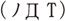
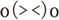
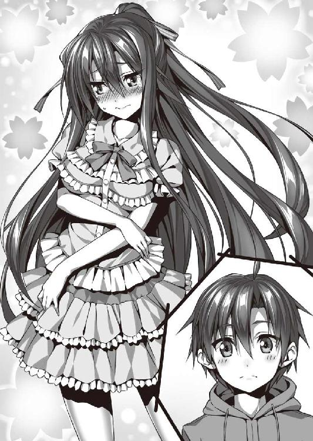

| 僕と彼女とカノジョとかのじょ 2 (オーバーラップ文庫) | |
| 田尾典丈 | |
| (2014) | |
イラスト／ピロ水
家の中にインターホンが鳴り響く。ちょうど、時計の針が七時半を回ったところだ。
「おーい、学校行くぞー。社ー」
続けて外から幼馴染みの、仕方のなさそうな声が聞こえてくる。早く行かないと、待たせちゃうな。
制服よし、ネクタイよし、ハンカチよし、ティッシュよし、弁当よし。
「やっしろー！ 早くー！」
「......や～～し～～～ろお～～～～」
金恵ちゃんに銀花ちゃんまで急かしてくる。金恵ちゃんは普段と変わらぬ元気な声で。銀花ちゃんも釣られるようにして、珍しく声を張り上げていた。普段は声が小さい銀花ちゃんだけど、時折思い出したように、いつもしないことをする。
規則正しい音を立てながら階段を下りると、洗濯物を干しに行くお母さんに出くわした。僕を見て、少し意地の悪そうな笑みを浮かべる。
「ほら、彼女たちから呼ばれてるわよ。朝からお盛んねぇ」
「ちょっとお母さん!? 呼ばれてるだけでお盛んって何!?」
突然、そんなことを言われて面食らった。相手が家族、ましてや続柄・母親なら仕方ないというものだろう。
だけど、そんなお母さんの重い冗談に付き合ってる余裕はない。
玄関まで来て、僕は急いで学校指定の革靴を履く。
「行ってきまーす！」
引き戸の扉をスライドさせると、冬の強烈な朝日が視界を覆った。
突然の光に目が慣れると、その光に照らされた女の子たちが僕の目の前に現れる。その奥には僕の家の神社――その本殿が見えていた。境内では参拝客のご老人ふたりがゆっくりと歩き、鳥が我が物顔で闊歩している。
「遅ーぞ」
「ごめん、黒恵ちゃん」
艶やかな黒髪を後ろで縛り、ポニーテールにしてるのは幼馴染みの小野黒恵ちゃんだ。
ベージュのブレザーに身を包み、黒が基調のプリーツスカートを穿いている。
それは高校指定の冬服だ。下はニーソックスで、ローファーを履いており、ニーソックスとスカートの間に健康そうな太ももが見えていた。
いつものように黒恵ちゃんは首にボウタイを付けておらず、ワイシャツの第一ボタンを外してだらしなくしている。
割と大きめの胸の谷間が見えそうな時があるから困るけど、そんなことを指摘した日にはデコピンで僕のおでこが割れること間違いなしだ。
僕のことを所有物だって言って憚らないからね......。
「別に二分も待ってないじゃない。黒恵ってばせっかちねー」
そう言って小野金恵ちゃんは、体ごとひっついてくるように僕に腕を絡めてきた。
黒恵ちゃんと同じように学校指定の冬服を着込んでいる。一年生の証となる赤を基調としたボウタイも丁寧に付けていた。黒のパンストとブーツを履いていて、柔らかそうな太ももがより扇情的に見えてしまう。
黒恵ちゃんと違うところで一番目立つのは、まずは髪の色。
流れるような金色の髪が腰まで伸びている。日に照らされたその黄金は、より一層眩しく見えた。
「あの、金恵ちゃん......腕に......」
「あはっ、社ってば可愛いなっ！」
腕にしっかりと押しつけられる豊満な胸。
制服の上からでも大きさがよくわかるほどだ。ブレザーの胸元のボタンが今にも弾け飛びそうで、腕のやり場どころか目のやり場にも困る。
そう、黒恵ちゃんとのもうひとつの違いは、この一回りも違う圧倒的な胸の大きさ。黒恵ちゃんに比べると身長も少し高いから胸も比例して大きくなるのも必然かもしれないのだけど、正比例という言葉がまったく当て嵌まらない反則級の大きさだと思う。
「......やしろ」
そして、今度は銀花ちゃんが僕の袖をきゅっと握ってくる。
彼女は学校指定のブレザーの下にセーターを着込んでいた。彼女もまた赤いボウタイをしっかりと付けている。寒がりなのか、このセーターは教室でも脱がない。
その反対に下は膝下までのハイソックスとローファーで、細身な太ももがとても眩しく目に映る。
そんな銀花ちゃんもやはり髪の色が違っていた。彼女の髪はプラチナのように輝き、一本一本がとても繊細でさらさらに見える。
「......ぎんかには胸がないから押しつけられないけど」
そして、金恵ちゃんや黒恵ちゃんに比べると、ちょっと小さい。あ、いや、身長が......。胸も、まあ、慎ましい、かもしれない。
「いや、胸は押しつけるものじゃないからね？」
「......ちがうの？」
「違うよ！」
本気の目で聞いてこないで欲しかった！
「お～～～～～～～～ま～～～～～～～～え～～～～～～～～～ら～～～～～～......！」
そこへ、甘くなってた雰囲気をまとめてひっくり返す、不機嫌なおどろおどろしい声。
「朝から盛ってんじゃねー!!」
黒恵ちゃんの怒りが爆発。その迫力で境内で軽やかに餌探しをしていた鳥が、悲鳴のような鳴き声をあげて一斉に飛び立った。
「なーに？ 別にそんなことを言われる筋合いはないけど？」
だけど、金恵ちゃんは怯むことなく、挑発的な視線を黒恵ちゃんに向ける。
いや、金恵ちゃん、挑発しないで......。ややこしくなるから......。
「わたしたちの気持ちなんか、もう全部わかってるんだからいいじゃない。ねー、社」
「......そうそう」
金恵ちゃんと、そしてその発言に乗った銀花ちゃんが僕の頬にそれぞれ頬をくっつけてきた。こんな時に何だけど、冬で寒い中、とても温くて安心感すら湧き上がってくる。このまま浸りたいぐらいに。
「そういう問題か！ それとこれとは別問題だッ！ ほら、さっさと行くぞ！」
黒恵ちゃんは怒筋を浮かび上がらせるような顔つきで、僕から金恵ちゃんと銀花ちゃんを引き剥がした。
それからすぐに僕に顔を向ける。その表情はわかりやすいぐらいに不機嫌だ。
「というか、お前が流されるからこうなるんだろ！」
「い、いや。そうは言っても」
「言い訳無用！」
額の前に指が来て、一瞬のうちにデコピンされた。ビシッと小気味よい音と共に、おでこに無視できない痛みが走る。
気温が低いせいか、痛みは二割ほど増していた気がした。急激な痛みに、思わずおでこを押さえる。
「ちょっと、黒恵！ 社に何するの!?」
「......くろえー、ぼーりょくはんたーい」
「なーにが暴力だ。これが暴力なら拳で無期懲役になるっての」
「無期懲役になった方がいいんじゃない？」
「ああ？ やるか？」
「あ、あの......！ だから、ふたりとも喧嘩はやめて......！」
しかし、僕が言っても、ふたりは目と目で火花を散らし合っている。
「......やしろ」
火花が散る中、マイペースな銀花ちゃんが僕にスマートフォンを見せてきた。
そして、ある一部が僕の目に映る。短針が八時を過ぎていた。
遅刻ギリギリの時間である。
「いつの間に......!?」
三十分近く、こんな喧嘩をしてたの!?
「黒恵ちゃん、金恵ちゃん、銀花ちゃん！ は、早く学校行かないと！」
「ちっ。話はまた後でな」
「ま、改めてする話でもないけどね」
「......はやく、いく。ごー」
そして、僕たちは学校へと足を向ける。
「ほら、社っ！ 走らないと」
金恵ちゃんも石段を軽やかに下っていった。
「......やしろ、いそご」
銀花ちゃんも金恵ちゃんに続く。
「ほら、早く」「......ごーごー」
金恵ちゃんも銀花ちゃんも。ふたりは黒恵ちゃんの妹ということになっている。名目上は、だけど。
とある事情で海外に行っていた妹たち。
それが金恵ちゃんと銀花ちゃんのことを説明する時の設定だ。
しかし、実際には違う。
彼女たちは黒恵ちゃんが池に落ちた時に、分裂して現れたのだ。言葉にすると自分でもうさんくさいし、信じられないのだけど......困ったことに事実である。
黒恵ちゃんが池に落ちると女神さまが現れて、「今、落ちたのはこの金髪系女子のオノ？」とか「では、この銀髪系女子のオノ？」とか言い始めて、正直に「黒い髪の女の子です」と答えたら「じゃ、素直なご褒美に黒髪系女子のオノはお返しするとしますよー。金髪系女子のオノと銀髪系女子のオノもついでにあげちゃう」と、そんなノリで金恵ちゃんと銀花ちゃんが現れたという......。
まるでイソップ寓話の『金の斧』だ。
こうして改めて思い出してみても、ツッコミどころは満載だと思う。
そんな突飛なことが起こって。分裂後、それなりに上手く過ごしていたんだけど、しばらくしている内に異変が起きた。
僕と金恵ちゃんが仲良くなりすぎて、黒恵ちゃんと銀花ちゃんが消えそうになってしまった。ひとつの魂を、三人で分け合ったがために存在の力が金恵ちゃんに集中してしまったのだという。
それをどうにかするために奔走したけど、結局、全員が消えそうになってしまって......誰かを選ぶ必要があった。
だから、僕は『全員』を選んだ。
選ばなかったんじゃない。『全員』を選んだ。
金恵ちゃんは、黒恵ちゃんのなりたかった姿で。
銀花ちゃんは、黒恵ちゃんがなるはずだった姿で。
どっちも黒恵ちゃんには違いないのだ。
どんな黒恵ちゃんでも、切り捨てることなんて絶対にできなくて。
かといって、ふたりを切り捨てるなんてことも絶対にできなくて。
だけど、運命は残酷だった。
僕が『全員を選んだ』ことで黒恵ちゃんを残して、金恵ちゃんと銀花ちゃんは消えてしまった。
......もっとも黒恵ちゃんがまた池に落ちたことで、どういうわけか、金恵ちゃんと銀花ちゃんは戻ってきている。
そして、また三人との生活が始まったのだ。
だけど、この辺のことは、黒恵ちゃんはあまり話したがらない。
「おい、社。スピード上げろ。間に合わねぇぞ！」
池に何度も何度も落ちて自分から分裂を行った黒恵ちゃんが僕を叱咤する。
なぜ、黒恵ちゃんがまた池に落ちてまで、ふたりを取り戻してきたのか、そこまではわからないけど。今はこの温かい絆を享受していたい。
「はぁはぁはぁ......」
でも、身体の方は走り続けて、物理的に温かいどころか熱くなってるけど。というか、なんで登校ってだけでこんな死ぬような思いで走らないといけないんだろうか。いや、遅刻するのも嫌だけどさ。
まだまだ学校は遠い。閑静な住宅街を駆け抜けて、僕らは走る。
「社、頑張って！」
スポーツの得意な金恵ちゃんはともかく、
「......やしろ、頑張れ」
銀花ちゃんも何気に運動神経がいい。体力もある。ただ、そっちに興味が向いていないというだけで。
そんな風にドタバタしながら僕たちは、いつものように登校した。
これが、今の僕らの騒がしいながらも、楽しい日常だ。
どうにかホームルームの予鈴には間に合ったようで、僕らは肩で息をしながら席へと着いた。この日も、教室はいつもの通りの賑やかさだ。
「おっはー、金恵ー。ちょっと今日の部活で助っ人して欲しいんだけど、どうかな？」
「おはよう、銀花ちゃん、貸してもらった本、すっごく面白かったよ！」
「黒恵。ちょっとトラブルがあったんだけどさー」
みんな、思い思いの話をして朝のホームルームまでの時間を過ごしている。
金恵ちゃんも銀花ちゃんもすでにそれぞれのグループの中に溶け込んでいた。もう昔から一緒にいたかのような馴染みっぷりだ。
「ふたりが転校してきてから華が増えたよなぁ」
後ろの席から佐藤君がそんなことを僕に向けて言ってくる。
「ふぅ、ふぅ..................賑やかになった感じがするよね」
息を整えながら顔だけ振り返ってそんな感想を述べたけど、佐藤君は不満なようだった。顰めっ面を向けられる。
「これでふたりして神座木大好きとかじゃなければなぁ」
「あのね......」
僕が溜息交じりに受け答えすると、佐藤君は僕のよりも遥かに大きい溜息で打ち消してきた。
「お前、美少女転校生っていったらクラスの中で取り合いや鍔迫り合いが起こって行き過ぎた結果抜け駆け禁止協定ができて破ったものは私刑に処されるものなんだぞ。それらお約束を一切合切すっ飛ばして転校初日からふたりして、すでに好きな人がわかってるとか、どんな罰ゲームだったんだ。俺たちは一体どんな希望を抱けばいいんだ？」
「僕に言われても困るんだけど」
「これから目白押しとなるイベント――クリスマス、大晦日、バレンタインデー......俺たちは独り身で過ごさなきゃいけないのに、お前ときたら！」
「いや、女の子は金恵ちゃんと銀花ちゃんだけじゃないと思うんだけど......」
「おいおい、そもそもクラス内のトップスリーは全員彼氏付きなんだぜ」
「トップスリーって......そんなの誰が決めたのさ」
「クラス十人の有志たちだ」
クラスの男子、ほぼ半分じゃないか。
「白流恋歌、鈴木鈴埜、小野黒恵、全員もう予定があるだろうさ」
思わず気管に唾液が入って咳き込むところだった。
「黒恵ちゃん、トップスリーに入ってるんだ......」
初めて知った。黒恵ちゃん、浮いた話、あんまり聞かなかったし。
「かっ。ずっと一緒にいるせいで気付かないのか？ ちょっと男子からすると取っつきにくいけど、容姿だけで言えばグレードＳだ」
謎の単位が出てきたけど、スルーしておこう。
「ん？ でも、黒恵ちゃんに彼氏って」
トップスリーは全員彼氏付きって言ってたよね。
突然、佐藤君は僕を人差し指で指し、
「お前」
「ゲホッゲホッゲホゲホッゲホッ！」
唾液が気管に入った！ 唐突な内容にビックリだ。
「つーか、登下校一緒だし、ほとんどふたりでいるし、入り込む隙間がないだろ」
......まあ、よく誤解されることではある。ただ知っている人以外からは彼氏彼女とはあんまり見られなかったな。姉弟と見られればまだいい方だろう。むしろ、主従って見られてたんじゃないだろうか。僕はご主人様と奴隷だなって思ってたし。
ただ、今となってはどれも否定しにくい。彼氏彼女って点も含めて。
『あたしも、さ。あんたのこと――』
金恵ちゃんと銀花ちゃんが消える寸前に、黒恵ちゃんが言いかけた言葉。
その後の言葉、はっきりとは聞いてはいないし、黒恵ちゃんも言わないのだけど......。
でも、やっぱり僕は黒恵ちゃんが好きで、黒恵ちゃんもきっと憎からず思ってくれているのだと思う。
それに......黒恵ちゃんが僕をよく小突いたりする理由を、図らずも夢の中で知ってしまった。ただ、その話を詳しく聞こうにも、黒恵ちゃんは何も話してくれないんだよね。
「夢は夢だろ。あたしは知らねーな」って案配だ。
幼稚園の頃の記憶となると、金恵ちゃんも銀花ちゃんも知らない。
だから、他に確かめる術もなかった。
「とにもかくにも。俺らの冬は寒いんだよ」
佐藤君がとてもしみじみと呟く。
「トップスリーが何なのか知らないけど、そこにこだわる必要はないんじゃ」
「トップスリー以外は顔面偏差値が話にならんじゃないか！」
......また謎の単語が。顔面偏差値って、相当失礼な単語な気がする。
「あの、佐藤君。音量落とした方が......」
「なんでだ！」
「何が話にならないのかしら？」「顔が不自由なのを佐藤に言われたくないなー♪」「高望みしすぎ？」「分不相応？」「身の程を知りなさい」「とりあえず刑は？」「死刑で」
女子に聞こえるような声で叫ぶから......。佐藤君の背後には怒筋の浮かび上がった女子たちが立っていた。多人数の女子たちが怒りの形相で立っている光景には、何も悪口を言っていないはずの僕もさすがに背筋が震えた。
ヤのつく人でも、たじろぐんじゃなかろうか。
「はーい、佐藤君。ちょっとこっち来ましょうねー」「意識が飛ぶほど痛くしないからねー」「ちょっと関節が不自由になるだけだからねー」「神座木君、お話し中ゴメンねー」「神座木くんはそんな酷いこと考えてないよねー？」
そして、佐藤君は「うわぁ！ ミンチになるのは嫌だぁ！ お許しをー！」なんて言いながら引き摺られていってしまった。
「変な会話に付き合わせてごめんね、神座木君」
「い、いや、佐藤君が勝手に話してただけだから」
そんなことを言って最後のひとりも廊下に出て行った。しばらくして、佐藤君の悲鳴が聞こえた気がしたけど......何もなかったことにしておこう。
「みんな、おはよう。今日もいい天気だねー......って、あれ？ 女子が半分いない!?」
入ってきた可愛いらしい女性の担任が、教室を見渡して慌てた。
......先生、佐藤君もいないです。
「では、今回の授業はここまで。各自、予習復習はしておくんだぞー」
四時間目の終了を告げるチャイムが鳴って授業が終わり、先生が教室から出て行くと同時に、静かだった教室があっという間に賑やかになる。昼休みの始まりだ。
みんな四時間目の授業の疲れを癒しつつ、学食に向かったり、お弁当を取り出したりしている。なお、佐藤君は朝の一件でトラウマを負ったのか、「ウチノジョシ、カワイイ」とずっと壊れたラジオみたいに繰り返している。合掌。
ちなみに僕はお母さんの作ってくれたお弁当がある。それを鞄から取り出した。
「社ー！」「......やしろー」
それと同時に金恵ちゃんと銀花ちゃんが僕の席にやってくる。
「まったく、お前らが変なことしないかどうか、監視するのも楽じゃないっての」
今度は仕方なさそうに黒恵ちゃんがやってきて前の席に座った。
そのまま前の机を反対にして僕の机とくっつける。向かって右に金恵ちゃん、左に銀花ちゃんが座る形になった。
「なーにが監視よ。社と食べたいなら素直にそう言えばいいじゃない」
「......つごーのいい、イイワケ」
金恵ちゃんと銀花ちゃんがすかさず突っかかる。飽きないな......。
「ちげぇっつってんだろ」
「まったく。捻くれてる時間が長いと元に戻せないのかしら」
「捻くれてねぇっての」
「......とくのに失敗したちょうちょ結びぐらい、すっごいひねくれてる」
そりゃ、解くと固結びに変化してなかなか解けなくなる靴紐とかあるけど。
「ま、まあまあ、早く食べようよ」
このままだとあっという間に口喧嘩が始まって昼食時間もなくなってしまう。何度かそういうことがあったから、最近ではすぐに止めるようにしていた。
「ま、金恵や銀花の妄言なんか、どうでもいいけどよ。じゃ、いただ――」
そこで唐突に教室の教壇側の扉が勢いよく開く。
「へーい、オノーズに、社っち！」
教室に突然やってきて、そんな風に声をかけてきたのは友達の蒔埜蓮ちゃんだった。
学校指定の冬服を着てはいる。だが、まだこの日の授業は全部終わっていないのに白衣を着込んでいた。ボーダーのサイハイソックスを穿いており、これは彼女のお気に入りということだ。
しかし、何よりも彼女のかけている片眼鏡がよく目立つ上に、妙に似合っている。悪意などまったく見えない無邪気そうな瞳に、人懐っこい丸顔が馴染みやすさにさらに拍車をかけている。
彼女は、僕らの小学生の頃からの知り合いで、都市伝説部という部活の部長だ。でも、他の部員は見たことがない。
「オノーズってなんだ。変な単語を作り出すな」
「あんたたちをまとめて呼ぶ言葉よ。いいでしょ？」
「ちゃお、蓮。でも、黒恵とまとめられるのは不満だなー」
「......おす、れん。ぎんかも不満をひょーめーする」
「あら、意外に不評」
「火を見るよりも明らかだろ。つーか、何しに来たんだよ。別クラスのやつが」
蓮ちゃんは僕たちＡ組とは一番離れているＥ組だった。
だけど、スマートフォンのコミュニケーションアプリなどで学校中に網を張っている――という噂がある。
転校生の情報とかもすぐに仕入れてくるし、何よりも都市伝説や怪談を含む噂話にはすぐに食らいついていた。
「ああ、そうそう用事用事！ いやー、今日のうちに渡しときたくてさ。お土産を。私、今日は夕方四時からの再放送、『家政婦は憑かれた！ 実際にあった怪談』を見なきゃいけないから、すぐに帰らないといけないのよね。いつも使う道が午後になると工事で塞がれるから、遠回りしないといけないし」
「土産だぁ？」
黒恵ちゃんの蓮ちゃんに向ける目が見る見るうちに訝しげなものになる。
「そ。ちょっと遠路はるばる日光まで行ってきたわけですよ。東海道線で東京まで出て、東北新幹線ではるばる栃木まで」
「何しに行ったの？」
金恵ちゃんが興味深そうな顔をしていた。旅行とか好きそうだしね。
「ま、旅行も兼ねて、ちょっと関東の方の都市伝説を調べにね。うちらの都市伝説ってやっぱり特殊だわ」
腕を組んで、感慨深く語る蓮ちゃん。そんな風に納得するのもわかる。
僕らの街の都市伝説や妖怪や幽霊に関する逸話は、他の街に比べると変というか、妙だった。一般的に怪談はバッドエンドになったり、やりきれない終わり方となる結末が珍しくないらしい。
でも、僕らの街の怪談や都市伝説は違った。
いや、怪談は、もしかしたら怪談ではないのかもしれない。一般的には悲惨な結末になるような話でも、僕らの街では大体幸せな結末に変化している。
例えば、口裂け女の話。
夜、突然、マスクをした女性に「私綺麗？」と話しかけられる。
「いいえ」と答えれば殺される。
そして、「はい」あるいは「綺麗だよ」と答えても殺される。
もっともよく知られる答えは、「それなりに」と答えるというものだ。
しかし、僕らの街では「綺麗だよ」と答え、「こんなでもか！」とマスクを外して襲いかかられる際に、「そんなでもだ！」と愛を叫び彼女の攻撃を躱すことでハッピーエンドとなる。
戸籍を作られ、今も幸せに暮らしている......という結びで。
昔からそう教わっているせいか僕らはあんまり違和感を抱いていないんだけど、小学生の時にこの街に引っ越してきた蓮ちゃんは、目を輝かせて聞いていたっけ。
「はい。というわけで、お土産。黒っちにはこれ」
黒恵ちゃんに、木彫りの猿がついたチャームが渡される。
「はい、かなちーと銀の字にはこれ」
そして、金恵ちゃんと銀花ちゃんにも同じようなチャームが手渡された。
「なんだ、こりゃ」
「日光の名物よ」
「もしかして、三猿？」
僕がそう尋ねると、蓮ちゃんは少し気まずそうに頷いた。
「あー......うん、今の状態ならイエスイエス。三人に渡したのはそれぞれ違う猿よ」
「あー、あたしのは目を塞いでるな。見ざるか」
「わたしのは耳を塞いでるわ。聞かざるね」
「......ぎんかのは、口をふさいでる。言わざる。キィッ」
銀花ちゃん、それ言ってない？ というツッコミはさておき。
それぞれ手に持って猿を確かめると確かに由緒正しい三猿だった。
「今時、三猿って......」
と、黒恵ちゃんは毒づきながら薄目を蓮ちゃんに向けるが、「ま、もらっとく。礼は今度な」と言って鞄の中にしまった。
「へー、面白い」
「......嬉しい、ありがと」
金恵ちゃんと銀花ちゃんは、とても嬉しそうにお土産を握っている。
金恵ちゃんも銀花ちゃんも、黒恵ちゃんを元に分裂したことを考えれば、黒恵ちゃんもああ言いながらも喜んでるってことだろうな。
「社っちにもちゃんとあるんだけど、どっか行っちゃったのよね。学校に来る前、ちゃんと鞄に入ってるのを確かめたんだけど......」
「い、いや、おかまいなく」
僕がそう言うと、「ちゃんと探しておくからね」と言って、蓮ちゃんは手近にあった椅子を寄せて、僕らのそばに座る。
「なんだ、お前まで一緒に食うのかよ」
「いいじゃない。たまにはさ」
「蓮なら歓迎よ。他にも旅行の話聞かせてよ」
「......れんの話は面白い」
そして、昼休みは蓮ちゃんの旅行話をネタに盛り上がった。ほとんど怪談と都市伝説で、黒恵ちゃんは辟易してたけど。
でも、興味深いのは、やっぱりこの街を出ると怪談はほとんどバッドエンドになってるということ。
何か由来に原因でもあるのかな。
「神様の住まう大地、出雲に近いからかしらねー？」
と蓮ちゃんは言ってたけど、その出雲の都市伝説や怪談は一般的なものなんだよね。
午後の授業も終わって、黒恵ちゃんと銀花ちゃんと僕の三人は学校から帰路につく。
金恵ちゃんはソフトボール部の助っ人として、部活動に行ってしまった。
見に来て欲しそうだったけど、辞退させてもらっている。女子のソフトボールを男ひとりで見学とか、変な目を向けられそうだしね。
主人に見放された子犬のような目を向けられたけど、こればっかりは仕方ない......。
そんな帰り道の途中、僕たちは例の公園を通る。
「また、この公園を通るのか......」
黒恵ちゃんはげんなりした顔をしていた。
ここは黒恵ちゃんの家までの近道となる少し大きめの自然公園だ。すでに葉の散った防風林が周りを囲み、公園の中心に池があった。散歩やウォーキング、サイクリングなど、その手の運動には持ってこいの場所で、冬でも何人かの人とは擦れ違う。
「こんな公園だってのに、ホントに飽きずに人が来るよな」
「まあ、春には桜で賑わうし、秋には紅葉で楽しめるいい公園だと思うよ」
今は冬で、寂しい感じがするけどね。
それから以前と同じように、サイクリングコースを道なりに歩いて小さめの池へとやってくる。
前と代わり映えしていない、直径三十メートルほどの池だ。
池の周りは二メートルほどの縁があり、その外には柵が立てられている。さらにその外は遊歩道があり、さらにその周囲にはクスノキが植えられている。また、柵はところどころ開いており、中に入って池を眺めて休憩できるスペースもあった。
ここが、黒恵ちゃんが落ちて、分裂してしまった池だった。
信じられないことではあるけど、女神さまも住んでいる。
「はぁ......」
隠しもせず、黒恵ちゃんは溜息を吐いた。表情も浮かない。
「機嫌悪そうだね......」
「当たり前だろ。ここが発端だぞ。金恵銀花のことは、今更文句を言う気もないけど、駄女神の近くを通るのは気が重いっての」
まあ、そもそもは黒恵ちゃんが池に落ちてしまったことが発端だ。
それだけじゃない。銀花ちゃんと金恵ちゃんが消えた後、女神さまに会うために何度も何度も池に落ちたらしい。
公園を通るのに、いい思い出はないだろうなぁ。
最近はここを通るのを「家に帰るのに回り道して、少しでもウォーキングをだな......」なんて黒恵ちゃんはあからさまな弁明をして避けていた。別にダイエットしてるわけでもないのに......。する必要はないと思うけど。
「ったく、あっちの道が工事で塞がってなけりゃ、こんな池、見ずに済んだのに」
「......たまにはいい。もっと回り道をしたら、坂道のぼらないといけないし」
黒恵ちゃんも銀花ちゃんも、さらに回り道をするのは嫌だったようだ。まあ、あの坂、子供の頃は何度も登ったけど疲れるしね。
「金の斧の寓話だったら、この石でも金に変えろよな。正直に答えてやるっての」
黒恵ちゃんは地面に転がっていた石を拾い上げ、池に向かって投げた。
石は何度か水の上で跳ねた後、着水して沈んでいく。跳ねた後の水面は抗議するかのように大きな波紋を広げていた。
「あ」
そして、黒恵ちゃんは何かを思い出したかのような声をあげる。
「どうしたの？」
「弁当箱、学校に忘れちまってた......」
「......えーと、どういう経緯で思い出したの？」
「波紋見てたら卵焼き思い出したんだよ。そういや机の中に入れっぱなしだったなって」
まあ、黄色い部分と焦げ目の織りなす絵面は波紋を思い出せなくもないけど......。
「さすがに中が空とはいえ、弁当箱を一日置くのはマズいからな。取りに行ってくる」
「わかった。それじゃあ、黒恵ちゃん、また明日ね」
「おう。じゃあな。銀花、くれぐれも頼んだぞ」
「......ん」
黒恵ちゃんに視線を向けられた銀花ちゃんは控えめに頷いた。
......何を頼んだんだろう。銀花ちゃんはわかってるっぽいけど。
まあ、女の子同士の話に割り込むのも野暮だよね。
そして、挨拶もそこそこに黒恵ちゃんは来た道を戻っていった。
「......やしろ、どうする？」
上目遣いで銀花ちゃんが聞いてくる。
「......しけ込む？」
「何でそんな単語知ってるのさ！」
「......女子こーせーをなめちゃいけない。ふふふ」
しけ込む。情事のためにある場所に入り込むことである。
当然だが、いくらなんでも早すぎる。時間的な意味もだけど、色んな意味で。
「......お金がなくて家に閉じこもる意味もあるよ？ くす」
絶対からかわれてる......！
「......でも、やしろ」
すると、銀花ちゃんは突然、真面目な顔になった。
「銀花ちゃん？」
「......遊びに行きたいのは、ほんと。その......ふ.........」
「遊びに行くのはいいんじゃないかな。でも、金恵ちゃんも黒恵ちゃんもいないし......」
せっかく遊ぶなら四人で遊びたいよね。
僕がそう答えると、銀花ちゃんは顔を伏せてしまった。
「......ばか」
「え？ どうかした、銀花ちゃん？」
しかし、そう聞いても銀花ちゃんは顔をこちらに向けてくれない。
......機嫌を損ねてしまったっぽい。
「ちょ、ちょっとここで休んでいこうか。の、飲み物買ってくる」
僕は銀花ちゃんをベンチに座らせて、一旦その場を離れた。
我ながら情けないよなぁ。でも、女の子はやっぱり難しい。黒恵ちゃんだけでもどう対応していいか悩むことが多いのに。
「ホットはあるよね」
自販機の前に立って、お金を入れてからお茶とココアのボタンを押した。ガコンと落ちる音を聞いてから缶を取り出して、僕は銀花ちゃんの下へと戻る。
「え......」
我ながら間の抜けた声が出たと思う。
銀花ちゃんがいつの間にか、池の縁に立っていた。
いや、それだけならまだいい。
今まさに銀花ちゃんの身体は池へとダイブするかの如く傾いていた。
もうあの場から体勢を立て直すのは無理だろう。
僕に向いた銀花ちゃんの表情は、助けを求めているように見えた。
「銀花ちゃん！」
池に向かって走る。
だけど、当然だったが間に合わない。あまりにも距離が開きすぎていた。
銀花ちゃんはけたたましい音を立てて池へと落ちてしまう。
「早く助けないと......！」
僕はようやく池の縁へと到着。
銀花ちゃんは上がってこない。大して深くもない、底に足がつく池のはずなのに。
黒恵ちゃんと同じだ。だけど、あの時と同じだからと言って楽観できるはずもない。
僕はすぐさま、池の中へと足を踏み出す。
ところが、おかしなことに池の中に足が入らなかった。水が地面のように固い。
だというのに波紋は広がったりして、とてもおかしなことになっていた。まるでガラス越しに踏んだ水が動いているみたいだ。
「はいはい、焦んなさんな」
以前も聞いたような、口調の軽い神々しい声。
気付けばいつの間にか僕の周囲は真っ白になっている。
そして、目の前には水面の上に薄いドレス――ふわふわのネグリジェのようなものを着込んだ女の人が立っていた。
以前も見た、女神さまだ。この日もその姿は判然としなかった。身体の大きさがふわふわしている。水で作られたかのような身体も、服も常に歪むように変化していた。
何度見ても、曖昧すぎる存在だ。ＳＦの物語に出てくるような、立体ホログラフィーと言われたら信じてしまいそうだ。
「えっと、女神さま？」
「そうでーす」
そして、この軽いノリである。
とはいえ、出てきてくれたのなら、それはそれで構わない。
「と、とにかく早く銀花ちゃんを助けさせて下さい！ 僕が池に入れるように！」
「あー、この状態だと人を池に入れられないんだよね。すぐ引き上げるから待ってねー......って、ちょっと待った」
「え」
女神さまは僕に向かって、待てと手を突き出すようなポーズを取る。曖昧で不定形だけど、なんとなくそう思った。
それから女神さまは至極真面目な雰囲気を醸し出す。これから、とても重要なことを言うぞ、というかのように。空気がぴりぴりと肌にそんな雰囲気を伝えてきた。
「また分裂させる？」
そして、とんでもないことを言ってくる。
その上、別に真面目に言うようなことでもなかった。
「し、しなくていいですよ！ というか、何言ってるんですか!? とにかく早く銀花ちゃんを助けて下さい！」
「だよねー。聞いてみただけ聞いてみただけ。分裂させて欲しいとか言われても、もう空きがないから困るし。ほら、水の上にいられると邪魔だから陸の方に戻ってなさいよー」
まるで黒恵ちゃんにされるように、不定型な女神さまにシッシッと池から追い払われる。
僕は池から縁の方へと戻った。
そして、幾ばくもしないうちに銀花ちゃんが、音もなく水の中から現れ、池の縁に横たえられる。身体も服も水に濡れてしまっているが、命に別状はなさそうだ。
「......にしても、この子はなぜ水の中に落ちてきたの？」
女神さまが不思議そうな声で呟くように言う。
顔がぼんやりしているからわからないけど、たぶん訝しげな顔をしている気がする。
「い、いや、さあ？ 池の前で体勢を崩しただけなんじゃ......？」
というか、ここで女神さまが出てくる意味が僕にはわからない。
まあ、黒恵ちゃんが落ちた時に出てきた理由もよくわからないけど。
でも、銀花ちゃんが無事ならそれでいいし、落ちた理由も聞けばわかるだろう。
「......ところでさ、今、誰か出て行った？」
「え？」
女神さまは普段よりも鋭い口調で、そう尋ねてきた。『出て行った？』って。
「いえ、特には何も見えなかったですけど」
女神さまはふーっ、と一仕事を終えたように溜息を吐く。女神さまも溜息吐くんだ。
「......まあ、力も戻ってないし、しばらく様子見しましょうかねぇ。じゃあねー、少年」
女神さまがそう言った瞬間、真っ白な世界は色を取り戻して元の風景へと戻った。
女神さまもふっと、最初からいなかったかのように消えていく。
「ゲホッゲホッ！」
時間が動き出したかのように、銀花ちゃんが咳き込む。
服の中に溜まっていたのか、水がその中からザバァッと流れ落ちた。
「だ、大丈夫？ 銀花ちゃん!?」
「......だ、だいじょうぶ......へーき」
銀花ちゃんの背中をさすりながら、顔色を見る。
そこまで酷くはないようだけど、全身ずぶ濡れだし、やるべきことはひとつだ。
「銀花ちゃん、早く帰って着替えないと」
「......うん。やしろが着替えさせて......」
「そんな馬鹿なことを言ってないで！ 早く帰ろうよ」
「......いけず」
ひとまず、僕のコートを銀花ちゃんに掛けた。一番いいのは着替えることなんだろうけど、少しでもこれで冷たさが紛れれば。
「......ありがと、やしろ」
そして、僕たちは歩き出す。
「ところで、銀花ちゃん。何で池に落ちたの？ バランス崩しちゃった？」
「......わかんない。池を見てたら、おされた気がする」
「押された？」
僕が見た瞬間は、銀花ちゃんしか見えなかった。傍に誰もいなかったのだ。
その時点で銀花ちゃんは体勢を大きく崩していたわけだけど......。
僕が見る前に誰かが押したのだろうか？ で、すぐに身を隠した？
人間にそんなことできるのかなぁ......。
「......でも、おもいすごしな気がする。すごい力でおされたわけじゃないし......。人の気配があったかどうかも自信ないし......。つよい風かも......？」
突風だったら、やっぱり周りの木の枝が鳴りそうなもんだけど、それを僕の耳は聞いていない。僕が聞き逃したということもありえるけど......。
本当に、銀花ちゃんの不注意ってだけだったのかな？
その後、ずぶ濡れの銀花ちゃんに付き添って、彼女の家まで行った。
十分ぐらいしか経っていないが、身体を冷やすには充分だったようで、銀花ちゃんの顔色は真っ青になっている。身体もがたがたと震えていた。
「あらあら、銀花ってばずぶ濡れじゃない。早く着替えてらっしゃい」
「......はい、おかーさん」
黒恵ちゃんのお母さんが玄関で心配そうに銀花ちゃんを出迎える。銀花ちゃんは大人しく従って、自分の部屋へと戻っていった。
戻っていったのを確かめてから、小母さんが僕の方を向いてニカッと豪快に笑う。
とても愛嬌のある顔で、いつ見ても若々しい。
「久しぶりね～、社くん。元気だった？」
「は、はい。おかげさまで」
「ま、ま、ま。ほらほら、あがってあがって」
そう言って強引に僕は居間へと連れてこられた。この強引なところは、とても黒恵ちゃんと似ていると思う。そして、丁寧にお茶まで出されて、「じゃ、そろそろお暇します」というわけにもいかなくなってしまった。
「黒恵に散々迷惑かけられてるでしょ。少し痛い目に合わせてもいいわよ」
「いや、そんなことは......」
あるけど、痛い目に合わせるなんて考えもしなかった。
それに、できたところで報復が怖い。
「あの、小母さん。金恵ちゃんと銀花ちゃんは......」
「ああ。あのふたり？ 黒恵とはまあ、口喧嘩が絶えないけど、仲良くやってるよ。騒がしいけど、見てて楽しいわ」
「増えて......困ったりとか」
「なーに、旦那の小遣いを減らせば余裕よ」
小父さん、ごめんなさい......。
「経緯は黒恵から聞いたけど、別に社くんが謝ることじゃないし、気にする必要もないさ。むしろ、小母さんたちはね。感謝してるんだから」
「え？」
「もしかしたら、こういう光景だったのかなって思うと......うん」
それ、どういう意味ですか？ と尋ねようとしたところで、
「......おかーさん、せーふく、乾くかな？」
私服に着替えた銀花ちゃんが濡れた制服を手に居間へと戻ってきた。
「あー、じゃあ、洗濯したらあたしたちの寝室に干しておきなさい。で、今のうちにストーブ点けといて。それで夜には乾くでしょ」
「......ん」
銀花ちゃんはＵターンして居間を出て、二階へと上がっていく。
それにしてもさっきのやり取りは本当に自然だった。
「ま、銀花も金恵も、黒恵とホントに変わらないし。向こうもこっちを本当の親みたく思ってくれてるし、こっちも向こうを娘だと思ってるからね。何ひとつ問題はないよ」
「それならよかったですが......」
「それにあたしらの街じゃ人が増えても驚かないでしょ。違う？」
「いや、まあ、その通りなんですが」
とはいえ、それを何の疑問もなく受け入れてしまうのは、住人たちの気質というような気がしてる。
「ずっと一緒にいられるのかどうかなんてわからないけどね。一緒にいる間は、せめて家族でいたいのさ」
「小母さん......」
「で、誰が一番好みなんだい」
「い、いきなり言われても困りますよ！」
突然の方向転換に、危うくお茶を噴き零しそうになった。
「ただいま」「ただいまー」
そして、タイミングよくと言うべきか、黒恵ちゃんと金恵ちゃんが帰ってくる。小母さんは「ちぇっ、いいところで」なんて呟いていた。
怖い。やっぱり、黒恵ちゃんのお母さんである。
たたたっ、と小気味よい足音が響いて居間の襖が開いた。
「あー、やっぱり社だー！」
我先に金恵ちゃんが入ってきた。
そして、入ってくるなり僕の横に来て身体をくっつけてくる。
「どーしたの？ なんでいるの、社ー」
「い、いや、銀花ちゃんが池に落ちてずぶ濡れになっちゃったから」
「そーなんだー。じゃあ、今日泊まっていくの？」
「は、発想が飛躍しすぎだから！」
程なくして黒恵ちゃんも居間に来た。
居間の中を見てすぐに黒恵ちゃんは金恵ちゃんを引き剥がしにかかる。
「いい加減にしろっ！ つーか、なんで社がうちに上がってんだ！」
「あら、あたしが上げたのよ」
「お、お袋か！ 余計なことすんなよ！」
「別にいいじゃない。減るもんじゃなし。あたしはお客様を家に上げただけだし？ というか、黒恵。お客様に迷惑なことしない！」
「金恵の方が迷惑なことしてるだろ！」
「でも、社くん、迷惑そうな顔してないし」
「や～～～～～～し～～～～～～ろ～～～～～～～～～～～～～！」
一瞬のうちに黒恵ちゃんの怒りのボルテージが倍加した！
小母さんのフォローがフォローになってない！
「えへへ、社、温かーい」
黒恵ちゃんの視線を気にせずに受け流して、金恵ちゃんはさらに僕にひっつく。
柔らかいところとか柔らかいところとかが、すごく気持ちよくて困る。とても恥ずかしいのだけど。
「か、金恵ちゃん、は、恥ずかしいから、その、離れてくれると......」
「やだー」
金恵ちゃんが離れてくれる様子はない。
しかし、黒恵ちゃんが強引に引き剥がそうにも小母さんの前で動くことができず、怒りの発散もできないようだった。
「......あ、ずるい」
そこへさらに銀花ちゃんまでもが戻ってくる。
まるでそれが当然のような動きで僕の隣に来て控えめにくっついてきた。結構しっかりと身体にひっつかれているから、逃げることもできない。
強引に引き剥がそうとすると、力が入って怪我させそう――と思ったけど、僕にそんな力はなかった。そもそも引き剥がせない。
黒恵ちゃんの表情はもはや真っ赤だ。それに比例して、僕の身体がお腹の方から冷えていく。
そんな黒恵ちゃんを楽しそうに小母さんが見ていて、僕はとても胃が痛い。
「いい加減に離れろ、お前ら――――――――――――――――――――っ！」
結局、小母さんが晩ご飯の準備を始めるまで、そんなやり取りは続いた。
晩ご飯を食べていきなさい、というお誘いを辞して僕は帰路につく。
この時間だと、お母さんも晩ご飯作って待ってるだろうからね。残してしまったご飯を次の日のお弁当に使い回すのにも限界があるだろうし。
小母さんのご飯はうちとは違う美味しさだから、食べていきたかったんだけど......それはともかく、銀花ちゃんと金恵ちゃんが慣れ親しんでいたみたいでよかった。
小母さんも小父さんも優しいから、そこまで不安ではなかったけど、実際にやり取りする姿を見るとやっぱり安心する。
ずっとずっといて欲しい。そう思わずにはいられないよ。
そのためにどうすればいいのか......は、まだわかっていないけど。
「ねえねえ」
不意に後ろから声がかかった。聞き慣れない、とても透き通った声。
黒恵ちゃんとも、そして、金恵ちゃんや銀花ちゃんとも違う声だ。
「これ、君の落とし物じゃない？」
そう言われて後ろを向くと、声をかけてきた人の姿が目に入る。
目を、見張った。
「黒恵ちゃん？」
ぱっと見、凄く黒恵ちゃんに似た顔立ちのようだった。
でも、よく見るとまったく違う。
白髪で、銀花ちゃんの銀髪よりもさらに色素が薄まっている。雪のような白さとは、まさにこのことだろう。夜の暗さの中でも、その色をはっきりと主張している。
肌も白百合よりもさらに白く、体付きはとてもほっそりとしていて、触れただけでも崩れ落ちてしまいそうなほど儚かった。まるで絵本の中から飛び出してきたかのような、不思議な雰囲気を自然に醸し出している。
たぶん、それは着ている服のせいもあるだろう。着ているコートは血のように赤く、白い髪と白い肌に相反するかのようによく目立つ。履いているブーツも赤で、白と赤のコントラストが周囲の背景から浮いていた。そして、ソックスの黒が全体のバランスを引き締めている。
だからなのか、その姿をずっと見ていると、妙に目に痛い。
でも、そんな雰囲気とは対照的に、その顔つきは一見とても親しみやすそうで......そのギャップが、彼女を一言で言い表すのを拒んでいるかのようでもある。
「ねー。これ、君の？」
「あっ、と......」
尋ねられて、はっとした。
そして、誘われるように、彼女が手に提げていたものを見る。
それは木彫りの猿がついたチャームだった。今日の昼に、蓮ちゃんが黒恵ちゃんたちに渡していたものによく似ている。
ただ、しゃがんでいる姿勢なのは同じだが、その猿は目も耳も口も塞いでいない。目、耳、あるいは口を塞ぐその手は、股の間にだらしなく下がっていた。
少なくとも僕のものではないし、黒恵ちゃんたちのものでもない。
「ううん、違う......と思うよ」
ただ、やはり蓮ちゃんの持ってきたものと似ている。似すぎている。
でも、三猿って、どれも見た目同じに見えるものが多いし......。
「あ、そうなんだ。じゃあ、私がもらっちゃうね」
儚い雰囲気を持ったその少女は、その雰囲気を蹴散らすかのようにニタリと満面の笑みを浮かべる。
理由はよくわからないけど......その笑顔を僕は少しだけ薄気味悪いと思ってしまった。
「それじゃあね、社くん」
「あ、うん」
そして、彼女は去って行き、夜の中へと消えた。
なんで、あの子を黒恵ちゃんに似てると思ったんだろう。
ところどころのパーツは似ているような、似ていないような......。雰囲気に関しては似ても似つかない。
「あれ？ そう言えば、なんで彼女、僕の名前知ってたんだろう......」
謎は深まるばかりだった。
実は銀花ちゃんが池に落ちたから、黒恵ちゃんみたいにそこから分裂したとか？
いや、まさかね......。
四十四段の階段。それが僕の住んでいる神社へ向かうための唯一の道だ。
階段を上りきったところにある鳥居を潜って、境内へ。
黒恵ちゃんの家に寄ってきたこともあって、すでに空は暗く星が瞬き始めている。外灯は神社側には付けていないが、月が大きく境内を照らしていた。
地元でもそこまで有名ではないが、それなりに古い歴史を持っている。それが神座木神社だ。この時間になると、参拝客は全くいなくなる。まあ、普段から参拝客で賑わってるわけじゃないけど。
「ただいま」
社務所に入ると、居間の方からお父さんの「おかえりー」という声が届く。
そして、お母さんは玄関のすぐ傍にいたようで出迎えてくれた。
「お帰りなさい。遅かったわね」
「黒恵ちゃんの家に寄ってたから」
「あら、最近多いわね。金恵ちゃんと銀花ちゃんが来てからよく行ってない？」
「......そうかな？」
確かに増えてる気がするな。色々と相談事とかが多いってのもあるけど、単純に金恵ちゃんや銀花ちゃんに誘われることも多かった。
「ふーん。で、誰選ぶの？」
「なんでお母さんまでそういうこと言うの!?」
家に帰ってまでこの質問が来るとは。
「まあ、ゆっくりキメなさい」
「......あのね」
そもそもお母さんの中では、あの三人で決まってるのか。
「あ、蒔埜蓮ちゃんだっけ？ あの子でもいいんじゃない？」
「........................あのね」
付き合いきれない。
僕は適当に返事をしながら、部屋へと戻って着替えた。
手伝いのために居間に来たけど、晩ご飯は少し遅くなるようだ。
「炊飯器のボタン押し忘れちゃって。あと三十分ぐらいだから」
「じゃあ、その間に御神木の掃除してくるよ」
「あんたもホント御神木に行くの好きね。いいけど、気をつけて行ってらっしゃい」
部屋に戻って上着を着てから社務所を出た。
うちの神社は山の麓から頂上の丁度真ん中に建てられている。で、その頂上には一本の巨大な木があった。学校からでも見える大きな木で、樹齢は知らない。ただ、相当に古い木であることは確かだ。
神座木神社で昔から祀られており、神様が住まう......という。
霊験あらたかと言われても、僕はあんまり実感がなかったんだけど......つい最近は、色々な現象も相俟って少しだけ信じるようになった。
ただ、『神座木神社の当主の願いを一度だけ叶えてくれる』という言い伝えは、まだわからないけど......。
でも、そんなことは関係ない。僕はあの御神木のある場所が好きなのだ。
「おっと。箒とちりとり、持っていかないと......」
物置で取ってきてから、土を整えて木を埋め込んだだけの階段を上る。周囲は階段以外は森となっていて視界は悪い。だけど、今日もとても静かで空気が澄んでいた。風で葉が擦れ合う音だけが、僕の耳に届いてくる。階段から空を見上げても、周りの木々の枝葉に覆われていて、月の光が少ししか届かない。
「ふぅ......」
そして、山の頂上にある広場に出て、ようやく空が開けた。
その中心にある御神木は相変わらずの威容を放っている。
でも、怖い雰囲気ではなく、優しさで包んでくれるような雰囲気だ。ここから眺める街の景色も、まばらにぽつぽつと明かりが灯っており、星空のようにも見える。
「さて、掃除掃除っと」
周囲に落ちている御神木の葉っぱを箒で集めて、ビニール袋の中へと入れる。
ここの広場の掃除は楽だ。境内の方だと、これがなかなか難しい。砂利と枯れ葉が一緒に集まってしまうので、それが面倒なのだ。
しばらく掃除をして、大体葉っぱを集め終える。
そろそろ御飯も炊き上がるだろうし、戻らないと。
「御神木様」
だけど、やっぱり話しかけるのはやめられない。身体と、心にしみついてしまった癖だ。
「銀花ちゃんが池に落ちて......風邪をひいたりしないか心配です」
僕がそう言うと、風が吹いて枝葉が鳴った。
続けなさいと、言われているようだ。
「......これからも、みんなと無事に過ごせますように」
一度、御神木を見上げてから、僕は階段を下りて家へと戻った。
◇ ◇ ◇
次の日の朝は、天気予報で言われていた通り、とても寒かった。
「......おはよ、やしろ」
幸いなことに池に落ちてずぶ濡れになった銀花ちゃんは風邪をひくこともなく、体調も悪くなさそうだった。顔色も悪くない。
黒恵ちゃんも池に落ちて風邪ひいてなかったし、案外身体が丈夫なのかもしれない。
「ほれ、さっさと行くぞ。別に走るほどじゃねーけど、余裕があるわけでもねーからな」
僕たちは学校に向けて歩き出す。
今日は僕と黒恵ちゃん、金恵ちゃんはマフラーや手袋をしていた。
ただ、銀花ちゃんは手袋をしていない。でも、とても寒そうに手を摺り合わせている。
そんな姿もとても絵になっていて可愛いのだけど、ちょっと見てて痛々しい。
「銀花ちゃん、僕の手袋貸そうか？」
「......え。あ、ううん。ぎんかは、手袋があんまり好きじゃないから」
「あ、そうなんだ」
「お袋が買いに行った時、わざわざ自分のはいらないって言ったしな」
黒恵ちゃんが補足してくれる。
「なんでまた手袋が嫌なの？」
「......圧迫される感じ？ 感触的な......」
まあ、人それぞれだよね。
......あれ？ そう言えば。
「あたしも前は手袋嫌いだったけど、慣れだ慣れ」
そうだ。黒恵ちゃん、子供の頃、嫌いだったよね、そう言えば。
銀花ちゃんは、自分が『黒恵のあるべき姿』みたいなことを言ってたけど......それと関係あるのだろうか。
「......別に、いい。手袋、いらない」
ぷい、と銀花ちゃんは顔を逸らす。
まあ、銀花ちゃんが嫌だって言うのであれば仕方ないよね......。
「じゃあ、これだけでも持ってなよ」
僕はコートのポケットからカイロを取り出す。
そして、銀花ちゃんに渡した。開けてから三十分は経ってるから、結構熱くなってる。二十時間も持つから帰りまで安心だ。
「......あ、ありがと」
銀花ちゃんは照れたように顔を赤くして俯いてしまう。
「あー、いいないいなー。銀花いいなー。社、わたしも欲しー！」
「ご、ごめん。ひとつしか持ってきてないから......」
「ちぇー。じゃあ、銀花、ちょっと貸して」
「......だめ」
「けちー」
金恵ちゃんは可愛く口を尖らせる。
ちょっと不満そうだ。本気ではないだろうけど。
「まったく......カイロなんて軟弱なもん、持ってんじゃねーよ」
「あら。カイロが軟弱だとしたら、手袋やマフラーも軟弱なんじゃないの？」
「は、はあ？ どういう理屈だよ！」
「だって両方とも、寒さを凌ぐためのアイテムだし？ 手袋には作業のためとか、色んな用途があるけど、黒恵のは寒さを凌ぐためでしょ？」
「うぐぐぐぐぐ......」
黒恵ちゃんが金恵ちゃんにやり込められている。
黒恵ちゃん、結構考えなしに発言することが多いんだなぁ......。
「.........」
その横で銀花ちゃんが、ふんわりとした顔をしてカイロで温まっていた。
銀花ちゃんも満足そうでよかった。無理して寒いのを我慢する必要はないしね。
「......あったかい。やしろの温もりを感じる......」
銀花ちゃんの声が聞こえた。可愛らしい感想だ。
......なのだけど、その声にはとても違和感があった。スピーカーか何かを通したかのような、直接的に聞こえてこない声。
「......でも、カイロよりもやしろには、してほしかったことがあるんだけどな......」
また聞こえてくる。声は間違いなく銀花ちゃんだ。その表情も少し悩ましそうに小さく口を尖らせて、こちらを窺っている。
僕が抱いている違和感は――さっきからまったく銀花ちゃんの口が動いていないことだ。
カイロを握ってモジモジと恥ずかしそうにしているが、口はまったく開かない。
「......あ、やしろ、こっち見てる......。真剣な目で見られるとはずかしい......。でも、どうしたんだろ......」
また聞こえた。銀花ちゃんはやはり僕を意味ありげに見つめているだけだ。その小さな唇は一向に、前歯すら見せてくれない。
そして、その声が聞こえたような素振りを、黒恵ちゃんも金恵ちゃんもしていない。
何かしらの反応をしても良さそうなものなのに。
「おい、社。何、銀花をまじまじと見てんだ」
「そうだよ、社。こっちも見てくれないと拗ねちゃうぞっ」
黒恵ちゃんと金恵ちゃんが横から口を出してくる。
「......もう。黒恵と金恵がケンカしてるスキに、ふたりだけで行けばよかった」
そんな不満そうな銀花ちゃんの声が聞こえてくる。
そして、表情もそんなことを言いそうなほど、口を少しだけ尖らせて不満げだ。
......まさか。
いや、まさか。まさか。
「......どうしたんだろ、やしろ。おびえてる？ とまどってる？」
銀花ちゃんが僕を心配そうに見ている。聞こえてきた言葉も、表情と合致していた。
「銀花ちゃん、ぼ、僕は怯えてなんていないよ？ 戸惑ってはいるかもしれないけど」
恐る恐るそう伝えると、銀花ちゃんははっとした表情になる。まさに、心を読まれた!?と言わんばかりの顔つきだ。
「......心を読まれた？」
続けてそんな声が聞こえてきた。
幻聴という可能性が頭の中で薄くなっていく。
「......まさか、やしろに聞こえてる？ じゃあ、ぎんかが今日、黒のショーツ穿いてることも」
「そ、そんなことまで教えないでいいよ！」
銀花ちゃんの心の声（？）に反応してしまった！
黒恵ちゃんと金恵ちゃんは、いきなり叫びだした僕を不思議そうな顔で見る。つまり、それは先程の推測通り、銀花ちゃんの声が僕にしか聞こえていなかったということだ。
「......あ、う......」
そして、銀花ちゃんは小さく呻いて――真っ赤になっていた。白百合のような肌が、少しずつ赤百合のように変化する。
「......な、なんでやしろにわかっちゃうの？ このままじゃ、ぎんかの思ってること、ぜんぶ伝わっちゃう」
焦った声が、そのまま伝わってきてしまう。
「......秘密のことを考えないようにしないと。今日の黒恵は白で、金恵は赤なこととか」
「ちょっと!? ホントに教えなくていいことじゃない、それ!?」
知らなくてもいいことを知ってしまった！ 銀花ちゃんの心の中の流れからすると、間違いなく下着の色だよね!?
「おい、さっきから何を独り言言ってるんだ、お前」
「や、社？ 熱とかある？ もしかして病気？ 早く救急車呼ばないと」
「えっと......う、上手く言えないけど......。とりあえず病気じゃないよ、金恵ちゃん」
仮にこれが病気だとして、僕の病気なのか？ それとも銀花ちゃんの病気なのか？
「......やしろ、聞こえてる？」
銀花ちゃんが怖ず怖ずと聞いてくる。
これは心の声ではなくて、口から出た言葉だった。ちゃんと小さく口は動いている。
僕はそれに対してゆっくりと頷いた。
「......あ、う......。深夜に自分で胸を揉んで大きくしようとしてるのもわかっちゃう」
そんな言葉が頭の中に入ってきた。
涙ぐましい。というか、銀花ちゃん、そんなことしてたのか。
混乱しているのか、あるいは思考の制御が利かないのか。秘密の情報を銀花ちゃんはガンガン垂れ流してくる。
「......あうあうあうぁぅぁぅ......」
目に見えて銀花ちゃんが混乱していた。目の焦点が定まらず、その小さな顔はどこに向けていいのかわからないように、忙しなく動いている。
頬の赤色は、その領域を顔、首と広げ、銀花ちゃんを染めていく。
いや、こんな姿も可愛いんだけど......。
「......きゅう......」
銀花ちゃんが、突然、倒れ込む。僕は慌ててその身体を支えた。
「おい、気絶してるぞ」
黒恵ちゃんが銀花ちゃんの顔を覗き込みながら言う。
銀花ちゃんはぐったりとしており、反応もしない。
「銀花ってば大丈夫――じゃなさそうね」
金恵ちゃんも心配そうに銀花ちゃんの顔を覗き込む。
「学校近いし、まずは保健室の方がいいかもね」
金恵ちゃんの言う通り、僕たちはまず銀花ちゃんを学校へと運んだ。
銀花ちゃん、大丈夫かな......。
銀花ちゃんは保健室の先生曰く寝てるだけで大丈夫ということで、ひとまずは安心した。
まあ、心の中の言葉が漏れるなんて、そりゃ精神的に辛いに決まってるよね。
とりあえず銀花ちゃんを預けて僕らは、保健室を出て教室へと向かう。そろそろホームルームも始まってしまう。
「心の声が聞こえた、ねぇ......」
黒恵ちゃんが疑わしげに呟いた。
まあ、そう思うよね、普通。僕もいきなり黒恵ちゃんがそう言い始めたら、すぐには信じられないだろうし。
「わたしには聞こえなかったけど......。でも、銀花がああして気絶しちゃったわけだし、社だってそう言ってるし、疑いようがないじゃない」
「まあ、騙すつもりがあるわけじゃないだろうけどよ。あたしたちは聞いてないから、いまいちなぁ......偶然ってことはないのか？ 腹話術とか？」
金恵ちゃんと会話していた黒恵ちゃんが、当事者である僕に半信半疑といった顔を向けてくる。
「さすがに偶然というには......。はっきりと聞こえてたし」
僕が銀花ちゃんの声の幻聴を聞いて、その時に銀花ちゃんが偶々同じ表情をした......というのも、さすがに考えにくいし。少なくとも腹話術ではないと思う。
「あいつ昨日、池に落ちたとか言ってたろ。駄女神に何かされたんじゃないのか？」
「どうなんだろう......。特に何かをした様子もなかったけど」
分裂させる？ とか、聞いてきたけど断ったし、女神さまもそう言われたら困るって口ぶりだったし。
ただ、『誰か出て行った？』とは言ってたかなぁ。
そう言えば昨日、黒恵ちゃんの家から帰る時、女の子に会ったけど......まあ、これは関係ないか。結局、なんで僕の名前を知ってたのかはわからずじまいだけど。
「まあ、銀花には悪いけど、これで社を独り占めかなー」
金恵ちゃんがのしかかるようにして抱きついてくる。
や、柔らかい感触が、神経と精神に毒だ......。堕落しそうなほど心地よい。
「盛りやがって。いい加減にしろよ。風紀委員に目を付けられるぞ」
「別にうちの学校、恋愛禁止とかないもーん」
「公序良俗にだって限度があるっての！」
黒恵ちゃんに忠告されつつも、金恵ちゃんは僕から離れようとしない。
ああ、でも金恵ちゃん、こうして間近で見ると改めて可愛いって思う。金髪だから一見取っつきにくそうだけど、すごく愛嬌があるから話しやすいし。体つきも高校生離れしてて目の毒だけど、ちょっと油断するとその魅力に目が離せなくなるんだよなぁ......。
「社......？」
ふと不思議そうな声が金恵ちゃんから漏れる。
見ると金恵ちゃんの顔が真っ赤になっていた。
血色がいいとかそんなレベルじゃない。
風邪......には見えないけど。でも、こういう金恵ちゃんもなんだか可愛い。
「あ、う......」
呻くように声を出して、金恵ちゃんが僕から離れる。
珍しいな。いつもは黒恵ちゃんが引き剥がすまで離れたりしないんだけど。
黒恵ちゃんもそんな金恵ちゃんの行動に疑問を抱いたのか、眉を顰めている。
「.........」
なんだか照れてるみたいだ。......でも、なんで？
抱きついてくることに、羞恥心を抱いた？
まあ、そういう消極的な金恵ちゃんも珍しくてチャーミングな気がするけど。
「えぅ......」
金恵ちゃんの顔がさらに赤くなっていく。
「あ、あの社......。ちょ、ちょっと、その......可愛いとか、チャーミングとか、言い過ぎって言うか......」
「へ？」
いや、僕は声に出しては言ってないぞ？ 可愛いとかチャーミングとか、そう思ったことは確かだけど、金恵ちゃんが魅力的なのは事実だし。
「ま、また！」
「？？？」
金恵ちゃんはどうしたんだ？
「何言ってんだ、金恵。社はさっきから何も言ってねーぞ」
「ええ？ 嘘、そんな......だって......」
黒恵ちゃんの指摘に、金恵ちゃんがおろおろとし始める。
普段、金恵ちゃんはこういう姿を見せないので新鮮だった。見てて、なんとなくほのぼのとしてくる。
「じゃ、じゃあ、これ、もしかして社の......心の声？」
「へあ？」
僕の心が金恵ちゃんに伝わってる？
いやいや、嘘でしょ？ それってつまり、さっきの銀花ちゃんのパターン？
ちょ、ちょっと待って。
じゃあ、いや、まずい、マズい、銀花ちゃんから聞いた、考えちゃダメだ、金恵ちゃんが、考えるのを止めなくちゃ、赤い下着を穿いてるって、あああ、僕のバカ！
思考が止められない。制御できない。聞いてしまった情報を垂れ流しに！ なんてことしてるんだ、僕は！
「な、なんで下着の色が赤だって知ってるの!? え、銀花に聞いた!?」
うわああああ、さっき思ったことが金恵ちゃんにかんっぜんに聞かれてるじゃん！
ああ、でも、ダメだ考えるな、金恵ちゃんの赤の下着姿、これ以上はマズい、見てみたいかもしれない、ああ、なんで思考を止めることができないんだ！ さっきの銀花ちゃんもこんな感じだったのかな！
「み、見たいって......うう、あぅ......。ひうううううううううううううううううう！」
「あ、逃げやがった」
金恵ちゃんは恥ずかしさの臨界を超えたかのように、勢いよく教室とは逆の方へと走り去ってしまう。
「か、金恵ちゃん！ ぐふっ......」
追いかけようとしたところを、黒恵ちゃんに襟首を捕まえられた。首が思いっきり絞まって、変な声が出てしまった。
「おい。説明もせずに、あたしを置いていくな。今度は何だよ」
身体を黒恵ちゃんの方に反転させられて僕は説明を求められる。黒恵ちゃんには僕の心の声が届いていないわけで、何が起こったのか、たぶんさっぱりわかっていないのだろう。もしかしたら、僕らが漫才をしていたようにしか見えないのかもしれない。
「い、いや、僕の心の声が、金恵ちゃんに聞こえてたみたいで」
すると、黒恵ちゃんの目にあからさまな怒りの色が灯った。
「......じゃあ、なんでお前が金恵の下着の色を考えてるんだ？」
「え、今、それ聞くところ!? いや、それは......！」
「まあ、どんなことを考えていたのかはあとで聞くとして」
うう、嫌な難題が残った。銀花ちゃんから聞こえた情報を思い出しちゃっただけなのに。
「あたしにはまったく聞こえてこないんだけど。偶然じゃねーのか？」
「た、たぶん違うと思う。明らかに僕の心の中で言った言葉に反応してたし」
「ったく......。銀花も金恵も、揃って何やってんだか」
......まさか金恵ちゃんまで異常をきたすなんて。
でも、金恵ちゃんは銀花ちゃんと違って池に落ちたわけじゃない。ということは、銀花ちゃんの池ポチャと因果関係はないってことだよね。断定はできないけど。
「というか、金恵ちゃんを追いかけないと」
「そのうち帰ってくるだろ。それに学校の外に出たわけじゃないだろうし。第一、心の中が垂れ流しのお前が行っても、あいつが逃げるだけだっての」
「そ、そうかもだけど......」
大丈夫なのかなぁ。
「ほら、メッセージも来たし、さっさと教室行くぞ」
そう言って黒恵ちゃんはスマホのディスプレイを見せてくる。
金恵ちゃんは『保健室に行ってるから、心配しないで』とメッセージを送ってきていた。
でも、心配だ。
「ほうほう。なんと、そんな面白いことが！」
それから放課後。僕と黒恵ちゃんは掃除の始まった教室を離れ、階段の踊り場に蓮ちゃんを呼んで事情を話すと、そんな第一声が返ってきた。
「いや、面白くは......」
「まー、当人たちにとっては愉快じゃないでしょうなあ。私的には大好物だけど」
う、うーん......。困った女の子だ......。
あれから銀花ちゃんと金恵ちゃんは保健室にずっといる。銀花ちゃんはもうすでに意識を取り戻しているが、少し戸惑っていた。ふたりとも今日は一度も教室まで来ていない。
「銀の字の心の声が社っちだけに聞こえて、社っちの心の声がかなちーにだけ聞こえる、ね」
「聞いたことないわねぇ。よく言われるダダ漏れの人ともちょっと違う感じだし」
「ダダ漏れって......」
「自分の心の中が外に垂れ流されちゃう人のこと」
「そんな人いるの？」
「いるわけないでしょ。......たぶん」
そりゃ、そうだよね。自分がどんなことを考えているか全部周りにダダ漏れだったら、生き辛くて仕方ないだろう。
相手への悪印象とか、そういった諸々がすべてわかってしまうわけだし......。
「ただ、自分の心中が外に漏れてるって思い込むっていう病気はあるわ。精神的なものだけどね。でも、社っちたちは違うでしょ？」
「う、うん。僕は銀花ちゃんからはっきりと聞こえたし、金恵ちゃんは僕からはっきりと聞こえてたっぽいし」
「違うのはそこよねー。特定の人物にのみコネクトされてるってこと。周囲の人間に垂れ流しってわけじゃないのよね」
まあ、僕が思っていることが例えば金恵ちゃんだけじゃなく、黒恵ちゃんやクラスメイトに聞かれてたらたぶん心が病んでるだろう。特に黒恵ちゃんに聞かれてたら......。
「それで社っち、保健室には行ったの？」
「う、うん。範囲的には三メートルぐらいで壁とかは関係ないみたい。ただ、発生する時としない時があって」
「縦――上下にも三メートル？ 教室は天井までの高さ三メートルだけど」
「うん。上下にも三メートル。ちょっと金恵ちゃんと銀花ちゃんに保健室の机に乗ってもらったりして、高さを調節しながらチェックしたから......」
「なるほど。積極的なのはいいことね。ま、解明は任せておいて」
どんと力強く胸を叩く蓮ちゃん。とても頼もしい。
「期待はしてねーけど、とりあえず頼む」
黒恵ちゃんは疑わしげな目だったが。
「大船に乗った気持ちでいなさいっての」
「......泥船だろ」
そんな黒恵ちゃんの言葉にもめげず、蓮ちゃんは金恵ちゃんと銀花ちゃんのいる保健室へ、嬉々として向かっていった。
「流れで任せちゃったけど、大丈夫かな」
「頭はいいしな。解析そのものには期待できるだろ。あいつに解決は無理だろうけどな」
それに、僕が解決に乗り出すにしても、今のふたりに僕が近づいたら聞こえたり、聞かれちゃったりするわけだし......仕方ないか。
今は様子を見るしかない。池との因果関係も今のところわからないし、女神さまに頼るわけにもいかないしね。そもそも出てくるかどうか気まぐれだし。
「まあ、あたしらが行っても仕方ねぇし。帰るぞ、社」
「う、うん」
そして、僕たちは正門から学校を出た。帰宅ピークは過ぎており、すでに生徒もまばらだ。学校を出ても、吹奏楽部の演奏が微かに聞こえてくる。
「こうしてお前とふたりで一緒に帰るのも久しぶりだな」
そんな中、黒恵ちゃんは珍しくそんな話題を振ってきた。
そうだね。最近は金恵ちゃんと銀花ちゃんが一緒だしね。
「そうだね。黒恵ちゃんと一緒で僕も嬉しいよ」
......あれ？
「な、何言ってんだ、お前」
本当に何を言ってるんだ、僕は......。
ごめん。久しぶりだから、口が回ってないのかも。
「はは、ごめん。黒恵ちゃんみたいな可愛い子と一緒に帰れるから舞い上がってるんだ」
何言ってんだ、僕!? 口が勝手に!?
黒恵ちゃんは凄く真っ赤になってるし！
「に、似合わねーこと言ってんじゃねーよ！ やめろ！」
ご、ごめん、黒恵ちゃん。なんでか、さっきから変なことばっかり......。
「ごめんよ、黒恵ちゃん。でも、少しでも似合う男になるためにも、ここは見逃して欲しいかな」
僕のキャラじゃないのに、キザったらしい言葉がすらすらと出てくる。
いやいやいやいや......！ なんだ、これ!?
「や、社......！ わ、悪いものでも食ったのか？ また不幸な目に合ってるのか!?」
赤い顔が、青くなり、みるみる顔色が悪くなっていく。
だ、大丈夫だから、黒恵ちゃん！
「大丈夫だよ、黒恵ちゃん。僕は正常だよ。でも......」
勝手に口が動くのが止まらない。
「黒恵ちゃんの可愛さでダメになっちゃうかもしれない」
ホントに何を言ってるんだ、僕はあああああああああああああああああああ!!
「何言ってんだ、お前はあああああああああああああああああああああああ!!」
ビシッ、と小気味よい音と共に、おでこの一部が痛くなる。デコピンされた。久々に強烈に痛かった。
デコピンした後は機嫌の悪い顔をしていることが多い黒恵ちゃんなのだけど......この時は違った。まるで幽霊か、宇宙人を見ているかのような顔をしている。
でも、僕も今は鏡を見るのが怖い。鏡を見たら形容しがたい顔をしているんじゃないかと思う。鳥肌が立つような台詞を連発したし......。
本当になんだ、これ？
「ひどいな、黒恵ちゃん。でも、黒恵ちゃんのデコピン、僕は愛を感じるんだ。おでこの熱さは、君の愛と比例している気がするから」
酷すぎる。自分で言っててなんだけど、ホントに酷い。キザというか、ただのバカだ。
「ば、ば、ばぃ、ば、ば、ば、バぁカィか!?」
黒恵ちゃんの言語野がおかしくなったらしい。顔を真っ赤にしたり、青くしたりして、呂律が回っていなかった。表情も緩んだり怒ったりと忙しい。
もっとも、言語野がおかしいのは僕も同じだ。というか、さっきからおかしいって伝えようとしてるのに、何故だか言おうとしている言葉が出てこない。
「親バカならぬ、黒恵ちゃんバカではあるけどね」
その上、まったく別の言葉だけが出力される。
僕はたださっきから「口が勝手に動いてる」って言おうとしてるだけなのに！
「やっ、やだ、そ、そんなこと言うなんて社じゃ......。な、なんでそんなチャラい顔してんだ......！」
いつもの迫力はどこへやら、随分としおらしくなっていく黒恵ちゃん。軽く手を組んで人差し指をもじもじさせている。
久しぶりに見る癖だった。小学生の頃以来だろうか。
......というか、チャラい顔って何？ 僕、今、そんな顔してるの？ もしかして、声だけじゃなくて、顔もおかしいの？
「いつも言いたかったけど、なかなかタイミングがなくてね。やっと言えたよ」
何言ってんだこいつ。自分だけど！ 言うタイミングなんかいくらでもあったと思うんですけど！ 十年以上もタイミング計ってたの!?
......って、自分の言った言葉に、心の中でツッコミを入れてどうする！ 特殊なノリツッコミをしてる場合じゃない！
これもたぶん金恵ちゃんや銀花ちゃんが患ってる不思議な現象の類に違いない。
「な、なんで、今さらそんなことを......。お前......」
でも、黒恵ちゃんは混乱しているようで気付いていないようだった。いつもだったら、あり得ないと断じて黙らせてきそうなのに......。
「う、う......」
黒恵ちゃんが一歩後ずさる。
「あ、あの、黒恵ちゃん？」
あ、やっと思った通りの言葉が出た！
「そんなに怖がらなくてもいいんだよ。何もしないさ、子猫ちゃん」
もう！ なんなんだよ！ すぐにまったく別の言葉が！
「うわああああああああああああああああああああああああああああああああああ！」
そして、黒恵ちゃんは僕に背を向けて逃げ出してしまう。追いかけたのだけど、もう数十秒後にはその背中は見えなくなった。黒恵ちゃん、足速いな、ホントに......。
「なんだったんだ......？ あーあーあー。あかまきがみあおまきがみきまきがみ」
発声練習をしてみたけど、思った通りの言葉が出た。キザったらしい言葉に変わったりしない。
「ちゃんと声、出るよね......」
黒恵ちゃんが逃げちゃったから、もう確かめることはできないけど。
そこにぴろんと小さく着信音が鳴った。コミュニケーションアプリのＷＩＲＥで新しいメッセージを受信した時の音だ。
すぐにスマホのディスプレイを見る。メッセージは蓮ちゃんからだった。
『【蓮】
なんとなく原因がわかったかもしれないんだけど。仮説アリ 』
『【蓮】
黒っちと一緒に黒っちの家に来てもらえる？ 』
『【蓮】
私とかなちーと銀の字はもう向かってるから 』
そんな三連続の顔文字付きメッセージの下にはゆるキャラかどうかは怪しいキモい饅頭みたいなキャラがサムズアップをキメている絵まで貼られていた。どういう意味だろう......。何か意味あるのかな、これ。
ＷＩＲＥを使っていると頻繁に貼られる。蓮ちゃんや銀花ちゃんがよく使う。他にもゲームとかの機能もあるんだけど、これ蓮ちゃんに言われて入れただけで、メッセージを手軽に送る機能以外、僕は使っていなかった。
「とりあえず、行かないと」
蓮ちゃんの仮説は聞いておきたい。
『【社】
わかった。でも、黒恵ちゃん、逃げちゃっていないんだよね』
『【社】
たぶん、家に帰ったと思うんだけど』
そんな感じで短くメッセージを書き込むと、すぐにまたメッセージが届く。
『【蓮】
なーにやってんだい、黒っちは 』
むしろ、何かをやった......というか、言ったのは僕ではあるんだけど。
『【蓮】
そっちでも何かあったんじゃない？ 』
『【蓮】
ずばり、見えないものを見た的な 』
鋭いと言えば鋭い。僕の言動が一番おかしかったはずだけど、黒恵ちゃんの言ってたことを考えると、顔もおかしかったはずだ。
チャラいとか言ってたし。......ホントにどんな顔なんだ。
とにもかくにも、今は蓮ちゃんの話を聞きに行くのが最優先だった。
黒恵ちゃんの家に行くと、玄関には予想通り見慣れた靴があった。
「黒恵ったら家に帰ってくるなり、引きこもっちゃって......。あ、入って入って」
と小母さんが教えてくれつつ、今日もまた家の中へと入れてくれた。
居間へと通されて、僕をここに呼んだ当人たちが戻ってくるのを、出されたお茶を飲みながら待つ。
半分ぐらい飲んだところで銀花ちゃんと金恵ちゃんが学校から帰ってきた。
「あっ、社......ごめん！」
「......やしろ、ごめんね......」
そして、帰ってくるなり、申し訳なさそうに二階へと早足であがっていった。
「おーい......。せめて、私を中に入れてからだな......」
蓮ちゃんが玄関に取り残される。
「あら、蓮ちゃん。お久しぶりね。うちに来るのは中学以来？」
そんな話をしつつ、小母さんは蓮ちゃんも家の中へと入れた。僕と同じようにお茶を出して持て成す。
「何か色々あるみたいだけど、自分の家だと思ってくつろいで」
何しに来たんだと言われてもおかしくないのに、割と小母さんは適当である。僕たちを信用してるのか、新しい遊びをしていると誤解してるのか......。
「友達の家に行ってさ。その家主の友達が買い物に行って取り残された時の気まずさってこんな感じよね」
「まあ、うん。わかる気がする」
「小母さんが、気にしてないのはありがたいけどねぇ」
おかしなことになってるのは相談もできないし、そもそもなんと言って説明すればいいのかもわからない。僕たち以外にも影響が出てきたら、さすがに問題になるけど......。
「ま、黒っちの家なら気兼ねなく過ごせるからいいんだけどね。さて、私の仮説強化のためにも黒っちの症状を教えてよ」
アレはあまり説明したくないんだけどなぁ......。蓮ちゃんが「早く早く早くハリー」と言って急かしてくるので、僕は言葉を選びつつ説明を始めた。
「うん......。僕の口がおかしくなってキザったらしい言葉を吐くようになったんだけど」
「おや？ んー......。それだけ？」
蓮ちゃんは指を顎に当てて首を傾げる。どうも納得がいっていないらしい。
「一番酷かったのはそれかなぁ。あとは......顔がチャラいって言われたかな」
「どんな顔？ ちょっとしてみてよ」
「や、やだよ！ それにわかんないよ！」
ホントに、チャラい顔ってどんな顔なのさ......。
「な・る・ほ・ど......。とはいえ、これもまあ、ありかー......」
天井を見上げて唸りながらも、僕の話からそれなりにヒントを得たようだった。
「やっぱり、この現象ってひとまとめになるもの、だよね？」
「そりゃね。別の線も考えてみたけど、原因はひとつに集約されるはずだから」
僕は鞄からノートとシャーペンも取り出して、箇条書きにしていく。
「まず、銀花ちゃんは、僕が心を読めるようになって」
「そうだね。言葉を言わなくてもよくなったわけだ」
「次に金恵ちゃんが、僕の心を読めるようになったんだよね」
「イエス。つまり、言葉を聞かなくてもよくなったってこと」
蓮ちゃんが補足してくれるおかげで、さすがに僕も気付いてきた。
「じゃあ、黒恵ちゃんは......もしかして何かを見たってことになるの？」
「ご名答」
蓮ちゃんはよくできましたと、難問を解いた生徒を褒める時のような顔になった。
「見ざる言わざる聞かざる......いわゆる、三猿ね」
なるほど言われてみれば頷ける......ん？ あれ、でも。
「黒恵ちゃん、別に何か見てるわけじゃなさそうだけど」
「見るってのは、目で見るものだけってわけじゃないべよ。まあ、ちょっと黒っちに確かめてくるから待っててちょ。たぶん、私の予想あってると思うし」
そう言って蓮ちゃんは二階へ上がっていった。
さすがにここまで声は聞こえてこない。ただ蓮ちゃんは、すぐに戻ってきた。
「うん、やっぱり黒っちは見てたよ。理想の社っちを」
「へぁ？」
突発的な単語のせいで、どこから出てきたのかわからないような声が出た。慌てて口を押さえたけど、もう遅い。蓮ちゃんはクスクス笑っている。
「黒っちは色々と誤魔化そうとして遠回しに言ってたけど、要約するとそういうこと」
あのキザな台詞を吐いて、チャラい顔をしたらしい僕が理想？ さすがに頷けない。
「絶対にそれがいいかどうかはわかんないけど、そういう社を心の中で大なり小なり求めてたってことじゃない？」
「あんな台詞がよかったのかなぁ」
「どんなこと言ったの？」
「黒恵ちゃんの可愛さでダメになっちゃ......あ」
「ぶひゃ――――――――――――はははひゃははひゃひゃひゃひゃひゃひゃひゃひゃひゃひゃひゃひゃ。すっごいギャップ！ あゃひゃひゃひゃぶひゃ――――――――――――はははひはひひひひひひっひっひひひひっひひひひひひっひひっひひひひひっ!!」
大爆笑された！
蓮ちゃんの誘導尋問に、言葉が口から自然に......。間抜けすぎる。
「ちょっと蓮ちゃん、笑いすぎ！」
お腹を押さえて、床の上でもんどり打っている。
いくらなんでも大げさだと思うんだけど！
「うひひっ、うひっ、うくくっ......あひゃひゃひゃひゃひゃひゃひゃひゃひゃひゃ！ いや、これを笑うなって方が難しいってば。いや、いいよいいよ、社っち！ いいキャラだって！ あはははははははっ！」
その上、床をバンバン叩き始めた。
「ひどく傷付けられた気分だよ......」
「あー、もう、ゴメンってば。ひぐっ、くくっ......！」
謝っているのに、口から笑いが溢れている。
......いや、まあ、自覚してるけどさ。酷い言葉だなって。
僕の意思で言ったんじゃないけど。
「ふー、笑った笑った。もう一ヶ月もしないうちに今年も終わるってのに、今年一番笑ったわ。で、他にどんなことを言ったの？」
「もう言わないよ！」
「じゃあ、チャラい顔してみてよ」
「それは僕にもわからないから！」
「残念。でも、黒っちに起こっていることは把握できたよね？」
蓮ちゃんは今までとは一転、真面目な顔を作ってそう語る。本当に切り替えが早いというか、突然だよね。
「うん、黒恵ちゃんたちに起こっている内容はわかったけど。でも、そうなると三猿のせいってこと？」
「たぶんね。本来、言えないことを伝えてしまう、銀の字。本来、聞こえないものを聞いてしまう、かなちー。本来、見えないものを見てしまう、黒っち。それぞれ対応したように言・聞・見に異常が起こっていることは確かでしょ」
「そうだね......」
「だから原因はたぶん、私が土産物で買ってきたアクセサリーだわね。普通の土産物屋で買っただけなんだけどなぁ」
蓮ちゃんは珍しく気落ちしている。
さっきは口を開けて大笑いしてたのに。切り替えが早い所以か。
「ま、まあ、蓮ちゃんが面白がってこうしたわけじゃないし、仕方ないよ」
「ありがと。こうなってくると社っちにプレゼントしなかったのは不幸中の幸いかもね」
こうなることを予測できたら、きっとそれは神様だろう。
「あ、そう言えば神様と言えばさ」
「ん？ 何か心当たりでも？」
「いや、昨日の話なんだけど銀花ちゃんが池に落ちたんだよね......」
「......あの池に？」
「う、うん......」
僕に思いっきり顔を近づけて、真偽を探るような目を向けてくる。探究心に溢れてる。
「なるほど......ま、今は三猿をどうするか決めないとね。破壊するなり焼くなりして供養すればいいのかしら。呪いのアイテムになったのなら仕方ないし、手っ取り早く壊した方がよさそうね。それで駄目ならお焚き上げしてもらいましょ。社の家でもやってるでしょうし」
蓮ちゃんはぶつぶつ考えごとをして呟きながら居間を出て二階へと向かう。僕もその後についていった。ただし、僕は三人の現象が起こる範囲に入らないように。
そして、蓮ちゃんは二階の廊下から扉越しに三人に話しかける。
「おーい、お三方ー。私がプレゼントした三猿ってあるー？」
すると、部屋の中で揃ってがたがたと音を立て始めた。
だけど――。
「あれ、ない？ 確か昨日、鞄の中に入れてたよな？」
「どーしてー!? 鞄に付けてたはずなのに」
「......おかしい。カバンの中にない」
扉越しに聞こえてきたのは、揃ってそんな不可解と言わんばかりの声だった。今もがさごそと部屋の中を探す物音が聞こえてくるが、「あった」という声はあがらない。
「全員、紛失か。こりゃ、もう原因三猿確定かー。でも、困ったわねぇ。全員の三猿が手元にないとなると、少なくともすぐに解決できるようなことじゃなさそうだわね」
「このままじゃ、学校にも行けないよ......」
「社っちが保健室登校するとか？ 教室から保健室まではその現象が届かないわけだし」
「そうするしかないのかなぁ。さすがに、そこまではしたくないけど......」
とはいえ、黒恵ちゃんたちのことを考えれば、そうしないといけないのかもしれない。
黒恵ちゃんたちが揃って保健室に行くのと、僕がひとりで保健室に行くのとなら、人数を考えても僕が行くのが道理だろう。
「さて。ちょっと居間に戻りましょうか」
「え、ここでみんなと相談した方が......」
「声を出さなきゃ相談できないってことはないからね。この現代だと」
そして、蓮ちゃんと僕が居間に戻ると、
「ＷＩＲＥで相談しましょ」
そう言ってスマホを取り出した。ピンク色の少し大きいスマートフォンだ。片手で扱えなくはないかもしれないけど、それは手の大きい人に限られるだろう。
「ＷＩＲＥかー。便利だけど、この現象ってデジタルまで範囲内だったりしないかな？」
黒恵ちゃんに伝える言葉が、こっちでまでキザったらしくなったら怖いぞ。そうなったら今度はフォントがチャラいとか言われてしまうのだろうか。どんなフォントだろうか。
「そうなったら別の手段を考えるだけよ。やるだけやってみる、それが若者の特権よ」
「同い年なのに」
「社っちもドンドン挑戦しろって意味だってば」
そして、蓮ちゃんはＷＩＲＥで全員に今の状況を説明した。
ＷＩＲＥにはトークという複数人でメッセージのやり取りができるシステムがあるのだ。そうすることで、個別にメッセージを送るだけでなく、みんなで一緒にコミュニケーションができるようになる。
蓮ちゃんは元々設定されていた、僕ら五人メンバーのグループでチャットを始めた。
『【黒恵】
蓮のせいかよ』
『【蓮】
普通の土産物屋で買ってきたんだけどねぇ。ごめんよー 』
『【金恵】
気にしない気にしない。予想できないよ、こんなの 』
『【銀花】
蓮は悪くない』
......みんなメッセージを打つのが早いな。僕は「大丈夫？」と打とうとしたけど、打ち終わった時にはもうそんな場面じゃなくなってたから、すぐに消した。
それにしても、こういうところにも個性が出てる。
黒恵ちゃんは、端的なメッセージ。文字だけだ。
金恵ちゃんは、蓮ちゃんと同じく顔文字多用。
銀花ちゃんは、メッセージの下に大体何らかの絵を貼っていた。スタンプというやつだ。今回は笑った顔のキャラが貼られている。笑って許す......ということだろうか。
これはこれで面白いし便利だし、味もあるのだけど......やっぱり、直接話すことに比べると味気ない。近くにいるから余計にやりきれないのかもしれない。
そんなことを考えている間にも、どんどんと会話は進んでいく。
『【蓮】
とりあえず、かなちー、下りて来てくれない？ ゆっくりでいいから』
『【金恵】
え!? いや、でも...... 』
『【蓮】
この中だったら、一番実害がなさそうだし、一番冷静そうだしね』
金恵ちゃんは渋々ながらも、蓮ちゃんの頼みを了承した。
それから階段を下りてくる足音がゆっくりと聞こえてくる。そして、襖がそーっと開かれ、顔半分だけ金恵ちゃんが出てきた。そんな控えめな仕草がちょっと可愛い。
「ふー......」
僕を見て、おでこの汗を拭う仕草をしながら金恵ちゃんは居間の中へと入ってくる。
「僕の心の声、聞こえない？」
「うん、大丈夫。今は聞こえない。よかったー」
そう言って、ホッと溜息を吐いて金恵ちゃんは僕たちの座っているテーブルに着く。
「もしかして、治ったのかな？」
金恵ちゃんが不安そうに問うが、蓮ちゃんは首を振った。
「さすがにそれは楽観的よー、かなちー。ま、だからこそ、その条件を探るためにかなちーに来てもらったんだけど」
「心の中が聞かれちゃう銀花はともかく、黒恵じゃダメなの？」
「黒っちの場合、舞い上がっちゃうからねぇ。かなちーは社っちの声が聞こえるだけだし、大丈夫でしょ？」
「だ、大丈夫じゃないよ!?」
「どんなことを思われたってのさ。ちょいとお姉さんに話してみ」
少し躊躇い気味に金恵ちゃんは、蓮ちゃんの耳に口を近づける。
「ほう、ほうほう、ほうほうほう」
蓮ちゃんの目がキラキラと輝き出した。これはよくない傾向だ。
「いやー、社っち。結構言うねぇ！ いや、思ってるねぇ！ 心の中では相手の良さへの言及を隠さないってことね」
「し、仕方ないじゃないか！」
「私も聞きたいなぁ」
「勘弁して......」
心の中が蓮ちゃんにまでバレたら、蓮ちゃんは抱腹絶倒で死んでしまうのではないだろうか。もちろん、僕の心の中がギャグで溢れているというわけではなく。
「冗談はさておき、まあ、嬉しいだけならいいじゃない。社っちは、かなちーに対してひどいこと思った？」
金恵ちゃんはふるふると首を振る。
「声が聞こえてきたら、部屋に戻っていいからさ。ちょっとだけ試させてはもらうけど」
「わかった。でも蓮、条件って何だろ？」
「異常が起こった時に、いつもとこれ違うなとか、そういう自覚ってあった？」
「どうだったかなぁ......」
これは黒恵ちゃんと銀花ちゃんにも聞いてみるべきかな。
さっそくＷＩＲＥで聞いてみたものの、
『【黒恵】
特にねぇな。社とふたりで帰ったってぐらいか？』
『【銀花】
特に心当たりなし。ちょっとドキドキしてたぐらい』
銀花ちゃんの下には、ハテナマークのスタンプが貼られている。
蓮ちゃんはそれを見て、ふーむと唸った。
「ふたりきりが条件ってわけじゃないわよねぇ。銀の字とかなちーは違ってるし。かなちー、現象が起こった時、どんなこと思ってた？」
「社に抱きついてたから......ちょっと嬉しかったし、あとはドキドキしてたかな」
「最近は抱きつき慣れてるだろうに、ういのう......」
蓮ちゃんはしみじみと言う。僕を見るその目は妙に意味深だ。
「でも、黒恵ちゃんは違うみたいだけど」
僕がそう指摘すると、蓮ちゃんは僕を半目になって呆れたように見る。
「黒っちが社っちと一緒に帰ってて、ドキドキしてないわけがないでしょ」
「......そ、そうなの？」
「はぁ......。まあいいから。とにかくそういうことにしておきなさい」
溜息を吐かれてしまった。
「つーわけで、ちょっと試すわよん。それぃ！」
何を？ と返す暇もなかった。妙な掛け声を発して、蓮ちゃんは僕の手を取る。
「ていっ！」
そして、ごく自然に僕の手を、金恵ちゃんの胸に押しつけた。
「ひぃっ！」
「はぅっ！」
金恵ちゃんの豊満な胸の感触が僕の手の平に完全無欠に伝わってくる。
服の上からなのに、何でこんなに柔らかいんだ。
「ちょ、ちょっと蓮ちゃん！」
「ま、ま。手っ取り早くドキドキさせるにはこうするしかないかなーって」
「他にやりようはあるでしょ！」
金恵ちゃんは、いきなりのそんな状況に顔を真っ赤にしている。
「おっと、かなちー。どうしたい。そんな顔赤くして。いつも胸を押しつけたりするのは割と平気っしょ。もしかして自分が積極的にされるのは慣れてない？」
蓮ちゃんの不躾な質問に、金恵ちゃんはこくこくと頷いた。ほんの少し意外だった。
でも、やっぱりこういう慌ててる金恵ちゃんは可愛い。
「あぅっ、聞こえてきた......！ また可愛いって......！ 社ってば、もう......」
金恵ちゃんは立ち上がって居間から逃げる。バタバタと階段を上がる音が聞こえてきた。
「これで確定かな。興奮とか、大きな感情の揺れ動きとか、そういうの」
「距離を取って生活するしかないってことかな」
「そうねー。あー、でも、私も仲間に入れてほしいなー」
蓮ちゃんは心底残念そうにそう言った。好奇心旺盛すぎる......。
◇ ◇ ◇
まあ、こんな状況で普段通りに過ごすことは、なかなか無理があるわけで。
不安な心持ちの中、次の日の金曜日。
「......やしろ、ぎんかのことをどう――」
感情に気をつければ大丈夫――で、登校中に銀花ちゃんの心の声が僅かに聞こえた。
「にゃ――――――――――――――――――――――――――――――っ！」
と思ったら、銀花ちゃんは猫のような鳴き声をあげて逃げてしまった。たぶん、誤魔化してるつもりだったんだろうなぁ......。
事態が事態だけに追いかけるわけにもいかない。
この現象のトリガーとなるらしい興奮の閾値は、そこまで高くなかった。ちょっとドキドキしただけですぐに発生するっぽい。
......それにしても銀花ちゃん、あんな声出せたのか。
『【社】
銀花ちゃん、大丈夫？』
『【銀花】
大丈夫。ごめんね、社』
と、ＷＩＲＥでやり取りして安否を確かめる。
「また銀花のやつ、漏らしたのか」
それだけだと銀花ちゃんが粗相したみたいに聞こえるんだけど。
「黒恵ちゃん。女の子の口から、そんな漏らしただなんて言うもんじゃないよ。君の価値が下がってしまう」
ひぃ！ 黒恵ちゃんの現象が発生してるし！ なんてキザったらしい台詞だ！ 僕の口から出てると思うと死にたくなる。
案の定、黒恵ちゃんの表情は真っ赤だ。
もう興奮するな、冷静になって、と言っても無理がある。
「うわあああああああああああああああああっ！」
黒恵ちゃんも逃げた。
距離を取るのが一番手っ取り早い対応策だから、そうせざるを得ないよね......。
でも、逃げられるのは理由がわかっていても、なぜかヘコんでしまう。女の人の数メートル後ろを歩いていたら、足早になって離れられるとか。僕、何もしないのに......。歩いてるだけなのに......。
『【黒恵】
悪いな。とりあえず、先に学校行く』
スマホのＷＩＲＥにそんなメッセージが入る。まあ、無事ならそれでいいんだけど......。
それはともかく、あんな台詞が黒恵ちゃんの理想なのかなぁ。
「黒恵ってば、なんで逃げたの？」
金恵ちゃんが不思議そうに尋ねてくる。
「だって、今、社が言ったのって......。『黒恵ちゃん。お漏らしなんて、言葉を選んだ方が......』って言ったよね？」
「え......」
金恵ちゃんが驚く事実を語る。
さっきの台詞、自分の口でも自分の耳でも、
『黒恵ちゃん。女の子の口から、そんな漏らしただなんて言うもんじゃないよ。君の価値が下がってしまう』
と言ったように聞こえたし、口もそう動いたように思う。
でも、実際に口に出したかったのは、まさに金恵ちゃんの言った通りの言葉だ。
そう言おうとして、でも結局、キザったらしい台詞に変換されたわけで......。
「もしかして、黒恵にしか聞こえてないのかな？」
「......あの、金恵ちゃん。それ言ってた時の僕の顔ってどうだった？」
「どうだったって。いつも通りの顔よ？ ちょっと不安げで、キュートな感じ」
「きゅ、キュート。あはは......」
男への褒め言葉じゃないよなぁ。
「じゃあ僕、チャラい顔してなかった？」
「え。チャラい顔って、どんな顔？」
......僕もちょっと知りたい。
教室に行くと、黒恵ちゃん主導で真っ先に席替えが行われた。
僕の席は前から三列目、出入り口側から四列目と、ほぼ中心なのだ。黒恵ちゃん、金恵ちゃん、銀花ちゃんの席を例の現象が起きる範囲に入れてしまっている。
『【黒恵】
とりあえずお前が一番前だ。あたしたちは後ろな』
ＷＩＲＥのメッセージが届く。
すでに担任にも伝えてあるようで、問題は起こらなかった。黒恵ちゃんたちが後ろに行くのも、みんな快く了承してくれたらしい。さすが黒恵ちゃんである。
「姉御のためなら」という台詞が聞こえてきたが、聞こえなかったことにしよう......。
前から後ろに行くのは大歓迎――ということで、僕が前に行くのも問題なく行われた。
「じゃーな、神座木」
「う、うん。じゃあね、佐藤君」
三列目から一列目へ。つまり、佐藤君からはかなり離れてしまう。当分の間、突発的な間の抜けた話が聞けないのかと思うと少し寂しい。
「なんだかわからんが、お前も色々大変そうだな」
「まあ、色々あるからね......」
自分の立場を再確認しただけの不毛な会話だった。
でも、これで教室で不意に銀花ちゃんの心の声が聞こえてきたり、金恵ちゃんに心の声を聞かれることもないだろう。
それに黒恵ちゃんの現象は、金恵ちゃんの説明から察するに僕と黒恵ちゃんだけで完結してる。僕がどれだけキザったらしく、チャラい顔をしていても、他の人にはそうは見えていない。
僕が言おうとしていた言葉が、皆には正しく届いているのだ。これは非常に安心できる情報だ。つまるところ、黒恵ちゃんと僕以外には実害はないんだよね。傍で見ている人からしたら、なんで黒恵ちゃんが照れて僕が慌てているのか理解できないんじゃないかな。
「でも、これで少しは安心かな」
あとは僕が気をつけて三人に近づかなければいいだけだ。
......寂しいというか切ないけど仕方ない。
『【金恵】
ゴメンネー さみＣヨー 』
そんな状況だから、金恵ちゃんは頻繁にＷＩＲＥでメッセージを送ってくる。
メッセージ内容もとても可愛らしい。
金恵ちゃん以外でも、僕らグループ内のトークでメッセージが綴られた。
『【銀花】
社、ごめんね』
『【金恵】
早く社に抱きつきたいなー 』
『【金恵】
この現象早く治らないかなー 』
『【金恵】
まだー 』
『【黒恵】
バッテリーが無駄に減るから、意味のねーメッセージを頻繁に送るな』
『【金恵】
じゃあ、外してあげる 』
『黒恵が退出しました』
『【社】
あれ？ 黒恵ちゃん？』
『蓮が黒恵を招待しました』
『黒恵が参加しました』
『【蓮】
喧嘩しないの！ 』
蓮ちゃんが怒ってる。
『【蓮】
そーゆーグループ外しからイジメは起こるんだからね！ 』
もっともな話だ。仲間外れというのが、やっぱり一番応えるし......。
『【金恵】
ごめんなさい......』
そう謝ってから、ＷＩＲＥの僕らのグループのトークは落ち着いた。
まあ、
『【金恵】
早く社の温もりがほＣ！ 』
と、ＷＩＲＥで個別にメッセージを送ってくるようになっちゃったけど。
『【社】
早くこの現象の謎を解かないとね』
『【金恵】
うん！ 』
それにしても、金恵ちゃんの顔文字はとても癒される。
一時間目の授業が終わったところで、僕と金恵ちゃんは担任の先生に職員室まで呼び出された。
「今日の日直に仕事頼みたいのー」
女子高生かと誤解しかねない先生の、ほんわかとした笑顔でそう言われる。
そう。今日は間が悪いことに、僕と金恵ちゃんが日直なのだ。
普段通りなら金恵ちゃんと一緒に楽しく仕事してるはずなのに......。
「金恵ちゃん。三メートル以上離れながら職員室に行こう」
「う、うん」
金恵ちゃんは寂しそうな表情を浮かべてくるが仕方ない。
問題は職員室の中だ。さすがにここで三メートル離れるのは無理がある。
だけど、僕が無心でいればいい。まさに、僕の精神力が試される時が来た。
職員室に挨拶してから入り、担任の先生の机へ向かう。先生はすぐに僕らに気付いたようで、僕らを確認した後、傍にあった段ボールに視線を移す。
「これをねー。化学準備室に置いてきてほしいの。本当なら先生が運ぶべきなんだけど、これからこれを別の場所に運ばないといけなくて」
先生が一番上の段ボールをひょいと持ち上げる。
それなりに大きめの段ボールが二箱残った。さすがにひとりでふたつ持つのは、バランス的に難しそうだ。それに、ちょっと持ってみたら結構重い。
このふたつが、化学準備室に置いてこないといけないものらしい。
「お願いねー。あと、化学準備室の扉って建て付け悪いから気をつけてね」
「わかりました」
「はーい」
僕と金恵ちゃんが頷いて、それぞれ段ボールを持つ。
それなりに重いし、やっぱりこれはふたつ一緒に持つのは無理っぽい。
「それじゃよろしくねー」
先生に見送られて、僕たちは職員室を出る。
そして、すぐに三メートルほど離れて化学準備室へと向かった。
校舎を出て隣の校舎に入り、一階にある化学室に入る。教室とはまったく違う、グループ実験用の水道付きテーブルが九つほど鎮座した一般的な化学室だ。テーブルの上には実験用、記録用の器具もある。
それから入り口のすぐ横にある扉を開けた。ここが化学準備室だ。
その中に入るが、とても狭い。広さは三メートルとない。いや、部屋自体の広さはそれなりにあるはずだが、多くの棚のせいで歩けるスペースが狭いのだ。
僕が先に入って段ボールを置いてくればいいかな。それで金恵ちゃんの段ボールも受け取って――。
「社ー。これ、どこに置けばいいのかな？」
「ああ、それは......って、中に入ってるー!?」
「ええ？ ま、マズかった？」
「いや、ここの広さ三メートルもないから......。そ、そこに段ボール置いて、金恵ちゃんは出た方がいいよ」
「そ、そっか。じゃあ、そうする。お願いね、社」
金恵ちゃんは段ボールを床に置き、化学準備室から出ようとする。
「あ、あれ？」
だが、金恵ちゃんが律儀に閉じていた扉は無情にも開かない。
「か、鍵でもかけられたの？」
「ううん。そういうわけじゃなさそうなんだけど、なんか引っかかってるみたいで......」
こんな時に限って、なんで建て付けが悪いのさ！
ガチャガチャやってるけど、扉に開く気配はない。
まずい。完全に三メートル圏内だ。
金恵ちゃんの表情も少しずつ不安なものになっていく。
それなら僕が、無心にならなければ......。
決して、そんな不安な金恵ちゃんの表情も可愛いなんて思ってはいけない。
「あ、う......」
金恵ちゃんの頬が急速に真っ赤になっていく。
しまった......！ ダメだ、何が無心だ！ 何も制御できてないじゃないか！
まずいまずい。こうなると止められない。
金恵ちゃんのふわっとした柑橘系の淡い香りがいいな、毎日のように抱きついてくる金恵ちゃんの温もりが全然味わえてないな、金恵ちゃんって本当に柔らかいんだよね、金恵ちゃんの目って吸い込まれるように綺麗なんだ――――――――――――。
「ひ、あ、う......」
いくら心の中を制御しようとしても、それは無理だった。
考えまいとしていることが、焦りでどんどん出てきてしまう。
素数を数えても、次の授業のことを考えても、意識してしまえばもうダメだ。
「や、社。ほ、褒めすぎだから......」
この狭い空間が恨めしい。焦って慌てて挙動不審になってる金恵ちゃんをずっと見ていたいって感情が僅かに出てくる。それでまた金恵ちゃんが首まで真っ赤にしてしまった。
「あっ」
そこでガチャガチャやっていた扉がようやく開く。
「社、ごめーんー！」
そして、金恵ちゃんはバタバタと音を立てて逃げていった。
その音が聞こえなくなって、僕は安堵の溜息を吐く。
なんで、心って制御できないんだろう。
「ふぅ」
僕は金恵ちゃんの置いていった段ボールを置くべき場所に移して化学室を出た。
『【金恵】
社、逃げちゃってごめんねー！ 』
教室に戻ると金恵ちゃんがＷＩＲＥで謝ってくる。金恵ちゃんらしい。
......というか、すごく多くの顔文字が登録されてるな。蓮ちゃんもよく使うけど。
『【社】
気にしないで。むしろ、こっちこそごめん。心の声とか聞かせちゃって』
『【金恵】
仕方ないよ...... 今回は不用意だったから、次から注意するね 』
まさか扉が開かないなんて予想外だもんね。
でも、建て付けが悪いことがあるって注意されてたんだから、僕たちはさらに慎重に動くべきだったんだな。三メートル離れれば大丈夫って油断があった。
「気をつけないとなぁ......」
独りごちて、それからすぐに二時間目、英語の授業が始まった。流暢な英語を先生が教室の中で紡いでいく。クラスメイトたちは静かにそれを聞き取っていた。
「では、小野黒恵さん。前に出て『貴方はとても素晴らしい』の英訳を黒板に書いてみなさい」
「゛え」
突然指名された黒恵ちゃんが戸惑った声をあげる。
「早く前に出なさい。それともわからない？」
「い、いや、いえ......」
黒恵ちゃんが戸惑ったようにゆっくりと前に出てくる。
僕が一番前なのだから、黒板の前は必然的に例の現象の範囲内になってしまう。
今すぐに手を挙げて、トイレに行くべきかどうか迷った。だけど、目立つ真似は避けたいし、もしかしたら起こらないかもしれないし......なんて希望的観測の方が上回る。
授業中に、何か妙なことが起こりませんように。そう祈るばかりだ。冷静に、冷静に。
黒恵ちゃんが、黒板に『You are so nice.』と白いチョークで書いていく。
「はい、では神座木くん。スタンダップ」
「う、え？」
「ハリー！」
「は、はい！」
先生に言われて、すぐに立ち上がる。
しまった。もう完全に、トイレに行きたいですとか気分が悪いですなんて言えるタイミングを逸している......！
「では、小野さんがエミリー、神座木くんがジョンの役で。教科書を読みなさい」
「先生、あの、席に戻ったら駄目？」
「ノー」
黒恵ちゃんが気まずそうに尋ねるものの、英語の先生は首を振った。
「会話が終わったら、また書いてもらいますからね」
そんな容赦ない先生の言葉に仕方なく覚悟を決める。どっちにしろ、そういう事態にならなければいいだけだ。絶望はまだ来ていない。
そして、僕は先生に促され、教科書を読む。
「Thank you. But, Miss Kuroe, who is your nice more.（ありがとう。でも、黒恵ちゃん、君の方がもっと素敵だよ）」
ひいいいいいいい！ なんで、エミリーのところが黒恵ちゃんになったんだ！
突然の言葉に、黒恵ちゃんは顔を真っ赤にして耐えていた。教科書を握る手がぶるぶると震えていて、今にも引き裂きそうに見える。
「I, i, i, it useless woman.（あ、あ、あ、あたしは駄目な女だ）」
黒恵ちゃんが声を震わせながら、返答してきた。
「Not women you about great. I love Miss Kuroe. Love You.（君ほど素晴らしい女性はいない。大好きだ。黒恵ちゃん、愛してる）」
大好きだ、愛してるなんて教科書に書いてないでしょおおおおおおおおおおおおお!?
黒恵ちゃんは脂汗を流しながらもまだ耐えている。ただ、ちょっとした衝撃を与えただけではち切れてしまいそうな危うい様子だ。
「For, for, for me to say so, it's just you.（そ、そ、そう言ってくれるのは、あなただけだわ）」
「The only I'm not saying to you, Miss Kuroe.（僕は君にしか言わないよ、黒恵ちゃん）」
もおおおおおおおおおおおおおおおおおおおおおおおおおおおおお！
違うってばああああああああああああああああああああああああああああああ！
「他に誰もいないのかい？」だよ、教科書に書いてあるのは！ 元になってる台詞が欠片もないじゃないか！
「あ、あー......。For......」
そこから、どうにかこうにかこの後も耐えきり、僕たちは無事に教科書を読み終えた。
周りから見れば会話は無難に終わったはずだけど、それでも僕たちのおかしな気配にはみんな気付いている。不思議そうな視線を向けられてしまった。
黒恵ちゃんが歯を食いしばって席に戻る時、バレないようにデコピンしてくる。
ビシッといい音が響いて、とても痛かった。
覚悟が足りなかった。次からみんなが前に出てくるようなことがあれば、即座に申し出てトイレなり保健室なりに行こう。もう形振りは構わない。
そして、その覚悟は空回りするように、三時間目の国語の授業は何事もなく終わった。
先生が教室から出て行って、束の間の休み時間が始まる。
「あれ？ 社、どこ行くんだ？」
椅子から立ち上がると、近くにいた佐藤君から声をかけられる。
「トイレだけど」
「なんだ......つまらん」
「何で残念そうなのさ。というか、僕に何を期待してるの？」
「トラブル？」
「勘弁してよ......」
僕が動くたびにトラブルが起こるとか、本当に嫌なんですけど。
溜息を吐きながら、僕はトイレに向かう。
危険域にあるわけじゃないけど、次の授業が終わるまでは我慢できそうになかった。
若干、お腹が痛い。......胃ではないと思いたい。
「ふぅ......」
ズボンを脱いで座り、出すものを出して僕は安堵に包まれる。
朝、食べ過ぎたかなぁ。腹八分目にしないと。
「......やしろに近づけないの、辛いな」
突如、頭の中に声が響く。銀花ちゃんの声だった。
まさか、もしかして、三メートルの圏内に......!?
いや、銀花ちゃんが男子トイレに入ってくるわけがない。
でも、男子トイレの隣は女子トイレ......！ その上、このトイレはそんなに幅が広くない。三メートルも幅がないんだ。当然、女子トイレもそれは変わらない。
つまり――銀花ちゃん、今、トイレに入ってるんだ......！
「早く解決して、やしろに近づけるようにならないと」
そんな決意が頼もしく聞こえてくる。
近くにいれば、僕も強く強く賛同したい。トイレにいるから締まらないけど。
と、とにかくやること済ませて、早くトイレから出なければ！
このまま銀花ちゃんに知らせずに心の声を聞いてしまうのはとても気まずい。かといって隔たる壁のせいで、銀花ちゃんに知らせることもできないし。
ＷＩＲＥで伝えようにも僕のスマホは教室にある鞄の中だし、銀花ちゃんだって持ってるかどうかわからない。
第一、ＷＩＲＥで伝えたってどうにもならないじゃないか！『聞こえるから早くトイレ出て！』とか伝えるのは、デリカシーがまったくないし。自分が今トイレにいることを知られてるとか嫌だろう。......いや、でも。ＷＩＲＥで知らせることができるなら、一にも二にもやるべきではあるか。
「ふぅ......」
銀花ちゃんから、溜息のような声まで聞こえてきた。
これが何の溜息なのか、考えないようにしたい。
だけど、思考を制御するなんて無理なわけで。
「近づけるようになって、早く一緒にいたいな。ふたりきりで」
とても微笑ましいお願いだ。
僕だってできることならしてみたい。だけど、今はトイレ脱出が優先だ。
ところが困ったことに手先が狂ってなかなか終わらせることができない。こんな時に......！
「......そしたら......やしろ、キスしてくれるかな」
ひいいいいいいいいいいいいいいいいいいいいいいいいいいい！
銀花ちゃん、なぜトイレでそんなことを！
ううう、まさか銀花ちゃんがここまで妄想逞しいとは......。
「それにデートの終わり頃、やしろはぎんかの肩を抱いて、ホテルの中に――」
ちょ、ちょ、ちょ、ちょ、ちょ、ちょ、ちょ......！
いや、銀花ちゃん！ それ以上はまずい！ いけない！
早く脱出しなければという気持ちだけが逸って、焦ってしまう。未だに水すら流せていない。これ以上、銀花ちゃんのピンク色な心の中を聞くのはとてもマズい！
「シャワー浴びて、バスタオル巻いて出たらベッドの上に押し倒されてピ――――、でもやしろはそれで終わらなくてピ――――、四つん這いになってピ――――」
なんでピー音入ってるの!?
いや、入ってなかったら、それはそれで困るけど！
まるで18禁部分を覆い隠すみたいに......。
「......って、あれ？」
銀花ちゃんは、自分でピー音出してるわけじゃないよね......。
当たり前だ。自分の妄想にピー音かけたりするわけがないじゃないか。妄想が誰かに聞かれてるかもしれないからとか考えるはずもない。
「どうして......？」
色々と考えているうちに銀花ちゃんの心の声は聞こえなくなった。
興奮が収まったのか、それとも女子トイレから離れて現象の範囲外に出たのか。
それで、ようやくこっちも心が冷静になってくる。
「銀花ちゃんが、あんなピンク色の妄想を......」
って、違う！ いや、それはそれで衝撃的だったけど。
「なんでピー音が入ったんだ......？」
銀花ちゃんがわざと言ったとか、そういうことじゃなければ――。
それは台詞に対して、意図的に誰かが干渉したということなんじゃ......？
『【蓮】
ねー、銀の字。トイレでどんなこと考えてたの？ 』
加速するストレートばりのど真ん中直球だった。
僕は、教室に戻って事の次第を銀花ちゃんにＷＩＲＥで説明していた。もちろん、他の人には知らせず個別にだ。
それで、まずは蓮ちゃんに相談しようということになったから、オブラートに包みながら蓮ちゃんだけに個人的に説明したのに！
『【社】
ちょっと、蓮ちゃん!?』
なんでみんなにバラすように、グループメッセージを!?
銀花ちゃんに恥を掻かせたくなかった僕の思いはどこへ!?
『【蓮】
いやー。だって、社っちが幻聴聞いてたってこともあり得るし 』
』
『【蓮】
裏を取らなきゃいけないでしょ 』
デリカシーなさ過ぎる！
いや、正確を期するためにはそうしなきゃいけないのかもしれないけど！
『【蓮】
つーわけで、私に直接メッセージ送ってー 』
『【銀花】
う、うん......』
『【蓮】
社っちもメッセージ、よろしくー 』
『【社】
僕も!?』
『【蓮】
そうしないと、整合性がわからないでしょ？ 』
『【社】
でも、それは......なんというか』
『【銀花】
社。送って。これは必要なこと......だと思う』
蓮ちゃんは絶対に楽しんでる節もあるはず。とはいえ、気が進まないけど、銀花ちゃんがそう言うなら......。
トイレで聞いた銀花ちゃんの言葉を、蓮ちゃんに個人的なメッセージとして送る。
しばらくした後、蓮ちゃんがメッセージを返してきた。顔文字もなく、真面目っぽい。
『【蓮】
うん。銀の字と社っちが書いたメッセージは合ってるね』
『【蓮】
ピー音が入ったところは、うん、まあ、私も赤面するような単語が入ってたわ』
銀花ちゃん大胆すぎる......じゃなくて。
『【社】
じゃあ、やっぱり僕の予想通り、何かしらの介入が？』
『【蓮】
まー、そうでしょうね。こんなことしてるのは潔癖症だからかしら？』
でも、だとすると――。
『【社】
この現象は誰かが仕組んだ意図的なものってこと？ そんなまさか』
『【蓮】
黒っちは分裂したわけだし、それに比べれば意外でも何でもないじゃない』
『【社】
じゃあ、前みたいに神様の悪戯か何か？』
『【蓮】
可能性は高いわねぇ。そういや、銀の字、池に落ちたって言ったわよね？』
『【社】
う、うん......』
『【蓮】
なーんか、見えてきそうなんだけどねぇ。もうちょっと考えさせてー』
そして、ＷＩＲＥからのメッセージは終わった。
やり取りを終えて後ろを振り返ると、銀花ちゃんが机に突っ伏していた。
「ぎんぎん、どうしたのー」「銀花ちゃん、顔赤いよ。発熱？」
銀花ちゃんと仲のよいクラスメイトたちが心配そうにしている。
「......だれか、かいしゃく、おねがい。しにたい......」
ぷるぷると震えて、今にも教室を飛び出してしまいそうな様子だった。
事情を考えれば当然ではある。
『【黒恵】
社は逆側のトイレ使え』
まあ、当然そうした方がいいよね......。
もう、心の安まる暇がない。覚悟だけではダメだった。もっと石橋を叩いて渡るような用心をしないと。
そして、ようやく昼休み。
いつも一緒に食べるはずの僕たちが離れて食べていることに、クラスメイトたちは何か事情があるのだろうと察してくれた。席替えまでしてるしね。
なんにせよ、席でひとりお弁当を食べていると、鞄の中でブーンブーンと妙な音がし始めた。電話を着信して、スマホが震えているみたいだ。
珍しいなと思いながら取り出すと、ディスプレイに映っていたのはお母さんの名前。本当に珍しい。普段、学校にかけてくることなんて、まずないのに。
「もしもし。どうしたの、お母さん」
『ああ、社。あんた今、学校？』
電話口から聞こえてきたお母さんの声は、いつもと同じ口調で妙なことを聞いてきた。
「いや、そりゃ学校だけど......お母さんの作ったお弁当食べてます」
『あ、そう。お父さんが御神木に行く人影を見たから社が帰ってきたんじゃないかって』
「一歩も帰ってないんだけど。誰か迷った参拝客が入っちゃったんじゃ？」
どうして僕だと思ったんだろう......。
『それが追いかけたら、御神木の方には誰もいなかったんですって。あの辺りで隠れるのが得意なのは社ぐらいしかいないし......』
......まあ、子供の頃によく隠れん坊して親を困らせていたって話だしね。物心付く前の話なので、ほとんど覚えていないけど。
御神木の広場の森でお父さんから逃げ切れるとしたら僕が筆頭になるだろう。その自覚はある。僕にとってあそこは文字通り庭みたいなものだ。
でも――。
「僕はずっと学校にいたよ。それは黒恵ちゃんたちもクラスメイトたちも見てるし」
『そう......。放火とかそういうんじゃなさそうだったから、特に何も問題がなければいいんだけど......。お父さんの見間違いかしら。影が白かったような、赤かったような......って言ってることが二転三転してるし』
「白に、赤？」
なんだろう。少し、その色には妙な引っかかりを覚える。
『ま、いいわ。それじゃ昼休みにごめんね』
そう言ってお母さんからの電話は切れた。
御神木に侵入者、か。神座木家の人間以外、侵入禁止――と言っても、柵と縄で塞いでるだけだし、入ろうと思えば入れる。
今まで恵まれていたのか、入ってくるような不届きな人はこれまでいなかった。蓮ちゃんも入れてくれとよく言ってくるけど、無理矢理入ろうとしたことはないし......。
「心に留めてはおこう......、って、あ」
そうだ。白に赤って思い出したぞ。
銀花ちゃんが池に落ちちゃって、家に送ってからのその帰り――。
『これ、君の落とし物じゃない？』
そう言って、木彫りの猿がついたチャームを見せてきた女の子がいた。髪が真っ白で、服が真っ赤で妙に印象に残ったんだよね。
......まあ、お父さんの見間違いって線もあるから、それだけで関連づけてしまうのは短絡的だけど、もし今度会うようなことがあれば話を聞いてみよう。
それから昼休みは何事もなく終わり、五時間目の授業も無事終了した。
そして、六時間目。みんなの眠気もピークに来る頃、物理の授業が始まる。教壇では先生が念仏のような呪文詠唱を始めていた。人々を永久の睡眠に誘う歌に聞こえてくる。
とはいえ、今日は日付から僕が指されることが決まっていた。是が非でも眠りに落ちるのだけは避けなくては。おでこに爪を立てたり、太ももをつねったりして、少しでも眠気を紛らわす。
「では、例題を出します。動いている台車の運動エネルギーについてです。Ａから発進する台車Ｘは時速十キロ、Ｂから発進する台車Ｙは時速十五キロ。これが同時に動いた時、何秒後に衝突するでしょうか？ また、等速であると仮定しなさい。これを、あー、では神座木。答えを言いなさい」
「はい」
僕は椅子から立ち上がって、答えを説明し始めた。
「時速十キロで動く台車Ｘに乗ってるのは僕で、時速十五キロで動く台車Ｙには黒恵ちゃんが乗っています。ふたりは等速で少しずつ近づいて、二十秒後にはキスをします」
うわあああああああああああああああああああああああ!!
もおおおおおおおおおおおおおおおおおおおおおおおおおおおおおおおおおおおお!!
まさか物理の答えでまで、こんなことを言わされるとは思わなかったよ！ 国語や英語なら会話文があるからまだわかるのに、どうして！
僕は台車Ｘと台車Ｙのふたつは少しずつ近づいて、二十秒後にはぶつかります、って言おうとしただけなのに！
「..................あ、れ？」
不意に閃き、僕はちらりと後ろを振り返った。
「正解です。......神座木、どうかしましたか？」
「い、いえ」
「では、座ってよし」
僕は教壇の方に向き直って静かに着席する。だけど、僕の心は動揺していた。
おかしいのだ。
黒恵ちゃんは席から動いていない。授業中なのだから当たり前なのだけど。僕が後ろに行ったわけでもないから三メートル圏内にはなっていないはず。英語の時に発生してしまったのは、黒恵ちゃんが前に出てきたからだ。
だというのに、なんでこの現象が発生した？
「えー。では、次のページを開いて」
先生が黒板に向いてる隙に顔だけで後ろを振り返る。黒恵ちゃんは真っ赤な顔をしながらも、不可解そうに首を傾げていた。
その瞳は少し不安げで「三メートル離れてるよな？」と言いたげでもあった。
「黒恵とやしろ、どーしたんだろ」
そこへ銀花ちゃんの声まで届く。
もちろん、実際に発した言葉じゃない。これは心の声だ。
僕が銀花ちゃんを見ると、銀花ちゃんも気付いたらしい。
慌てた顔をした銀花ちゃんから、再び妄想が流れてくる。
「......どうしたんだろ、やしろ。なんだか、やしろに見られると身体が火照ってきちゃう」
危ない台詞だ......。
「......でも、やっぱりぎんかみたいなぺったんこじゃなくて、ああ、こんなこと考えてちゃダメなのに、かなえみたいなおっきい胸の方が、止まって止まって、いいのかなぁ。感度じゃ負けてないと思うけど」
まだ気にしてたらしい。というか銀花ちゃんの、考えまいとしてドツボにはまっていく様子がよくわかってしまう。
それにしても、銀花ちゃんって感度いいのかな。
......って、ちょっと待て。
不埒なことを考えるのは言語道断だけど、今考えるべきはそんなことじゃない。
銀花ちゃんから心の声が流れてきているということは、つまり黒恵ちゃんと同じく距離の条件が変わったということになるのだろう。それが何メーターかはわからないけど、おそらくは教室全部を覆うぐらい。
そして、黒恵ちゃん、銀花ちゃんの現象が発生したということは......。
僕はそちら――金恵ちゃんの方を見る。
「.........」
金恵ちゃんは恥ずかしそうに教科書で顔を隠していた。
「......かなえみたいにしましまの下着にした方が、目のサッカクで大きく見えるかな」
そこに銀花ちゃんの心の声が流れてきてしまう。
金恵ちゃん、そんな下着なのか......って考えちゃダメだって！
「ひぅ......」
案の定、金恵ちゃんは机に突っ伏して、ぷるぷると震えていた。
「あー、では神座木もう一度、答えなさい」
「ええっ!?」
まさか、二度も指名されるなんて......！
「すいません！ 体調悪いんで保健室行ってきます！」
というか、もう限界である。先生の返答も聞かずに教室から飛び出した。
「うう。色々なことが起こりすぎだよ......」
廊下を走りながら、僕は独りごちるしかなかった。

今回のことが六時間目でよかった。
僕は自分で言ったとおり保健室に行って、ひとまずベッドの上で横になる。
保険医の先生も僕の言い訳を信じてくれたのか面倒だったのか、特に細かく追及はされなかった。仕事があるのかすぐに出て行っちゃったし、授業が終わったら適当に戻れって言ってきたし、対応する暇がなかったのかもしれない。
「はぁ......」
溜息しか出なかった。
範囲が広がったとなれば、もう同じ教室にはいられない。
そんな風に落ち込んでいると高らかにチャイムが鳴り響き、六時間目の授業が終わる。
そう言えばスマホも鞄の中だから、黒恵ちゃんたちと連絡も取れないや。今、教室に戻っていいかどうかの判断も付かない。
「次から制服のポケットに入れておこう。鞄の中じゃいざという時にダメだ」
そんな独り言を呟くと「ちわーっす！」と扉を開けて、元気な声が保健室の中に響いた。
「蓮ちゃん？」
「はろー、社っち。ちょーしはどーお？」
「いや、完全に仮病だしね......」
「精神的なものってことよ。あ、鞄取ってきたから」
そう言ってベッドの横に僕の鞄を置いてくれる。
「あ、ありがとう。でも正直、これからどうすればいいんだろう」
クラス替えの必要性も視野に入ってきた。
ただ、それができたとしても、また範囲が広がってしまえば意味がない。
「三人から事情は聞いたけど、今の位置関係で現象が発生したんだって？」
「うん。それも三人全員......」
「ダメもとで聞くけど、何かそれで心当たりはある？ なんでもいいよ。範囲が広がる前に、いつもと違うこととか起きなかった？ 強いて言えばー、でも構わないし」
その質問で敢えてあげることがあるとすれば......。
「昼休みにお母さんから電話があったことかなぁ」
「ふむ。差し支えなければ、内容を聞かせてもらえる？」
まあ、あの程度なら構わないよね。
「御神木があるところに、誰か侵入したかもしれないって」
そう言うと、蓮ちゃんは目をぱちくりさせた。
「実は入っていい期間だったとか、そういうわけじゃないよね？ だとしたら、私今すぐ行くけど」
「だ、ダメだってば。誰でも入っていい期間があるなんて話は生まれてから一度も聞いたことがないよ」
「そうよねぇ......」
うーん、と顎に手を当てて悩む蓮ちゃん。
「関連があるかどうかはわからないけど、社っちは一度行った方がいいかもよ。なんかわかるかもしれないし。霊験あらたかな場所だしねー」
今起こっている現象とは関係ない......と信じたい。これ以上、トラブルが舞い込んできたらお手上げだ。
『【金恵】
寂しいよう 』
『【銀花】
社、大丈夫？』
『【黒恵】
お前、今日の物理での答えは何だよ。英語も酷かったけど』
下校中、黒恵ちゃんたちからＷＩＲＥでメッセージが届く。三者三様の内容だ。
ただ、現状では近づくこともできないわけで、どうすることもできなかった。ＷＩＲＥで『ごめんね』と返すことしかできない。
気落ちしながら家に戻ってきて、僕はすぐに、侵入者がいたかもしれないという御神木へと向かった。......箒とちりとりを持って。
「はぁ......」
自然に溜息が出る。
例の現象が解決するにはまだ程遠い。きっかけも未だに掴めない。
「おう、社」
御神木へ続く階段の前にお父さんがいた。珍しい。
「お父さん。侵入者は見つかった？」
「んー、わからんな。靴の跡もなかったし、ただの見間違いかもしれん。お前は御神木に行くのか？」
「うん、掃除しに。ところでお父さん」
「なんだ？」
「なんでここって僕たち以外、入っちゃ駄目なの？」
すると、お父さんはまたかという顔をした。
「何度も言ってるだろ、駄目なもんは駄目なんだよ」
「それだけじゃ納得できないから訊いてるんだけど......」
駄目という言葉は何度も聞いた。
「俺も親父に何度も訊いてたしなぁ......。そりゃ納得できないよな」
お父さんは溜息を吐いて諦めたようだった。
「......神性が薄らぐ。今はこれぐらいしか言えねぇよ。あとはお前がここを継ぐ時に教えてやる。これ以上は何も訊くな」
そう言って僕に質問をする暇も与えず、お父さんは行ってしまった。
神性が薄らぐ、か。要するにありがたみがなくなるってことかな......。
でも、他の人が年に一回拝むことができるとかそういうものならまだしも、誰に見せることも禁止してるし、どうなんだろう。
御神木は山の頂上にあるし、大きいから誰にでも見ることができる。だから、ありがたみとか、そういうのとは程遠いと思っていた。
そんなことを考えながら、僕は階段を上って御神木の下へ来ていた。
まだ夜になっていないこともあって、今は夕日が差し込んでいた。昼に比べて弱まった太陽光が、冬の冷気に染みこんで拡散している。
普段と何も変わらない。侵入者がいた痕跡を、僕は見つけられなかった。
とはいえ、この山から出入り口を通らずに麓へ出るのって無理......だと思うんだけど。
「考えても仕方ない。掃除掃除、っと」
僕は一旦、思考を投げ捨てて箒を握り直した。
冬ということもあって御神木以外の木の葉はすでにほとんど落ちている。秋に比べて周囲の木々は随分と寂しくなった。
だから、そんなに枯れ葉も多くない。掃除はすぐに終わった。
「ふー......」
これで枯れ葉は全部集め終わったかな。
掃除を終えた僕は御神木に向き直る。
「御神木様。どうしたらいいんでしょうか」
三猿の現象は、未だに終わる気配を見せていない。
距離を取るという対策があったけど、その範囲も何が原因か大きく広がった。
もう教室の中で一緒にいるのは無理だろう。明日明後日が土日の休日で助かったけど、週明けには僕か黒恵ちゃんたちが休むか、保健室登校――あるいはクラス替えをしてもらわないと、まともな生活すらできない。
僕には何があってもいい。黒恵ちゃんのおかげ、って言うのは憚られるけど、理不尽な目に合うのは慣れてるし。
でも、彼女たちが苦しんでいる姿を見たくない。
人の心を読みたいとか、口に出さずとも人に意図を汲んで欲しいとか、そう思うことがないわけではないけど、コントロールできないのであればそれは負担でしかないよね。
「せめて、ヒントとかがあれば......」
そう呟くのと同時に――いや、それよりも早く、不意に荒々しい風が山を吹き抜ける。
突き刺すような冷気を伴った風は、集めていた枯れ葉をぶわっと空へと舞い上げた。
「あー......」
また掃き直しだ。そんなに広がらなくてよかったけど。
何度目になるかわからない溜息を吐きながら、また箒を握り直す。
枯れ葉を集め直している時も、風の残滓が御神木の枝を揺らして鳴らしていた。
「あれ？」
その音は自然に。
本当にごく自然に少しずつ大きくなっていった。
だが、気付けばその音以外が聞こえなくなるほど異常な大きさになっていく。
がさがさ！ という音じゃすまないような大きさ。もはや枝と枝がぶつかり合う音どころか、鈍器がぶつかり合っている音のようだ。
あまりの大きさに耳を塞ぐ。
そして、その異常な音と共に、御神木の根が光り始めた。
それは以前にも見た、まるで根から水をくみ上げるように、細い光が幹を伝って上へと昇ろうとしている光景。
明らかにさっきまでとは違った、雰囲気。
この周辺だけ、現世から切り離されたような違和感。
もう、肌に感じない、さっきまで強く吹いていた風。
痛いほど鳴っていた音も消えている。
これも......以前と同じだ。
また、御神木は僕に何かを伝えようとしているのかもしれない。
前回との相違をあげるとすれば、弱々しかった光が強くなっていることだ。強く光っているというわけではないが、それでも前回のように今にも消えそうというわけではない。
いつの間にか幹は光で満たされ、うっすらと、でも優しく輝いていた。
幹から漏れた光は、ゆっくりと天へと昇っていく。
「誰か、いる？」
もちろん、その場には僕以外の誰もいない。
だけど、誰かが、何かがいるような気がしていた。
『神座木神社の御神木に神が宿っている』
以前にも感じた神性が、僕の近くにある気がする。
「......社」
脳内に響く声。
銀花ちゃんじゃない。もちろん、黒恵ちゃんでも金恵ちゃんでもない。
男の人の声だ。
聞き慣れているようで、聞き慣れない声。
ただ、覚えている。
その声は、以前よりもはっきりと聞こえた。
御神木――祭神の、声だ。
「何者か――介入が――。――に手伝うよう言って――。――こき使って――――」
一部の事以外、刻み込まれるかのように、僕はその言葉を聞き取った。
そして、力を使い果たしたかのように、その声はもう聞こえなくなる。
同時に、光はすべて消え失せた。
身体を撫でる冷たい風の感覚も戻ってくる。
あっという間の出来事で、夢か幻覚だったとしてもおかしくない。
会話をできたわけでもないけど......。
でも、やっぱり祭神さまが僕に助言をしてくれたんだ。
「何かに、手伝うよう言って？ こき使って？」
その意味を僕はまだ理解できないけど、何か手伝ってくれるということらしい。
「それにしても......この御神木、本当に力があったんだなぁ」
今になって確信できた気がする。
「神社の息子なのに、不信心にもほどがあるよね......」
我ながらそう思った。
御神木の掃除を終えて部屋に戻ると、ＷＩＲＥには沢山のメッセージが入っていた。未読が百件以上ある。
『【金恵】
社、反応ないよー。寝ちゃったのかな？』
『【黒恵】
だーかーらー、さっきからうるせーっての』
『【銀花】
にゃー』
『【黒恵】
無駄にメッセージ流すな！ スタンプ押すな！』
ずらーっと下にスクロールしていく。ほんの少し離れただけなのに、すごい量だった。やってることはいつもと大して変わらないけど......。
普段からメッセージはよく飛ばしてくるけど、ここ最近は凄く多くなった。近づけないから、その分、メッセージでってことなんだろうなぁ。
こうしないと、まともに会話もできないからなんだけど、それでもこうして会話できることで不安や寂しさは緩和できた。
『【社】
ちょっと御神木様のところの掃除に行ってたんだ。あと、喧嘩しないでね？』
『【金恵】
はーい！ 』
『【黒恵】
喧嘩はしてねぇっての』
『【銀花】
にゃー』
僕がメッセージを流すとすぐに返答がくる。メッセージとスタンプが入り乱れていた。
そして、また僕とは関係なくメッセージが流れていく。
三人が話している光景が想像できるようだ。
でも、そこに僕はいられない。
「どうすればいいんだろうなぁ......」
「解決するしかないっしょ」
「だよね」
..........................................え。
今、僕の独り言に反応したような声が......幻聴？
「誰？」
僕は勢いよく部屋の中を見回す。
本棚、天井、扉、ベッドの上......誰もいなかった。はっきりと聞こえてきたのに......。
「どこ見てるのー。ここよ、ここ」
耳元ではっきりと聞こえてきた。特に左の耳の方からだ。
僕は自分の左肩へと目をやる。
そこには――妖精がいた。
人の体を僕の手の平ぐらいに小さくして、透明な羽を生やし、全身から綺麗な光を放つ妖精が、僕の肩に止まっている。
どれぐらい細いのか気になるぐらいの金色の光る髪を伸ばし、それがゆらゆらと意思を持ったかのように動いていた。もし、このまま人間サイズになれば、美人さんだろうなぁという顔立ちだ。
妖精のような何か、ではない。紛れもなくファンタジーの物語とかで見る妖精だ。
「な、なななな、な......！」
「慌てなくていいでしょー。三人が分裂したことに比べれば、大した話じゃないんじゃないのー？」
「......あ、れ？ もしかして、この声」
聞いたことのある声だ。それも、つい最近。
神々しさは消えているけど、この軽々しい明るい声......。
「以前聞いた時ほど威厳がないけど、もしかして、女神さま？」
「威厳がないは余計だわよ。仕方ないでしょ」
やっぱりそうだった！
姿が姿なだけに信じられないけど、口調には聞き覚えもあるから間違いない。
池で現れた時と違って顔と体は不定形ではなく、はっきりとしていた。
「おひさ。女神さまですよー」
「な、なんで......」
「身体はまあ、泉から離れた時用の姿。いずも――じゃなかった、泉の力を充分に使えなくなるから、省エネしてるのよん」
省エネとか、神様らしくない単語が聞こえてきた。
「なーに？ 神様らしくない口調だな、なんて顔してるのよ」
バレた。まあ、僕が考えてたのは口調じゃなくて単語だけど。
頷くと、女神さまは仕方ないって顔をして説明を始めた。
「神様の言葉遣いだって、その時代に合わせて変わっていくのよ。そうじゃないと人のお願いとか聞けない......ってか、わからないじゃない。『二十二日に和泉の国までと、平らかにぐゎんたつ』なんて時代のまま止まってたら、『とりま、きゃわたんになりたいれーす！ よろろ！』とか『つらたんでござる！ 開運願う！ 開運請う！』なんてお願いがわかるわけないでしょーが。方言だけでもキツいってのに」
......神様も苦労しているらしい。でも、口調のせいもあるんだろうけど、すごく親近感が湧いた気がする。相手は神様だけど。
「で、話を戻すと、ここに来たのは頼まれたからよ」
「誰にですか？」
「ここの神様」
妖精に扮する女神さまは窓の外、御神木の方を指さしてそう言った。
「なんだかんだで偉いからね。ここの祭神」
「そうなんですか!?」
「そうよ......おっとっと、余計なおしゃべりをしてる暇はなかったわ」
「あの、知ってるなら、もっとうちの神様のことを聞かせてほしいんですけど......」
「だめだめ。あんまり口外するべきことでもないし、そもそも今回私がここに来たのは例外だから」
妖精となった女神さまは、肩から飛び立ち僕の顔の前に来る。
「それに、今はあんたたちの呪いを解く方が先決、でしょ？」
僕を指さしてそんなことを言ってくる。
そうだ。うちの神様や御神木のことは気になるけど、今はそこまで重要じゃない。
「呪い？」
「そ、呪い。ちなみに事情は察してるから。できる女神だからね、私」
「僕たちのあの現象、呪いなんですか？」
「神様の冗談をスルーか。いやまあ、いいけど」
今し方、呪いを解く方が先決って言ったのは女神さまなのに......。もしかして、我が儘なのだろうか。
「あの現象――呪いってなんなんですか？」
「正直に言えば、しかけた犯人はまだわからないんだけどねぇ。だけど、問題となっている三猿がどこにあるか、それはわかってるのよ」
「やっぱり、原因って三猿なんですか」
だとしたら、蓮ちゃん大当たりだ。
「まあ、力の流れを見るに、あの三猿が悪さしてるのは確実ね」
「力の流れ？」
「説明が面倒だからスルーして」
「あ、はい......」
力の流れ云々は置いておくとして、あの三猿って確か......。
『あれ、ない？ 確か昨日、鞄の中に入れてたよな？』
『どーしてー!? 鞄に付けてたはずなのに』
『......おかしい。カバンの中にない』
と、蓮ちゃんにもらった次の日には、みんな揃って消えていた。
「あれは、彼女らの中にあるんだよね」
「中、って、身体の中？」
「物理的に入っているわけじゃなくて。魂に同化というか癒着してる。同化して異常を起こさせてるの。無理に剥がせば精神が死ぬわね」
「......えっと、精神が死ぬとどうなるんですか？」
「最悪、廃人になるかなー」
背筋がぞっとした。
つまり、間違いが起こればそういうことになる可能性があるってこと？
「まー、無理に剥がすことが普通の人間にはそもそも無理だからそこは安心なさい」
「で、でも......」
「なんとかするために私が遣わされたんでしょうが。そんなことになったら、こっちだって色々困るし。もっとも、私は呪いを外すために来たんじゃないんだけど」
「ち、違うんですか？」
「あんたたちの呪いを根元から解けば、目的が達成されるってだけなんだよね。行きがけの駄賃的な。あ、これは言いすぎかな？ 何にせよ力は貸すし、出し惜しみもしないわ」
一抹の不安は消えない。
でも、今は女神さまの言う通り、黒恵ちゃんたちの三猿を取り戻すことが先決だ。
僕には無理に剥がすも何も、剥がすべき場所や方法がわからないし。
「じゃあ、どうすれば......」
「そもそもね。あれは泉の力を使ってるのよ」
「泉の力？」
「そ。元々、あの池は『条件次第で願いを叶える泉』なわけ。もっとも条件ってのは私の匙加減ってのもあるけど。あんたらのアレもね？ ちょっと曲解する形で叶えたけど。面白そうだったし」
「は、はぁ......」
黒恵ちゃんが聞いたら怒りそうな事実だ。
「ただ、困ったことに、それを勝手に使われたのよね」
「勝手に？」
「私も色々とあって、力が錆び付いててね。まあ、こんなナリしてる時点で察してほしいけどさ。ちょっと油断してたってのもあって」
女神さまは今の自分自身を嘆くように溜息を吐きながら話を続けた。
「で、一度、銀髪の子――銀花が池に落ちたでしょ？ その時に、勝手に力が使われて、願いが叶っちゃったわけ」
「願いが......叶った？ じゃあ、女神さまが？」
「ちーがーうー。あの池が願いを叶える力を持っている泉なのはホントよ。基本的に、私があの泉の力を増幅させて叶えたりするわけだけど、私が力を使わなくても願い自体は叶うのよ。もっともその場合、叶うと言っても大したものじゃないけどね？ 心をすり減らすぐらい本心からお金が欲しいって願えば、百円玉拾えるぐらい。その程度の力だから割に合わないし、願いを叶える泉だなんてほとんど知られていないわけ」
そうだったのか。
だけど、蓮ちゃん、すごいな。前から知ってたみたいだったけど......。
「数ある願いの中、選別して私が叶えたりすることもあるの。池の中にある力を使ってね？ ただ、銀花の場合、それを別の奴に叶えられたのよねー。かなり歪めた形で。そいつが今回の元凶で、私の捜してる奴」
「誰が、何の目的のために......」
「目的はひとまず置いといて。捕まえてから吐かせた方が早いし」
女神さまは言ってくれそうにない。でも、質問はいくらでもある。
「じゃあ、落ちたのは銀花ちゃんだけだったのに、なんで黒恵ちゃんや金恵ちゃんまで呪いがかかってるんですか？」
「あー、それね。たぶん、三猿を三人全員が持ってたもんだからその範囲が波及したのね。ただでさえ持ち主の魂が......あー、うん、持ち主は同じ魂で波長も合ってるし」
つまり、原因としては銀花ちゃんが池に落ちた。まずはこれだ。
で、落ちたことで銀花ちゃんの願いが叶ってしまった。
「ということは、銀花ちゃんの願いがこの現象を......？」
「曲解はされてるけどね。あとは銀花だけじゃなくて、黒恵と金恵の願いもよ。あんな状況、人が願ってるわけないでしょ？ だから呪いなわけ。まあ、願いなんて呪いと紙一重だけど。誰々と結ばれますようにって願っても、それが『どう足掻いても必ず結ばれる』って聞くと呪いっぽいでしょ？」
「......女神さまも黒恵ちゃんを分裂させましたしね」
「あら、言うじゃない。でも、あれは私が楽しいからいいのよ。呪いじゃないわ。ちょっとした......うん、まあ、色々あったし？」
しれっと言った！
......ひどい女神さまである。黒恵ちゃんが駄女神って言うのもわかる気がした。
でも、この女神さまは銀花ちゃんと金恵ちゃんに出会わせてくれた。
そして、そのおかげで黒恵ちゃんの思いを知ることができたのだ。
僕たちに直接的な危害を及ぼしてきたわけではない。僕たちをからかうような言動が多いけど、締めるところは締めてくれている。
言いたいことは山ほどあるけど、結果的にはイーブンってことでいいのかな......。
「それよりも犯人に心当たりはない？ 怪しい奴とか」
「こ、これといって......」
......いや、あるにはある。
ただ、あれだけで疑っていいのかどうか......。少し怪しいという程度だ。
「怪しい奴がいたなら、言うだけ言ってみなさいな。別に即犯人って考えるわけでもなし」
情報を出すだけ、という意味なら黙っておく理由もないかな......。
「これだけで疑うのって、自分でもどうかと思ってるんですけど」
そう前置きして、僕は白い髪に赤い服の女の子について説明した。銀花ちゃんが池に落ちた後に出てきたこと。僕の名前を知っていたこと。御神木のある場所に、白と赤の影を見た気がするとお父さんが言ったこと。それらすべてだ。
「犯人だわ」
女神さまがズバッと言う。いっそ気持ちがいいぐらいの決めつけだった。
「即犯人って考えないって言ったじゃないですか！ 第一、御神木のある場所に行ったかどうかなんて......」
「細かいわねぇ。じゃあ、犯人って言い方は駄目っぽいし、容疑者にしておくわよ」
「なんだかマスコミのような言い分ですね......」
「で、そいつがどこにいるかわかる？ そこが重要なんだけど」
「いえ。一度しか見てませんし......」
あの後、僕は一度も彼女を見ていない。同じ街に住んでるかどうかすら知らないしね。
「犯人が見つからないと、根本的な解決にはちょっと時間かかるわねー。今はこの程度で済んでるけど、そいつの動向次第で呪いが強化されるかもしれないわよ？ 現象の範囲が広がるとか、心の奥底に眠る声が聞こえたりとか、特定のものしか見えなくなるとかね。他の人にも影響が伝播するってのもある」
範囲が広がるのはすでにきてしまっていた。今は十メートル程度になったけど、これがもしキロ単位になるようなら、もうこの街にいることすらできなくなる。
それに今の呪いが、範囲じゃなくて、効果が強くなっても問題だ。他の人にまで影響を及ぼすなんて、それこそ論外な話となる。
でも、時間がかかるってことは、つまり呪いをかけた犯人が見つかるまで、当分この状況が続くってことだよね......。
「おやおや、そんな顔しない。根本的なって言ったでしょ。一時的な解決策はあるのよ」
「あ、あるんですか？」
「あるに決まってるさ。神様を侮るなって」
飛んできた妖精が足を組んで僕の肩に座る。
そして、指を立てて、
「それは、彼女たちの願いを真に叶えてあげることよ！」
これからが楽しみだという表情を浮かべた。
やっぱり、この女神さまは野放しにしたら駄目なんじゃ......。
誰だって心の中に、大なり小なり願いはあるだろう。
それは身近な願いかもしれないし、大それた願いかもしれない。
でも、曲解されている状態では叶っているとは言わないだろう。
今すぐにお金が必要という状況で、その願いが叶っても、出てきたお金が外貨ではほとんどの場所で今すぐに使うことはできないし。
スポーツで一番になりたいと願って一番になっても、その後身体を壊して二度とスポーツのできない身体になるのも嬉しくない。
今の状況は、銀花ちゃんの願いが曲解されて、あるいは歪んで叶えられた状況なのだ。
でも、願いを正しく叶えて昇華させれば、その願いの力は途絶え、呪いは解ける......ということらしい。
「歪んだ形で願いが叶ってるから、心が満たされないのよね。だから願いの力――この場合、起こしてるのは木彫りの猿だけど、それが心を充足させようとして、その現象を起こし続けてるのよ。だから、心が充足すれば、三猿は願いを叶えたとされて処理されるわ。それで猿の力は消えて、魂から剥がれるの」
というのが女神さまの説明だ。
「みんなの、本当のお願いかぁ」
つまり、みんなの願いを正しく叶える必要がある。
そのためにも、まずはみんなの願いを知るところから始めないといけない。
「少なくともその願いが、少年に関わることなのは確かだよ」
女神さまが、そんなことを補足してくる。
「え、どうしてです？」
「少年だけしか、その願いっていうか呪いの影響を受けてないからさ。これが周囲の人間全員が引っ被るものだったら違うけど」
みんなの、僕へのお願いか。
歪んでいることを考慮すると、銀花ちゃんの心が読めてしまうのは「私の話を聞け」ということだろうか？ 金恵ちゃんの場合は、その逆で「僕ともっと話がしたい」とか？ 黒恵ちゃんの場合は......「もっと男らしくなれ」かなぁ。
どれも、その根底に『僕に変わってほしい』って意味があるような気がする。考えすぎだろうか。
「まずは今わかったことをみんなに話さないと......」
僕はスマホで、女神さまから聞いたことを説明するようにメッセージで送る。
電話でみんなと話ができるなら一番いいんだけど、多人数での電話はできない。パソコンを使えばできるみたいだけど、よく知らないので無理だった。
「ちなみに今の私、声は誰にでも聞こえるけど、姿は社にしか見えないからね。変な目を向けられたくないなら、発言する場所は選んだ方がいいわよ」
「......肝に銘じます」
それから、女神さまが手伝ってくれることをＷＩＲＥで話したけど、みんなの反応は様々だった。
『【黒恵】
は？ マジかよ......駄女神に頼るのか......』
金恵ちゃんと銀花ちゃんは問題なく了承してくれたけど、黒恵ちゃんは嫌そうだ。
『【蓮】
何それ！ 行かせて！ 見させて！ 』
蓮ちゃんは興奮したご様子。説得の末、来るのは諦めてくれたけど。どっちにしろ、僕以外には見えないらしいし。
そんなわけで、今回の呪いの説明や起こった原因について一通り説明を終えた僕は、ひとつのメッセージを送る。
『【社】
というわけで、みんなの願いを聞きたいんだけど。どうかな？』
『【社】
それが叶えられるなら、僕が叶えるから......』
ただ、すぐに反応はなかった。
お願いなんて、人にホイホイと明かせるものでもない。
人に言うと叶わなくなる、という噂もあるしね。
『【金恵】
うん、わかった。期待してるね？ 』
まず最初にそう言ってくれたのは金恵ちゃんだ。
『【黒恵】
......バラしたら殺すからな』
『【銀花】
わかった』
そして、黒恵ちゃんと銀花ちゃんも続けて受け入れてくれる。
メッセージの反応は鈍かったけど、どうにか了承してもらえたらしい。
それから、みんなから個別にメッセージを送ってもらう。
『【金恵】
社からあの時の返事が欲しいの』
金恵ちゃんのお願いは、以前僕が告白された時のことの続きだ。
『恋人になろうよ』
という、金恵ちゃんの告白。
『......答えは、今すぐじゃなくてもいいよ』
金恵ちゃんはそう言って答えを保留にさせてくれた。
結局、みんなが消えるって騒動のせいで、うやむやになってしまっていたけど......。
『【黒恵】
ひとまず、部屋に来い。話はそれだけだ』
黒恵ちゃんのお願いはわからない。
部屋に行けば話してくれるってことだろうか。
そもそも、黒恵ちゃんのお願いってなんだ......？
『【銀花】
社とふたりでデートがしたい』
銀花ちゃんのお願いはストレートだ。
そう言えば、金恵ちゃんと二人でデートしたことがバレた時、『......抜け駆けズルい。お腹を切って詫びるべき......』なんて過激なこと言ってたっけ。
もしかしたら、ずっと僕が誘うのを待ってたのかもしれない。
「ふーん、ちゃんと教えてくれるなんて信頼されてるわね。ま、善は急げってものよ。早く行きなさい」
女神さまがスマホを覗き込みながら、耳元で僕を急かしてきた。黒恵ちゃんの家に行けと言っているのだろう。
でも、そこではっと気づく。
「この願いって、実は結構、難易度高いような。普通の時だったらまだしも......」
何しろ、どれも近づくのが必須と言える。
金恵ちゃんのはＷＩＲＥで伝えることもできるだろうけど、でも、そんな伝え方を金恵ちゃんは望んでいないだろう。
それに、言うのなら自分の口で伝えたい。
「あーもー、仕方ないなー。じゃあ、呪いを遮断しといてあげる」
「え？ そんなことできるんですか？」
そんなことできるなら、最初からやっといてもらえればよかったんじゃ......。
「そりゃ、私は女神だしできるわさ。あー、でもね。そんなに長い時間、頑張れないから。明日の夕方ぐらいまで遮断したら、また力を溜めないといけないし」
「無限に力が使えるってわけじゃないんですね......」
「神様の力ってのも有限なのよ。ってわけで、少しでも力を節約するために一旦こっから消えるから。そのうちまた来るけど、あとは上手くやんなさいよー」
そう言って、妖精の女神さまはふうっと煙のように消えてしまった。
それきり、女神さまの声は聞こえなくなる。
「本当に呪いが遮断されてるのかな......」
まだ近くに黒恵ちゃんたちがいないからわからないけど......今は女神さまを信じよう。
ジャケットを掴んで、僕は夜のうちに、さっそく黒恵ちゃんの家へと向かった。
夜の思わぬ客に小母さんは驚いていたようだったが、快く入れてくれる。
そして、さっそく黒恵ちゃんからメッセージが届いた。
『【黒恵】
早く部屋まで来い』
とても簡潔だ。
僕は黒恵ちゃんの部屋の前まで来て、小さく二回ノックする。
「入れ」
と扉越しに言われたのでドアノブを回して部屋の中へと入ると、むわっとした湿度の高い空気が身体を撫でていった。
部屋が妙に暑く、エアコンがすごい音を立てて稼働している。エアコンの室温表示を見ると、三十度もあった。
「.........」
そんな部屋の中央に黒恵ちゃんは立っている。
その出で立ちは、普段とまったく違った。
家でのジャージ姿でもないし、もちろん制服姿でもない。
以前、銀花ちゃんが着ていたようなフリフリの、ワンピースだった。
もっとも、半袖でとても冬に着るようなものではなさそうだが。
顔がすでに真っ赤だけど、これは部屋の温度のせいだけではないだろう。とても恥ずかしがっているのが、小さく身を捩る仕草でよくわかる。
「ど、どうしたの？」
「あ、あたしがこういうの着てたらおかしいか!?」
恥ずかしそうに怒鳴ってきた。
でも、今日はあんまり迫力がない。
「ま、前に、ぎ、銀花を見て、そのまま鼻の下伸ばしてたからな。だから、こういう服も好きなんじゃないかと思ったんだよ。余ってたのが夏服しかなかったけど......！」
いや、まあ、好きなことは好きだけど。前に三人で出掛けた時に、目を奪われたのは確かだ。鼻の下を伸ばしていたかどうかは......ちょっとわからないけど。
ただ、見とれていたのは、銀花ちゃんにすごく似合っていたからと言うのが一番の理由だと思う。
では、黒恵ちゃんに似合ってないかというと、そんなことは全然なくて、どこかの御嬢様みたいな雰囲気を醸し出している。
もう少し柔和に微笑んだりしたら、完璧に御嬢様だ。
「こういう時じゃないと見せられないからな」

「も、もしかして、これを見せたかっただけなの？」
「そ、そうだよ！ わ、悪いか!?」
「い、いや、悪くないけど......」
黒恵ちゃんのお願いは、もっとすごいものかと考えていた。
部屋に来いとしか言われなかったから、何をされるんだろうと......。
まさか、こんな可愛らしい服を着て出迎えてくれるなんて思ってなかったよ。
「お前には乱暴なあたししか見せてないからな。今までは別にそれでいいって思ってた。お前を独占してるのはあたしだったし......でも、もうそれだけじゃダメだしな。理想のあたしを――自分を見てもらいたかったんだよ」
「黒恵ちゃん......」
理想の、自分を見せたかった。その願いがねじ曲がって、僕の理想の姿が見えるなんてものに変質してしまったのだろうか。
「な、なあ......。そ、その、か、か、か、か、か、か......カワイイか？」
今まで見てきた黒恵ちゃんからは考えられない台詞が飛び出してきた。顔ももう頭から湯気が出そうなほど真っ赤になっていた。
とはいえ、黒恵ちゃんは本気だ。だから、茶化すわけにもいかないよね。
素直に思ったことを言えばいいんだ。
「す、すごくカワイイよ。すごく精巧なお人形さんみたいで......ずっと傍に置いておきたいぐらい」
ちょっとキザったらしかったけど、呪いを引っ被っていた時の発言が黒恵ちゃんの理想なら――。
「あ、あ、あ、あ、あ、あほ――――――――――――――――――――――っ！」
デコピンが飛んできた！ ビシッと小気味よい音が響く。
「ふ、普通に感想を聞かせてくれりゃいいんだよ！ なんでキザモード入ってんだよ！ チャラい顔してねーけど、今の発言は呪いのせいか!?」
「す、少しは気を利かせた方がいいかなーって......」
「いらねぇ気遣いだッ！」
だけど、こういう方が黒恵ちゃんらしい。なんだか変だけど、安心してしまった。
黒恵ちゃんは仕方なさそうに溜息を吐く。
「......さすがに慣れないから、ずっとってのは嫌だぞ」
「うん。僕もいつもの黒恵ちゃんの方が気楽かな」
「なんだ、乱暴されてる方がいいのか？ お前、Ｍなのか!?」
「違うよ！ そんなこと言ってないでしょ!?」
僕は一度も乱暴してください、なんて言ってないのに！
「冗談だよ。ま、これであたしは満足だ」
黒恵ちゃんは、本当に満足そうに笑う。
すると、黒恵ちゃんのお腹の辺りがうっすらと光り始めた。
「な、なんだ？」
服を通り抜けて、木彫りの猿が出てくる。
「これ......」
その猿は手で目を押さえていた。見ざるの猿だ。蓮ちゃんからもらったやつだろう。
黒恵ちゃんは嫌そうな顔をして、それを鼻に近づけて嗅ぎ始める。
「な、何してるの？」
「いや、だって、身体の中に入ってたし、臭うかなって......」
「そういうものじゃないんじゃない......？」
魂と癒着してる、みたいなことを女神さまは言ってたし。
「まったく、こんなものにあたしは踊らされてたのか。ふざけやがって」
黒恵ちゃんは立ち上がり、木彫りの猿を机の上に置く。
「で、これどうするんだ？」
「女神さまは壊せばいいって言ってたけど......」
「珍しい蓮のプレゼントだったんだけどな。あたしから謝っとくか」
「蓮ちゃんも前々から、見つかったら壊してみた方がいいって言っていたから......」
蓮ちゃんは、呪いのアイテムになってしまったのならば仕方ないって言ってたしね。
「さて......よくもまあ、あたしを苦しめてくれたな、猿」
黒恵ちゃんは机の上にある猿を睨み据え、
「ふんっ！」
そして、近くにあった分厚い本で潰すように勢いよく叩きつけた。
本の表紙は、猿を真っ二つに破壊する。バキッという鈍い音が部屋に響いた。
胴から真っ二つになった猿は、黒い霧を発して消えていく。
「これで......呪いは消えたのか？」
「女神さまが呪いを押さえてくれてるらしいから、それをやめた時じゃないとわからないけど......たぶん」
これで僕の言動がおかしくなったり、黒恵ちゃんが変な僕を見ることもないだろう。
「なんにせよ、これであたしは終わり――」
「ねー！ 社ってば、まだー!?」
黒恵ちゃんとの話が終わりそうな間際、金恵ちゃんがフライングでやってきた。
お風呂に入った後なのか、パジャマ姿だ。石鹸の香りがほのかに鼻孔をくすぐってくる。
......って、こんなことを考えて、金恵ちゃんに聞かれてたら恥ずかしい。だけど、女神さまの力が効いているのか、今のところ問題はなさそうだ。
だけど、黒恵ちゃんは問題ありありな顔をしている。
「まだ終わってねぇよ！ しゃしゃり出てくんな、金恵！」
「えー、いいじゃない。もうそろそろ終わりそうだったし。わたし、もう限界だしー」
そう言って金恵ちゃんは、僕の後ろから抱きついてくる。
いつものふたつの感触が背中にフィットしてきた。とてもマズい。
「パジャマなんぞ来て、社を誘ってるつもりか!?」
「黒恵だってそんな服着て、完全に社を受け入れる態勢に入ってるじゃない！」
「ち、ちが――」
「何が違うの？」
ふふんと金恵ちゃんは得意そうな顔をしている、だろう。たぶん。背中にいるから見えないけど。......振りほどけない。
「ま、いいじゃない。そういうのも似合ってるわよ。悔しいけど」
「ふん。お前に褒められたって嬉しくねーっての」
むすっとしていた黒恵ちゃんだったが、溜息と一緒にその表情も和らいだ。むしろ、仕方ねぇなといったような表情である。
「ほれ、さっさと行っちまえ。まあ実際、もう金恵の部屋に行く直前だったからな」
「ん。じゃ、社はもらっていくよー」
「イチャイチャすんじゃねーぞ」
「前向きに検討しておきます」
それってそもそも検討する気がないってことなんじゃ......。
「ほら、社。行きましょ？」
「ほれ、さっさと行って、さっさと呪い解いてこい」
「う、うん」
僕は金恵ちゃんに引っ張られて部屋を出て行く。
冷たい空気の混ざる廊下に出る間際、僕は黒恵ちゃんを振り返った。どうしても言いたいことがある。
「あ、あのさ。黒恵ちゃん」
「ん？」
「ま、またそういう服着てくれる？」
すると、黒恵ちゃんは目を白黒させて、
「気が向いたらな」
そう言って顔を赤くしながら、追い払うように手を振った。
「うーん、強引だったかなー。でも、我慢できなかったんだよね」
金恵ちゃんはちょっと反省モードだ。
ちょっと強引に突き進む辺りは、なんというか黒恵ちゃんに似ている気がする。
そして、僕と金恵ちゃんは隣の部屋に行く。元お兄さんの部屋で、今は金恵ちゃんの部屋だ。以前、入った時はちょっと汚かったけど、今日はそれなりに整頓はされている......のだけど、どうも応急処置的な感が拭えない。
「金恵ちゃん、隅に物を寄せ集めるのを整頓とは言わないよ」
「うっ......あははー......」
溜息混じりに言うと、笑って誤魔化された。
でも、掃除機は定期的にちゃんとかけているようで、髪の毛一本落ちていない。不衛生な感じはしなかった。
「こんなに近くで話すの、久しぶりな感じがするー」
「あはは。でも、あんまり時間経ってないけどね」
「ずっと近くにいるのが当たり前みたいになってたから、その分離れてる時間が長く感じたのかも」
特にテーブルもなく、カーペットの上にクッションがあるだけ。
でも、本当に金恵ちゃんが間近にいる。
呪いの効果範囲が伸びていったから、どんどん金恵ちゃんとの距離も遠くなっていった。
ほんの数日だけだったとはいえ、やっぱり寂しかったな。
「それで、黒恵ってばずーっと寂しそうにして――」
金恵ちゃんは笑顔で僕にこれまでのことを語ってくれる。
今までＷＩＲＥでは話せなかったこととか、ちょっとした世間話だ。
呪いにかかるまでと変わらない。
こんな近くで金恵ちゃんの笑顔が見られただけで、僕は本当にホッとした気がする。
でも、これは一時的なもの。呪いが解けないまま週が明ければ、また僕たちは離れなければならない。
「金恵ちゃん」
話が終わった折を見て、金恵ちゃんに声をかける。
「あの時の答えを、言うよ」
金恵ちゃんは不安そうな表情を浮かべた。
あまり聞きたくなさそうな、そんな顔だ。
事実、金恵ちゃんにとっては望み通りの回答ではないだろう。
「その、金恵ちゃんの希望通りに、金恵ちゃんとだけ付き合うわけにはいかない」
「そう、だよね」
「僕はみんなに優劣は付けられない。今はどうしてもみんなを消さないための責任感とか、そういうものに囚われてる。だからこの思いを払拭しない限り......あるいはそれ以上に想いが強くならないと、みんなに不義理だから」
「......うん」
「金恵ちゃんが消えた時の......『全員』って答えは変わらない。もちろん、僕は真面目に考える。真剣に考える。だから、待ってて欲しいんだ。僕が本当の答えを見つけるまで」
「.........」
「その時、また答えを言うよ」
すると、金恵ちゃんは小さく笑って溜息を吐いた。
「あはは。よかった。脈があって」
「え」
「お前には脈がねーから諦めろって言われるんじゃないかって怖かったんだ。社はずっと心の中でわたしを褒めてくれてたけど......好きとかそういう言葉は一切出なかったから」
「金恵ちゃん......」
どうも金恵ちゃんは最悪の事態を想定していたらしい。
いつも明るい金恵ちゃんだけど、やっぱりこういった方面には凄く繊細で――女の子なんだ。
彼女は、ただただ、僕の思いを聞きたかっただけで。
その想いがねじ曲がって、僕の心が読めるようになってしまったのだろう。
「ありがと、社。いつかハートを射止めちゃうから」
金恵ちゃんが指で銃の形を作って、僕を撃ってくる。
西部劇の衣装がとても似合いそうだった。何をしても絵になる気がする。
「あれ？」
金恵ちゃんが不思議そうな声を上げると、そのお腹辺りが光っていた。
黒恵ちゃんの時と同じ症状だ。
その光の中から、パジャマを通り抜けて木彫りの猿が出てくる。
手で耳を塞いでいる。間違いなく聞かざるだ。
「これがわたしたちを離れさせた猿かー」
困ったようにその猿を見る。
「蓮のくれたものだから、壊したくないんだけどね」
「こういう事態だし、蓮ちゃんも許してくれるよ。そもそも蓮ちゃんも壊してくれって言ってるしね」
「仕方ないか。ごめんね......。はっ！」
金恵ちゃんは振りかぶって壁へと猿を投げる。
壁に当たった猿はあっさりと砕け、胴から真っ二つになって床へと落ちた。
そして、その猿は黒い霧に変わり、消えていく。後には木片ひとつ残らなかった。
「これで、わたしの呪いは解けたのかな？」
「うん、たぶん、ね」
女神さまが一時的に呪いを押さえているから、実際のところはわからないけど。
「それじゃ、社」
僕が立ち上がると、金恵ちゃんも立ち上がる。
そして、
「ちゅっ」
と、頬にキスしてきた。
「か、金恵ちゃん!?」
「このぐらいはいいでしょ？ ね」
トドメに投げキッスまでしてくる。
いつもよりも少し大胆な金恵ちゃんで、僕も元気を分けてもらった気がする。
◇ ◇ ◇
次の日。今月一番となる寒さということで、とても空気が冷たかったが天気自体はとてもいい。広い空を見上げれば、雲ひとつない青空だ。
「ふー」
ひとつ息を吐くと、白いそれは外気に混ざり、散っていく。
今日は銀花ちゃんの願いを叶える番だ。
昨日、黒恵ちゃんと金恵ちゃんの猿を出した後、銀花ちゃんとデートの約束をした。
金恵ちゃんも黒恵ちゃんもいない、ふたりだけのデート。
デートっていうと照れるし、別の目的もあるデートだけど......。
でも、やるならやるで、銀花ちゃんを楽しませたい。こういうことに慣れてない僕が、どこまでできるかはわからないけど......。
「でも、さすがに早すぎたかな」
駅前に到着。今日も路面電車は正常に運行中だ。
上から規則的に水を落として文字を表示する水時計は、10：25となっている。黒恵ちゃんと待ち合わせをする時の癖が直らず、三十分も前に来てしまった。
この癖は直さないといけないかも......と思ったら、銀花ちゃんはすでにいた。
水時計の前で他の人の視線を集めながら、後ろに手を組んで手持ち無沙汰そうにしている。でも、その表情はとても嬉しそうで、強い期待をしているようだった。
「お、お待たせ」
「......やしろ、とーちゃーく」
いつの間に買ったのか、以前とはまた違う、お姫様と形容したくなるようなドレスを着ている。
ほとんどの日本人女性にはあまり似合わない服だと思うのだけど、銀髪と相俟って本当に物語の中から出てきたかのような、そんな出で立ち。
とても似合っていて、間近で改めて見た僕は言葉を失った。
「......やしろ、どう？」
下から覗き込まれて、僕ははっとする。
「い、いや、うん。すごく似合ってる」
「......可愛い？」
小さく首を傾げてそう問われて、クラッときた。
可愛い以外の言葉が見つからない。
「うん、可愛いと思うよ」
「......服が？」
「何でそこでネガティブになるの!?」

「......じょーだん。ありがと、やしろ」
くすくすと小さく笑う。
銀花ちゃんの冗談は重い上に脈絡がないので、判断するのが難しい。
「さて、行こうか」
「......ん」
ひとまずの目的地は映画館だ。ベタと言われようとも、銀花ちゃんも見たいと言っていたし、間違ってはいないはず......。
公園、動物園、植物園、遊園地、水族館、ガラスの里、エトセトラエトセトラ。
色々と考えたけど、そこまで長いデートにはせず、楽しくできればいいなと思ってる。
「.........」
ふと、隣を見ると銀花ちゃんは少し物足りなそうな表情をしていた。
「銀花ちゃん、えっと......どうかした？」
「......な、なんでもない」
気のせいというわけじゃないと思うんだけど、銀花ちゃんの望みが不明なので、言ってくれなければわからない。もしかすると、世の男性はこういう仕草で何をしてほしいのか、すぐにわかるものなんだろうか......。
こういう時、自信を持ってエスコートするために経験値って必要になるんだなぁ、と強く思った。
路面電車を乗り継いで、降りた駅からアーケード商店街へと入った。
僕らはそこから屋根のない脇道に逸れて、先へと進む。
すぐに映画館の建物へと到着。小さめの階段を上って、僕らはチケット売り場へ向かう。
「何を見ようか？」
「......んー」
銀花ちゃんはチケット売り場で、壁に貼られたポスターを端から端まで眺めた。
テレビやインターネットのＣＭで見たものもあれば、かなりロングランで続いているもの、見たこともない俳優を使った邦画もある。
「......これは？」
「ああ、それはＳＦ映画だね」
銀花ちゃんが指さした端からひとつずつ映画の説明をしていった。
西部劇、戦争物、コメディ......どれも銀花ちゃんはピンと来ないようで、首を傾げて悩んでいる。
「......あ」
銀花ちゃんの足が止まった。その目は、前にある、いかにもおどろおどろしいポスターを見据えている。腐った身体の女の人が映っていて、ゾンビボディってタイトルだ。
「......ホラー？」
「そうだね」
「......むふん」
銀花ちゃんが鼻を鳴らす。とても楽しそうに。
今まで銀花ちゃんの趣味とか好みとか、読書で大人しそうなものを好むって勝手に思ってたけど。
「......やしろ、これ見よ」
「いいの？」
「......むしろ、これが見たい」
ホラーはそこまで得意ではないけど、銀花ちゃんが見たいなら僕に断る選択肢はない。
「ゾンビボディ、高校生二枚で」
それから座席を決めて、僕らは館内へ入った。
いつもの表情とそこまで違いがないからわかりにくいけど、銀花ちゃんはまだ始まってもいないのに目を輝かせてスクリーンを注視している。
期待度が高いようで何よりだ。
......始まる前にトイレに行っておこう。
映画も見終わって、僕らはランチも兼ねて商店街にあるファミレスに入った。
結構な広さでお昼時だからかお客さんも多かった。明るい配色のファミレスで入りやすいのか、一番多いのは家族連れだ。
禁煙エリアの四人テーブルで向かい合うように座り、メニューを頼んでから銀花ちゃんがゆっくりと口を開く。
「......六十五点ぐらい」
「採点厳しいね。どこがダメだったの？」
「......主人公が、ゆーじゅーふだんだったところ」
うぐ、心が痛い。言葉のナイフが突き刺さったみたいだ。
元々、そういう性格だって自覚もしているから、自分に言われたような気が......。
「......さいごに見せた勇気は......とてもよかった。そこだけはいいと思う」
銀花ちゃんはいいものを見た、というようにうんうん頷いている。
なんにせよ、まったくつまらなくなくてよかった。
パニックホラーで驚かされてばっかりだったけど、なんだかんだで僕も観てて面白かったしね。
すると、銀花ちゃんは僕を意味ありげに見つめてくる。
「......でも、内容はどうでもよくて。......やしろといっしょに見られた。それが嬉しい」
......ホントにドキッとすることを言ってくるなぁ。
嬉しいけど、心の準備ができてないと心臓がバクバクしてくる。
そこへ、
「お邪魔しまーす」
なんて言って、唐突にひとりの女の子が僕らのいる席に座ってきた。丁度、テーブルの空いてる席へと。
「君は......」
「いえーい、やっほーやっほー」
以前僕に、これ忘れ物？ って言ってきた女の子。
血のように赤いコート、黒いソックス、赤いブーツは前と変わらない。病的に白かった肌は照明に照らされ、多少は血色があるようだけど、それでも白い。周囲の背景から浮いているのも、妙に親しみのある顔も相変わらずだ。
黒恵ちゃんに似てるような、似てないような......。それでいて一番目立つのは、銀花ちゃんよりもさらに真っ白な髪。色素らしい色素が見えない。
女神さまに言われて、少し頭の中に彼女のことがあったけど、まさかこんな場所で会うことになるなんて。
「......やしろ、知り合い？」
「知り合いというか、なんというか......」
銀花ちゃんが不機嫌だ。
当然だろう。デートの最中に女の子が乱入してきちゃなぁ。
「あはは、そんな怖い顔しないでよー。おふたりさん」
怒ってはいないのだけど......そもそも誰なんだ。この子は。
「そう言えば自己紹介してなかったね。イホノって言います。珍しくて読みにくい名字だから、漢字を覚える必要はないんじゃないかな？」
「イホノ......？」
「そうだよ、社と......それに、銀花？」
「......なんで、やしろとぎんかの名前を」
その瞬間、銀花ちゃんは目つきを鋭くして、警戒態勢に入った。
「そりゃ、私は君らをよく知ってるからね」
イホノさんは、不敵に笑う。
本当に何なんだろう。見ていると、不安になってくる......。
「それで何の用かな？ 自己紹介をしに来ただけ？」
「ううん。ちょっと疑問に思ったから、聞きに来ただけ。すぐに済むよ。ランチが来るまでにはね。睨まれるのも嫌だし、さっさと用件は済ませるよ」
そして、彼女はテーブルに少しだけ身を乗り出し、
「君らの願いは、叶ってたと思うんだけどなぁ？」
抑揚なくそう尋ねてきた。とても、至極、不思議そうに。
さも願いは叶ったはずだと言わんばかりに。
「なんで、それを別の形で解決しようとしちゃうわけ？」
背筋がぞっとするように、正体不明の冷たい何かが流れていく。
僕には、なぜそんなことを聞いてくるのかわからない。
だけど、これで確信した。
彼女は僕らに呪いをかけた人だ。彼女も......それを隠そうとしていない！
女神さまが「犯人だ」と決め付けていたけど......正しかった！
「銀花は自分の心の内を社に言うことができた。金恵は社の心の内を聞くことができた。黒恵は社をきちんと見ることができた」
「君は......どういうつもりなんだ？ 僕らにあんな呪いをかけて......」
「呪い？ 酷いなぁ。願いと呪いは紙一重とは言うけれど、私は願いを叶えただけだよ？ あの女神の泉を使って、三猿を触媒に。彼女たちが願ったことを叶えたんだよ？」
「悪いけど......まったく叶ってないよ。僕らはあんな形での成就を望んでいないから」
そう告げると、彼女は明らかに不思議そうな顔になる。
僕の言っていることをまったく理解できていないかのようだ。
「なんで？ 望んでいなかったわけじゃないでしょ？」
「だって......あれは望んだ形じゃないから」
ねじ曲がった願い。
歪んだ願い。
あれでは、願いが叶ったとしても意味がない。
「ふーん。そっかー。足りないのかな？」
それで彼女は頷き、立ち上がった。
納得したのか、あるいは不満なのか、それは表情から推し量ることはできない。
「君は一体、何者なんだい？」
「さあ？ 誰だろうねー。本体に忘れられた人、みたいな？」
ただ、冷たく見据えてくるその目をじっと見ていると、氷柱を刺し込まれたみたいに体が震える。あまりにも不気味だった。
でも、彼女が犯人だとしたら捕まえないと――。
「お客様。メニューです」
あらぬ方向から声をかけられて、動きかけた体を止める。そちらを見れば、メニューを持ってきたウェイトレスさんがいるだけだ。
小さく安堵の溜息を吐いて視線をイホノさんに戻すと、彼女はもうそこから消えていた。
窓から外も見えるはずなのに影も形もない。まるで最初からいなかったかのように。
「では、ごゆっくり」
メニューをすべて置いていったウェイトレスさんは僕らのテーブルから離れていく。
なんだか、狐に化かされたかのようだった。
「彼女がファミレスから出て行ったところって見た？」
銀花ちゃんに尋ねると、彼女はふるふると首を振る。
「......ぎんかも、ウェイトレスさん、見てたから」
今、追いかけてもきっと見つからないだろう。
だったら、今は銀花ちゃんの呪いを解くことを最優先にした方がいい。
黒恵ちゃんの呪いも、金恵ちゃんの呪いも、すでに解けているはずだしね。
元凶を探るのはその後だ。
「......あ、やしろ」
突然のことだった。
見ると銀花ちゃんのお腹が淡く光っている。黒恵ちゃんたちと同じ症状だ。
しばらくして、その光の中から木彫りの猿が出てくる。
手で口を塞いだ、言わざるだ。
「これで、銀花ちゃんのも終わったかな？」
「......うん」
銀花ちゃんがそれを壊そうとする前に、ぱきりと小気味のいい音を立てて猿は折れた。
そして、黒い霧を出しながらふっと消える。
「......のろいは、おわり？」
首を傾げて、不思議そうにする銀花ちゃん。
「たぶん、ね」
女神さまの話が正しいなら、これですべてが終わりだ。
「......よかった」
銀花ちゃんのホッとついた吐息が、とても耳に心地よかった。
ファミレスを出た後、猿を出した後も僕らはデートを続けた。
呪いは解けた。でも、だからといってやめる必要もない。
公園に行って、喫茶店に行って、買い物に行って......それが僕にはデートらしいデートなのかはわからないけど......。
「......たのしかった」
それでも終わった後にそう言ってもらえれば、僕としては満足だった。
「うん、そう言ってもらえると嬉しいよ」
「......やしろは、きっとすけこましの才能がある」
「そんなのないし、いらないからね!?」
デートからの帰り道、僕らは淡い夕日を受けながら帰路についていた。
この楽しい時間もそろそろ終わりとなる。
やっぱり名残惜しい。
「......やしろ」
「どうかした、銀花ちゃん？」
「......きっと、また、デートしてね？」
分かれ道に差し掛かったところで、頬を赤く染めて、照れるようにして、銀花ちゃんはそんなお願いをしてくる。
そして、彼女は僕の返答を待たずにスタタタと走って行く。
「お、送ってくよ!?」
「......今は、このあったかい気持ちにひたりたいから」
去って行こうとする銀花ちゃんは手で制してきた。
ニッコリと笑みを浮かべて。
そして、僕はその小さな背中を見送った。
「楽しいことなら、何度でもやりたいもんね」
一番の目的だった、銀花ちゃんを楽しませることができた。
本来の目的だった猿を消すこともできた。
「銀花ちゃんのお願い、ちゃんとまた聞けるように頑張るよ」
そう呟いて、僕も家へと足を向ける。
これで、明日から安心して過ごすことができる気がした。
呪いを解き終わり、週明けの月曜日。今日からまた新しい一週間の始まりだ。
そんな日ではあるのだけど、この日は少し天気が悪かった。と言っても、雨が降ってるわけではなく、今にも雨を落としそうな雲があるだけだけど。
天気予報で昼は雨が降らないと言われてても、やっぱり少し心配だ。
「夜半からは雪が降るかも、だってな」
黒恵ちゃんが鞄を肩にかけながら言う。
吐く息は白く、喋った分だけ吐き出されていった。
「少し寒いしねー」
金恵ちゃんもかなり厚着だ。マフラー、手袋、カイロ......元々寒がりみたいだけど、今日は特にもこもこしていた。
「......早くきょーしつ、いきたい」
教室は暖房も完備されてるからね。
今日の寒さは教室でずっとぬくぬくしていたいと思うほどだ。
「でも、それだったら社に温めてもらおっかな」
金恵ちゃんが僕の顔に頬を寄せて擦りつけてくる。なんか所有権を主張する猫のようだ。
でも、乾燥していた僕の頬が少しずつ温もりを取り戻してくる。
「朝っぱらから盛るな！」
しかし、黒恵ちゃんがすぐに金恵ちゃんを引き剥がした。
「もう、ちょっとぐらいいいじゃない。呪いが解けたんだから」
「......かなえは行き過ぎ」
「えー」
銀花ちゃんの思わぬつっこみに金恵ちゃんが不満そうな声をあげる。
「まあ、お前をまた間近で見張ることができるようになったのはいいことだ。金恵みたいなのが出てきても、すぐに引き剥がすことができるし」
「ってことは、黒恵だけ呪いにかかればいいってことかな？」
「はぁ!? 冗談じゃねぇ！」
「黒恵は自分の理想の社を見てたんでしょ？ 別に理想の社に戸惑う必要ないじゃない」
「うっせーな！ こ、こっちにだって心の準備ってもんがあるんだよ！ 第一、金恵。お前だって、ずっと社の褒め言葉を聞いてただけだろぉ!? どーせ、社がお前のことを悪くなんて思うわけねーんだし！」
「し、仕方ないじゃない！ ノーモーションで絶賛されたら、さすがにわたしだって恥ずかしいもん！」
朝から黒恵ちゃんと金恵ちゃんが元気にやり合っている。
最近は本当に仲がいいなーと思うようになってきた。
「......やしろ、いこ？ ふたりはほっといて」
袖を引っ張ってくる感覚。銀花ちゃんにくいくいと引っ張られていた。
「銀花、勝手に行くな！」
「銀花ってば、抜け駆け禁止よ！」
そして、黒恵ちゃんと金恵ちゃんが揃って銀花ちゃんを止める。
こういうのを見ていると、元に戻ったんだなって実感できてくるよね。
呪いが解けて本当によかったって思う。
「はーい、では今日はここまで。次は議院内閣制の続きからやるよー」
登校してから弱い雨が降ったり止んだりして落ち着かない天気が続く中、チャイムと共に四時間目の授業が終わって昼休みとなった。
教室が活気に満ち、みんながお弁当を取り出したり、学食に向かったりしている。
これもいつも通りのことで、日常が戻ってきたことをより実感させてくれた。
「社ー、お弁当食べよー」
金恵ちゃんに呼ばれて、僕は金恵ちゃんたちの席に行き、お弁当を食べる準備をする。
ちなみに席はあれからずっとそのままだ。僕が最前列で、黒恵ちゃんたちが最後列。特にまた席替えをする理由もなく、そのままとなっている。
まあ、三学期に入ればまた席替えがあるだろうしね。
それに昼休みとかはこうして集まってるし。
「おーい、神座木。ちょっといいかー？」
佐藤君が教室の出入り口付近で僕を呼んでいた。
「あ、ちょっと待って」
「早く戻ってきてねー」
金恵ちゃんの後ろ髪を引かれるような声に頷きながら、僕は教壇側の出入り口に向かう。
「どうしたの、佐藤君」
「いや、お前を呼んでるやつがいて」
「え？ どこに？」
「ここに――って、あれ？ いねぇ!? おい、どこ行った」
「......えーと、佐藤君？」
「いや、マジでさっきまで廊下にいたんだよ。女の子が。扉のすぐ傍に立ってたから何か用？ って聞いたら、慌てた感じで『神座木社を呼んで』って」
廊下側は僕たちのいる場所からは死角になっていたから、そこに誰かいたのかどうかはわからない。
「悪いな。うーん、でもおかしいな。あんな奴、今まで見たことなかったが」
「誰だって学校中の人を知ってるわけじゃ――」
「いやでも、あんな白い髪してたら、目立ちそうなもんだけど」
「白い髪!?」
その言葉を聞き流すことはさすがにできなかった。
そんな僕の驚きっぷりに、佐藤君も少し怯んだみたいだ。
「え、ああ。白かったな。小野銀花よりも、もっと白かった」
間違いない。僕たちに呪いをかけたであろう、イホノさんだ。
何をしに来たんだ？ もしかして、また呪いをかけに来た？
「社ー！ 早く御飯食べよー！」
と、金恵ちゃんが僕の背中に向かって呼んできた。
「じゃ、俺、学食行ってくるわ」
「う、うん。もし、彼女を見つけたら教えて」
「へいよー、ぐっつすっす」
謎の言葉を放ちながら、佐藤君は教室を出て学食の方へと歩いて行く。
元凶となったイホノさんのことはちょっと気になる。今だったらまだ学校の中にいるかもしれない。だとしたら、手分けして捜してみた方がいいはずだ。女神さまも僕らに呪いをかけた人――彼女を捜してたみたいだし。
ひとまず、黒恵ちゃんたちの下へ戻ろう、と振り返った瞬間――。
「........................え」
目を疑うしかない光景が飛び込んでくる。
一目でわかるくらい異常なほど、僕の視界でとんでもないことが起きていた。
黒恵ちゃんも、金恵ちゃんも、銀花ちゃんも。
とても肌色だ。というか、服を着ていない。
下着は着けてるけど、きめ細やかな肌が丸見えだ。
「え......え？」
わけがわからない。なんで、いきなり服を脱いでるの？
黒恵ちゃんはピンクの下着。金恵ちゃんは上下揃いの薄緑と白の縞々の下着。銀花ちゃんは真っ白な下着だ。
「社？」
金恵ちゃんが不思議そうな顔でこちらを向く。もう下着越しの豊満な胸やほっそりとした腰がすべて丸見えになっていた。
「......落ち着こう」
そう自分に言い聞かせてから、ひとまず彼女たちから目を逸らす。
「......ふぅ」
小さく深呼吸をして気を落ち着けた。
そして、もう一度ちらりとみんなの方を見る。
......でも、やっぱり下着姿だ。ただの幻覚......ではない。次の時間は体育だけど、僕は着替え中に教室に入ったわけじゃない。まだ着替えを始める時間でもないし、予鈴も鳴っていないし。そもそも、この状況に女子も男子もまったく騒いでいない。この状況がおかしいと思っているのは僕ひとりだけだ。
僕は黒恵ちゃんたちを置いて、一旦教室を出た。
廊下に出た僕は、すぐにＷＩＲＥのトークでメッセージを送る。
『【社】
みんな、服を脱いでないよね？』
『【黒恵】
当たり前だろ、何言ってんだ』
戻ってきたメッセージから察するに、やはり異常を感じているのは僕だけだ。
『【社】
僕の目には、黒恵ちゃんも金恵ちゃんも銀花ちゃんも服を脱いでるように見える』
『【蓮】
また呪いにかかったの？ 』
蓮ちゃんのはしゃぎっぷりときたら。喜ばれてもなぁ。
いや、でも。......これ、僕だけが黙っていれば、バレないよね。
まあ、もう言っちゃったし、そもそも僕はこんな現象に耐えられそうにないけど。
『【金恵】
わたしとしては見られても別に困らないけど。社は何が困るの ？』
『【銀花】
銀花も困らないよ？』
『【黒恵】
お前ら少しは困れよ。あたしは困るぞ』
『【金恵】
身体に自信ないからって 』
『【黒恵】
アホか！ 銀花に比べりゃマシだ！』
『【銀花】
酷すぎる』
メッセージの下に怒った表情と悲しんだ表情のスタンプがふたつ貼られた。銀花ちゃん、忙しいな。
それにしても、みんな楽観的だなぁ。というか、三人は一緒にいるんだし、わざわざＷＩＲＥで会話しなくてもいいのに。
僕ももっと気楽に考えていいのかな？ 黙ってれば不幸になる人はいないわけだし。
......って、いやいや、早々に解決するべきだ。
お弁当を食べるのを諦めて、僕はイホノさんの捜索を始めた。
ところが、まったく見つからない。
昼休みも終わる少し前になって、蓮ちゃんと遭遇した。
「どう？ ＷＩＲＥで言ってたイホノとかって女の子は見つかった？」
「いや、まだ。もしかしたら、もう学校出ちゃったかなぁ」
「ううん。先生たちが正門と北門を監視してたから聞いてみたけど、誰も出てないって」
「じゃあ、壁を登ってったのかなぁ」
尾敷陽光高校は丘に面して作られているため、そちらから出ることは不可能となっている。また他の部分も壁か金網となっており、門の周辺以外から出るのは難易度が高い。
「門と門周辺以外からは登攀装備でもないと無理じゃない？」
「でも、だとしたらどうやって入ったのさ」
「佐藤君だっけ？ 彼がその人を生徒と判断したのは、制服着てたからでしょ？」
そう言えば容姿に言及した時、髪のことしか言わなかったな。
もちろん、それに気を取られていたという可能性もあるけど、制服を着てなかったら服のことにも言及しそうなものだよね。特に彼女の私服は赤で目立つし。
「まあ、確かにそうかも......」
「どっちにしろ、人の意識の隙間をかいくぐる天才なのかもね。気付けばいなくなってたんでしょ？ 社っちも佐藤君も」
銀花ちゃんとのデートの時も、いつの間にかいなくなっていた。その時は銀花ちゃんの目からも逃れている。
「まー、そろそろ昼休みも終わるし、戻った方がいいと思うけど」
蓮ちゃんの言うとおり、戻った方がいいかな......。見つかる気配もないし、イホノさんのいた形跡も見当たらないし。それに、サボって目を付けられて放課後にどやされて、捜索をできないのも本末転倒だしね。
ただ、教室に戻ったら戻ったで、裸の黒恵ちゃんたちがいるわけで......。
このまま体調不良で帰るなり、保健室に行った方がいいような気もする。
「ところで、実は私の裸とか見えてたりする？」
「見えてないよ？ それに見えてるのは裸っていうか、下着姿だけどね......」
「......まあ、私を見て狼狽えないってことは、見えてないわよね。社っち、そういう演技下手そうだし」
「褒め言葉として受け取っておくよ......」
「狼狽えるような身体じゃないとか言ったら、それはそれで酷い侮辱ですよ？」
「いやいやいやいやいやいや」
ＷＩＲＥで事情を伝えてから、最初は冗談と思っていた黒恵ちゃんだったけど、全員の下着の色を当てるとさすがに信じた。
特に黒恵ちゃん、今日は珍しくピンクの下着を着けてきていたということで、疑いようがなかったらしい。普段は八割方、白だという情報まで銀花ちゃん経由で手に入ったが、そちらはノーコメントで。
「にしても、服が見えなくなる現象ねぇ......」
蓮ちゃんが腕を組んで考え込む。
「今僕に起こってる現象が黒恵ちゃんたちに限定されている以上、以前黒恵ちゃんたちが被ってた呪いと同種のものだと思うんだけど......」
見ざる言わざる聞かざるの中なら、見ざるに類するものの気がする。
しかし、蓮ちゃんは天を仰いで、
「ちょっと違うかもよ」
と否定した。
「違う？」
「三猿って別に日本のオリジナルってわけじゃないから。それのモチーフになったものがあるの。知ってる？」
知らない。僕は日光東照宮にある三猿の話しか知らなかった。知ってから特に調べるようなきっかけもなかったし......。
「三猿のモチーフになったのは中国の思想家で、儒家の始祖でもある孔子の『論語』。孔子と彼の高弟の語録なんだけど、そこに出ている一節よ」
蓮ちゃんが続けて説明する。
「『非礼勿視、非礼勿聴、非礼勿言、非礼勿動』。礼に非ざれば、見るなかれ、聴くなかれ、言うなかれ、行うなかれってのがルーツってことね」
礼に非ざれば、か。
たぶん、悪事とかを含めて広い範囲でのものを言うのだろう。
それを見てはならない、聞いてはならない、言ってはならない。
そして、行ってもいけない......そういうことだ。
「日本じゃなく、海外が発祥ってことね。日本だけじゃなくて、海外でも似たような言葉はあるからして。一説に『不見・不聞・不言』の教えは八世紀頃に日本に伝わったらしいけど、『論語』自体は四世紀後半とか五世紀に伝わったって話もあるわ。『論語』の伝来自体に疑問があるし、起源も確定してるわけじゃないけどね。似た表現は昔からあるみたいだし」
「ってことは、三猿じゃないかもしれなくて......」
「『論語』を元とするならば四猿ってこと。しざる、と言ってもいいかもしれないけど、それは四匹目の猿と被るから......。五猿ってのもあるけど、これはまた別の話ね」
見ざる、聞かざる、言わざる。それに続く、四匹目......。
「しざるってことは、この現象は......行うなかれ？」
そう問うと蓮ちゃんは頷いた。
「一番多く言われているのは、姦淫してはならぬ、という教えかな。正しくない男女の交際、要は不倫とか浮気とかね。無駄にエロいことすんなってこと」
「そ、それがなんで僕の身に......」
すると、蓮ちゃんは気まずそうな顔になる。
ただ、そこまで確証がなさそうで、その表情にいつもの自信はない。
「実を言うと、黒っちたちにプレゼントしようとしたのは三猿じゃなくて四猿なんだよね。四猿を売ってるところも、少ないけどあるにはあるのよ。四猿のそれぞれ分かれたやつを買って社っちにも渡そうと思ってたんだけど、しざるだけが渡す前に消えちゃって......」
そう言えば、言っていた。
『社っちにもちゃんとあるんだけど、どっか行っちゃったのよね。学校に来る前、ちゃんと鞄に入ってるのを確かめたんだけど......』と。
ってことは、僕の中に、その最後のしざるが入っているということだろうか。
むしろ、黒恵ちゃんたちに渡す前から入っていた......？
――いや。
僕は見たじゃないか。しざるを。
『これ、君の落とし物じゃない？』
見せられた猿は、手を股間にだらしなく下げているように見えた。
でも、あれは下げていたんじゃなくて、股間を押さえていたんだ。
じゃあここに彼女が来たのは、しざるを使って呪いをかけるためってこと？
「......にしても、それがどうして裸が見えるなんてことに」
「そりゃあ、社っちが願ったからじゃないの？ いかがわしいことを色々と......」
蓮ちゃんはニヤニヤした目を向けてくる。
「い、いや、でも......。そんな、えっと、そこまで強く願ったりは......」
「まあまあ、男が女の裸を見たいなんて当たり前のことだしねぇ。高校生なんだし。このご時世、ネットに潜ればすぐに出てくるけど。男女問わず。でも、できれば好きな女の子の裸を見たいもんなんじゃないの？ 私は男の裸を見たいとは、あんまり思わないけど」
蓮ちゃんが楽しそうに言ってくる。
でも......本当に、僕のそんな願いが反映されたのだろうか？
たぶん、黒恵ちゃんたちと同じように歪んだだけだと思うけど。
「どっちにしても、呪いが解けるまでは教室にはいられないよね......」
その後、結局僕は早退して学校周辺を先生に見つからないよう、イホノさんを捜索したものの成果はなかった。
◇ ◇ ◇
そして次の日から、僕らはまた離れ離れで生活することとなった。
『【社】
僕のせいでごめんね』
黒恵ちゃんたちが呪いにかかっていた時と同じように、ＷＩＲＥで会話はできるけど、やはり味気ない。近くにいるのに直接話せないって事実があるだけに、どうしても堪えるんだよなぁ......。相手が遠くにいて話す手段がこれしかないというのであれば、考え方も変わるのかもしれないけど。
『【金恵】
見えていても気にしなくていいのにー 』
『【銀花】
同上』
『【黒恵】
お前ら、もう少し羞恥心をだな......』
蓮ちゃん自身も、社がよければいいんじゃない？ と言ってくるが、無理だ。刺激が強すぎる。僕はもう少し気兼ねなく彼女たちを見ていたい。
最初は学校を休もうと思ったが、黒恵ちゃんたちが止めてきた。
「お前の方が席は前なんだから、気をつければ裸を見ることもないだろ。あたしたちが前に出てきた時は目を瞑ればいいわけだし」
確かに目を瞑るだけで、裸を見ないようにすることはできる。
ただ、教室に入る時は僕が最初でないとまずいとか、出るのも一番後の方がいいとか、決まり事は多かった。
『【黒恵】
面倒だけど、ＷＩＲＥで連絡を取り合ってどうにかすりゃいい』
おかげで、辛うじて学校生活を続けられている。
ただ、見えた見えないは僕の自己申告だからなぁ。
見えてても、見えないと言ってしまえば、それで終了してしまう。何しろみんなには確かめる術がないのだから。
でも、見てしまったという事実が僕の頭から離れない。
僕が何も言わなければ、誰も傷つくことはないけど......。
なんというか、秘密を抱えて生きているような、もやもやする状況だった。
そんな生活が始まり、今日の授業が終わる。
近づけないどころか、僕の呪いのせいで彼女たちを見ることすらできなくなってしまった。何しろ下着姿だしね。時々過失でチラッと見えちゃうことがあって、それがまた僕の頭を悩ませた。
その上、もはやドキドキしているかどうかなんて関係なかった。どんな状況であっても彼女たちの服は透明にでもなっているかのように僕の目には映らない。
家に帰って部屋でどうしようか悩んでいると、
「また難儀な現象をもらってきたねぇ」
と、目の前で何かがぱたぱたと飛んでいる。
一瞬、蛾か何かかと思ったら、妖精に姿を変えた女神さまだった。
「......何か失礼なものと見間違えられた気がするわね」
「あ、あれ？ 女神さま？ というか、泉に帰ったんじゃなかったんですか」
黒恵ちゃんたちの呪いを解き終えた後、もう姿が見えなかったから帰っているものだと思ってた。
「誰も帰ったなんて言ってないじゃない。力を蓄えに戻ってただけよ。不信心ねぇ」
「不信心って問題なんですか......」
「そもそも私の役目は彼女たちの呪いを解くことじゃないから。そう言ったでしょ」
確か出てきた時、そう言っていたっけ。
『あんたたちの呪いを根元から解けば、目的が達成されるってだけなんだよね』
『銀花の場合、それを別の奴に叶えられたのよねー。かなり歪めた形で。そいつが今回の元凶で、私の捜してる奴』
とか、そんなことを説明してくれたのを覚えている。
「ま、案の定、最初に少年が言ってた奴が犯人だったでしょ？」
「う、はい......」
とはいえ、あれだけで犯人扱いはできないよ。情報が少なすぎたし、何かあったらすぐに初めて会った人を犯人として扱うなんて真似は僕にはできない。
「泉の力を使って呪いをかけた奴をどうにかしないと、あんたたちの呪いはまだ続くわ。そのイホノってやつを捕まえないと。捕まえてないから、こうなったわけだしね？」
「それはそうなんですけど......」
「元凶をどうにかしないと、また別の呪いがかけられるかもしれないわよ。だから三猿をどうにかしても、あれはそれなりの解決策でしかないのよ。一時的な、ね」
「そう言ってましたね......」
根本的な解決は時間がかかるけど、一時的な解決策はあるって。
発熱した時におでこを冷やせば楽にはなるけど、根本的な解決にはならないのと同じように、イホノさんを捕まえなければ呪いはまたかけられてしまうのだ。
「まあ、こんな機会そうそうないんだから、裸をジッと眺めてあいつらの黒子の数でも数えてれば？」
「変なこと言わないでくださいよ！」
女神さまに言われたせいで、黒恵ちゃんには左肩の後ろ辺りと左脇腹に小さいのが一個ずつあったのを思い出した。一緒にお風呂に入ってた子供の時、物珍しくてタッチしてたのを覚えている。......ホントに子供の時の話だから、今どうなってるのか知らないし、銀花ちゃんや金恵ちゃんにもあるのかまでは知らない。
高校生にもなると、身近な女の子の裸をしげしげと眺められないし。
「あー、もしかして他の女の裸がいいわけ？ まあ、そのぐらいお安いご用だけど」
「そんなこと一言も言ってないです！ 呪いの範囲広げるとかやめてくださいよ!?」
話してるだけで疲れてくる。ホントに神様なのか、疑わしく思えてきた。
蓮ちゃんとはまた違った、ぶっ飛びっぷりだ。
「まあ、私も今回は網を張ったし。そのうちかかるはずだよー。泉はもう一時的に使えなくしたから、次に来るところはもうひとつだけだし」
「そうなんですか？」
僕にはさっぱりわからないけど、女神さまには当てがあるらしい。
「信心――まあ、願いを叶えるためにはエネルギーが必要なんだよね。で、それが集まる場所は限られてるわけ。私の泉に、あいつの山とかね。あとは――」
すると、女神さまはおしゃべりを止めた。
「お出ましだね」
と言って、僕の部屋の窓から飛び出して行く。
「ま、待って女神さま！」
女神さまの向かっていった方向は御神木の方だった。
女神さまの言う願いを叶えるためのエネルギーとか信心とか、そして、以前あった御神木への侵入騒ぎとか。
少しずつ話の点が繋がってくる。まだまだ僕の頭では完全には繋がらないけど......。
ついてくるなとは言われなかったし、御神木まで追いかけてみよう。
もし、目的地が違っていたら、その時考えればいい！
「出掛けてくる！」
ジャケットを引っ掴み、お母さんたちに一方的に告げてから僕は玄関から外へと出た。
土の階段を上り、少しずつ御神木に近づく。僕の行く先に小さな光が時折見えた。恐らく先行している妖精の女神さまだろう。
全速力で御神木の下までやってくると、御神木は根元から送り出されるように光が溢れていた。少し前に御神木が話をしてくれた時と同じように。だけど、あの時と同じ、厳かな気配を今はまったく感じない。
「力がいい感じに戻ってきてる......」
むしろ、そこに立っているひとりの少女から不気味な雰囲気が漂っている。
そこにはイホノさんが立っていた。その白髪が水に浮かんでいるかのように揺れている。メデューサの蛇の頭が真っ先に思い浮かんだ。
「そこの女、止めなさい！ ここまで戻ってきた力を無駄に使う気!?」
逼迫した様子で女神さまが叫ぶ。
だが、イホノさんはまったく意に介さない。
「あら、女神さまじゃないですか。ご機嫌麗しゅう」
むしろ、にっこりと笑う。敵意など微塵も見せず、ごく自然に。
もしかして、知り合い？ イホノさんは知っている雰囲気を出してるけど。
「誰あんた。私、知らないんだけど。でも、知り合いみたいな気配だけはあって気持ち悪いわね。誰かの眷属か何か？」
「そーでしょうね」
イホノさんの口調に苛ついたのか、女神さまの表情が歪む。妖精らしからぬ顔だった。幻滅してしまう。
「あー、もう、正体なんてどうでもいいわ。とりあえず、私の泉を悪用したことに、ケジメをつけてもらいましょうか」
「あれー、怖い怖い。社ー、守ってよー」
そして、イホノさんは僕の背中に回り込んだ。
「あー、もう少年、邪魔ッ！」
「そ、そう言われても！」
イホノさんは女神さまから逃げるように僕の周りを回る。
女神さまも飛び回ってイホノさんを追っているが、遊ばれているようだった。
「この、ちょこまかとっ！」
「おおっと！」
そんな遊びを突然中断して、イホノさんは僕に背中を向けた。
「まあ、もうここしか力が得られないから仕方ないけど、結構力は溜まったし、またね。みんな、幸せになればいいよ！」
軽くそう言って、彼女はふっと消えてしまう。
「しまった......まさか範囲外まで逃げるなんて......」
「範囲外？」
「網の範囲の外に行っちゃったってこと。まさか瞬間移動まで使えるなんてね。もー、誰なのよ、あいつ」
そんな女神さまの呟きに、僕が答えられるはずもなかった。
それよりも、言い残した台詞の方が気になる。
『みんな、幸せになればいいよ！』
元々、彼女は銀花ちゃんとデートした時も『君らの願いは、叶ってたと思うんだけどなぁ？』なんて言ってたけど......。
この呪いには、どういう意図があるんだろう......？
「少年。気をつけなよ」
突然、女神さまが忠告してくる。
「あいつは、今、少年の呪いを操作できる。そのための力もここから吸収していった」
「それって......僕の呪いが強化されるかもしれない、ってことですか？」
「そうね。もし、そうなっても惑わされないよう気をつけなさいよ」
そして、女神さまは浮かび上がって、そのまま御神木の枝に乗っかる。
ここでの狼藉をさせないよう、監視をするということだった。
◇ ◇ ◇
元々、この呪いは僕の願いがねじ曲がって叶えられた結果だ。
そして、解くためには本当の願いを叶える必要がある。
『【黒恵】
お前の願いって本気でソッチじゃないだろうな......』
『【社】
そ、ソッチってなにさ......』
『【黒恵】
い、言わせんなバカ！』
そりゃ僕だって男として、女の子の身体を云々みたいな、そういう願いというか、欲望がないわけじゃないけどさ。
でも、それが真実だとしたら叶えるためには、本当にそれをする必要があるわけで......。
「......参ったなぁ」
あれから、イホノさんは見つからない。僕は周囲に気を配っているけど、彼女は姿を見せなかった。
女神さまはずっと網を張っているらしいけど、イホノさんは力を蓄えてしまってしばらく出てくる必要がないのだろうという。
当分はこの状況が続くのかと思うと、少し気が重い。
せめて、これ以上の悪いことが起こりませんようにと祈るばかりだ。
「......やしろ、ぎんかのハダカ見てもあんまり恥ずかしがってないみたい」
そんな矢先――曇り空の放課後、帰宅途中の閑静な住宅地。
みんなの裸を見ないように注意しながら前を歩いていると、いきなり銀花ちゃんの声が脳内に響いた。
「......だから、ぎんかをおそわないの？」
内容に異議を申し立てたいところだけど、それを気にしていられるような事態じゃない。
また聞こえてきてしまったのだ。
束の間の平穏。そんなささやかな祈りすら叶わない。
『【銀花】
しゃべれない......』
続けて、ＷＩＲＥでそんなメッセージを銀花ちゃんは僕たちに送信してくる。
「......ぎんかを、抱いてほしい。めちゃくちゃにしてほしい」
そんな間にも銀花ちゃんの心の声は流れてきた。ただ、以前に比べて内容は妙に過激だ。それが今度はピー音なしで響いてくる。
「銀花ちゃん!?」
僕は振り返る。
みんなの裸が見えてしまうが、もうそんなことを気にしている場合ではなかった。
もちろん銀花ちゃんがＷＩＲＥで送ってきたメッセージは冗談などではない。その必死な様子から、どうにかして喋ろうとしているのがよくわかる。
「.........」
ただただ、口を開けて銀花ちゃんはもがいていた。
「......いつもいつも、やしろってばいくじなしなんだから」
普段は言わないような強い口調。それが頭の中に流れてくる。
だけど、そこから吐息の音すら聞こえてこない。呼吸はできているようなのに、口から出る音がすべて掻き消されているかのようだった。
心が聞こえてるんだから喋る必要はないだろう――そんな悪意を感じる呪い。
『そいつの動向次第で呪いが強化されるかもしれないわよ？ 現象の範囲が広がるとか、心の奥底に眠る声が聞こえたりとか、特定のものしか見えなくなるとかね。他の人にも影響が伝播するってのもある』
女神さまはそう言っていた。
それで......彼女が呪いを強化してしまった？
「......ゆーじゅうふだんで、はっきりしなくて」
その表情は抑えきれない悲しみに溢れ、頬を涙で濡らしている。やるせない感情が、銀花ちゃんを沈ませたかのように。
「......ぎんかのことなんて、きっと見えてないんだ」
見ているこっちが、引き裂かれるような、とても深い嘆き。
涙がぽたりぽたりと落ち、コンクリートが少しずつ濡れていく。
それを僕は止めることができない。そんな表情をさせてしまったことが、そんな表情を変えられないことが、あまりにも悔しかった。
「社！ 一旦、離れろ！」
黒恵ちゃんが僕に怒声を飛ばしてくる。
そうだ。今は距離を取って聞こえないようにしないと......！
僕はすぐにその場を離れた。五メートル、十メートル、三十メートル......だけど、銀花ちゃんの声はまだ聞こえてくる。
『【社】
まだ聞こえてくる』
『【銀花】
銀花、こんなこと、考えてなんか』
銀花ちゃんがＷＩＲＥでメッセージを送ってくる。
そして、百メートルを過ぎた辺りだろうか。ようやく声は聞こえなくなってくれた。
「以前の三メートルから、すごく延びたんだけど......」
「それだけ力が強まったということだねぇ」
溜息を吐いていると、いきなり僕の顔の横に妖精バージョンの女神さまが現れる。
いい加減、慣れてきた。
「あの、これは......」
「あの女、また力を使ったわね。少年の中にある猿を使って、効果を全員に広げたのよ。さらに強力な形にしてね。あの女、力を補充しに神座木神社に来たでしょ？」
そう言えば......母さんから電話があったあの日って......。
「御神木に誰かいるかもしれないって電話がかかってきて......それから黒恵ちゃんたちの呪いの範囲が少し広がった日だ」
よく覚えている。物理の授業があった時。
僕も黒恵ちゃんも三メートル以上離れていたはずなのに、なぜかあの呪いは発生した。
「かかっている呪いそのものは変わっていないわ。ただ、強力になっただけでね。だから、彼女たちの願いを叶えればいい。今はまだ銀だけだけど、いずれは黒や金にも波及するわ。範囲もどんどん広がっていく」
「で、でも、みんなの願いはもう叶えて......」
「そうね。だから、それは表層だったのかもしれない。単純に、心がまだ充足してないんじゃないかしら。もっとも、心がずっと充足するなんて、あり得ないことだけど」
「そ、そんな......！」
「もっと根源的な願いがあるはずよ。さっき、少年に届いてた銀の想いは剥き出しだったでしょ？ 誰だって、心の奥底では過激なことを僅かなりとも考えているもんさね」
根源的な願い。そう言われて、はっとした。
今思えば、そうなのかもしれない。
そもそも彼女たちのお願いは、ごくごくささやかなものだった。
黒恵ちゃんは、着飾った自分を見てほしかった。
金恵ちゃんは、告白の答えがほしかった。
銀花ちゃんは、デートがしたかった。
だからこそ、あっさりと解決できたのだ。
「しばらくは離れて生活するのが賢明ね」
女神さまは僕らを心配しているのか、諦めたようにそう提案してくる。
悔しいけど......その方が賢明だろう。
近づいてなければ、彼女たちを見なければ。
彼女たちも僕も、呪いを引っ被ることはないだろう。
難しいことじゃない。
それこそ、僕が家に引きこもってさえいれば、それだけで事足りる。
理性はそう囁く。
でも――。
でも、ダメだ。
そんなこと、許されない。
「いやだ......！」
ふと、さっきの銀花ちゃんの表情が脳裏を過る。
止め処なく流れていた涙。
銀花ちゃんには、まったく似合わない泣き顔。
あのままにしておくなんて一分でも、一秒でも僕は看過したくないんだ。
「僕は、銀花ちゃんにあんな顔をさせたままでいたくない。離れていれば、少しずつ心は癒えていくのかもしれない。そのうち、時間が解決してくれるのかもしれない。いずれは、この記憶も薄らいでいくのかもしれない。だけど――」
「少年？」
銀花ちゃんは心の奥底では、僕を情けなく思っていたのかもしれない。
でも、当然なのだ。
銀花ちゃんの言ってたことは正しい。
僕は意気地無しだし、優柔不断だし......。
でも、彼女が思っていたことでひとつだけ間違っていることがある。
僕は銀花ちゃんを見ていないなんてことはないんだ。
「僕たちの関係を、銀花ちゃんの悲哀が消えるのを、時間に任せるなんて嫌だ。それに僕たちはやっぱり一緒にいたい。だから、今すぐ解決したいんだ。銀花ちゃんにも、金恵ちゃんにも、黒恵ちゃんにも寂しい思いはさせたくないから......！」
一呼吸で言い切った。
自分の耳が驚くほどの声だった。
そんな僕の声を聞き届けた妖精の女神さまは溜息を吐いた――気がする。
「ま――――ったく。神座木家次期当主は我が儘だねぇ」
そして、ニヤリと笑った。
「神座木家のこと、何か知ってる風ですけど......」
「前も言ったけど、あの御神木はすごいのよ」
女神さまは深呼吸するように溜息をついて、
「点数を稼ぐためにも、少し気合いを入れ直しますかね。それじゃ、イホノとかいうのを捜してくるから」
凜々しい顔つきになって、ふぅっと消えていった。
女神さまが消えてから、すぐのことだった。
スマホに着信が来る。ＷＩＲＥでのメッセージだ。
『【銀花】
ごめんね、社。でも、すぐに、問題なくなるから』
銀花ちゃんからのメッセージ。でも、これはグループ内のチャットメッセージではない。
個別......僕だけに、送られたメッセージだ。
背筋が薄ら寒くなるのと同時に、またメッセージが届く。
『銀花が退出しました』
トークのグループから銀花ちゃんが消えた。
そして、今まであった銀花ちゃんの履歴メッセージ......それを発信していたアイコンが消え、名前が『ｕｎｋｎｏｗｎ』へと変わってしまっている。
『【蓮】
銀の字ってば自分のＩＤ消した!?』
『【社】
ど、どういうこと!?』
蓮ちゃんの説明によると、ＷＩＲＥから登録そのものを削除したということだ。
他人によって退出させることはできても、メッセージ内容を消すことは不可能で、間違いなく銀花ちゃんが自分で操作した結果だという。
それから間もなく、
『【黒恵】
悪い！ 銀花に逃げられた！』
そんな目を疑うような、メッセージまで届いた。
『【金恵】
たぶん、自分が迷惑かけてると思ってたんだと思うよ！』
ここまでするからには、恐らくはそうだろう。だから、銀花ちゃんは僕にあんなメッセージを残したんだ。
問題をなくすには、僕の傍から離れればいい。
それは選択肢のひとつとしては、常に存在していた解決法。
でも、それが嫌だから僕は根本的な解決をしたいのだ。
それでいて銀花ちゃんが逃げたくなる気持ちもわかってしまう。向こうからすれば本音がダダ漏れなのだから。
「銀花ちゃん......！」
周囲を捜索していたところで、金恵ちゃんと黒恵ちゃんがやってくる。
僕からは下着姿にしか見えていないのだけど、銀花ちゃんが行方不明になったことで、焦るあまりふたりとも失念しているのかもしれない。
ただ、僕もそれを指摘する余裕はなかった。
「社、いたか？」
そんな黒恵ちゃんの言葉に僕は首を振る。
「一応、友達にはみんな連絡したけど、誰も見てないって」
金恵ちゃんも心配そうな顔をしていた。
先程の銀花ちゃんの顔が浮かんでくる。
あんな顔のまま、僕から離れようとしているんだ。
「早く、捜さないと......！」
いても立ってもいられず、僕はその場を離れようとして――。
黒恵ちゃんの異常な様子に気付いた。
周辺を目まぐるしく見回し、まるで何かを捜しているような......。
「おい、金恵。お前までどこ行った？」
黒恵ちゃんの口から、少し不安そうな声が漏れた。
「な、何言ってんの、黒恵ちゃん......。金恵ちゃんならすぐ隣にいるよ？」
黒恵ちゃんの隣に、さっきからずっと立っている。
金恵ちゃんもいきなりの黒恵ちゃんの言動に、目を点にした。
「ちょっとちょっと、黒恵。こんな時に何冗談言って......怒るわよ？」
「何言ってんだよ、社。金恵は隣になんかいねぇぞ。というか、社以外、誰もいないんだけど......」
「ちょっと黒恵!?」
金恵ちゃんがすぐ傍で懸命に叫んでいる。
金恵ちゃんが肩を掴んで、ようやく黒恵ちゃんはビクリと反応した。
「誰かに触られてる感触が......」
「金恵ちゃんが触ってるよ、黒恵ちゃん！」
僕がそう伝えると、不安そうな表情が少し和らいだようだった。
「黒恵ちゃん、もしかして、僕だけしか見えてない？」
周囲にはぽつぽつと人が行き交っている。多くはないが、はっきりその目で見えるのだ。
しかし、黒恵ちゃんは首を回して周囲を見回すものの、目的のものが見つからない様子だった。
「社以外、まったく見えない。どうしちまったんだ？」
黒恵ちゃんは片目を押さえて、見る見るうちに不安そうな表情になっていく。
銀花ちゃんの呪いと同じだ。
呪いが強力になって心の奥底に眠る言葉を引き出したのと同じように、黒恵ちゃんは僕しか見えなくなってしまったんだ。
僕以外を見る必要はないと言わんばかりの悪意に満ちている。
「マジかよ......。信じられねぇ」
銀花ちゃんだけでも大変なのに、黒恵ちゃんまで......。
それに、このままじゃ、金恵ちゃんだって......！
「あ、や、社......」
「金恵ちゃん......？」
金恵ちゃんの口が震えている。
「もしかして、僕の心が......!?」
そう尋ねると、こくりと頷いた。
さっき銀花ちゃんから僕に届いた言葉は、かなり強烈だった。
ということは、僕から金恵ちゃんに伝わる心の中だって......！
「か、金恵ちゃん」
「あはは、あー、やっぱり何度もひっつくのはウザいって思うかぁ」
やはり、僕の心の内が金恵ちゃんに届いている。
もしかしたら、深層心理のところから引っ張り出されているのかもしれない。
僕は、金恵ちゃんのスキンシップを好意的に捉えている。
でも、それでもうざったいと一ミリも思っていないのか？ と問われたら、答えに窮してしまう。
僅かでもそう思っていることが伝わってしまっているのかと思うと......僕の体は自然と震えた。
そんなことを思っているにも拘わらず、僕は身勝手なことに金恵ちゃんに嫌われたくないと思ってしまっている。
僕の心はなんて浅ましいんだろう......。自己嫌悪してしまう。
「ありゃりゃ、うんうん。人前であれだけひっつくなんて常識がない、か。耳が痛いわね。もっとも声で届いてるわけじゃないから、耳じゃないか」
「金恵ちゃん......？」
僕がそんな心配をしているのに――。
金恵ちゃんは、仕方ないなぁというような笑みを浮かべていた。
「ど、どうして？ 僕、たぶん心の中で酷いことを......」
気になって、不躾に問うてしまう。
すると、金恵ちゃんはクスッと小さく笑った。
「それは社の本心として、どのぐらいの割合なの？」
そして、彼女は僕の目を真っ正面から見据えてくる。僕の心の中が、すべて見透かされているかのようだった。
「わたし、社をずっと見てきてたからね。そっちの答えがすべてだなんて信じてないの」
そして、あっけらかんと言い放った。
「むしろ社は優しすぎるから......不満とかあんまり言わないから逆に少し怖かった」
「不満だなんて、そんな......」
「わたしをうざったいって思ったり、常識がないって思ったりしてるのって、一割ぐらい？ 二割ぐらい？ それとも三割ぐらいいってる？」
僕は口で答えることができない。
自分で言っても説得力がない気がした。
ただ、それでも好意の方が多いはずだ。好きな女の子に抱きつかれて嫌だと思うことが大半だなんて、そんな失礼なことはないだろう。
「わたしはもう社に大きな好意を向けられてるって、あの時――部屋で話した時に間違ってなかったって確信できたから。今心の内で言われていることを五割以上の割合で考えてるなんて思ってないの。だから、それがすべてだなんて信じてないわけ」
「な、なんで......」
「言葉で伝えられることがなくても、反応とか目とか見ればわかるよ。ずっと見てきたんだもん。わたしは社に心の底から嫌われてないって確信してるから」
空元気で言っているとか、強がりで口にしているとか、そういう様子には見えない。
それこそ彼女は本心を言っている。それが僕にもすぐにわかった。
「でも、僕は酷いことを......」
「ねえ、社。人の心は完全じゃない。きっとすべて好感を持たれるだなんて無理だと思ってる。むしろ、心のどこかで馬鹿にしてたり、侮辱してたりっていうのはどうしてもあると思ってるんだ」
「そんなこと......」
「そんなことあるんだよ。人は完全にはなれないから。きっちりと好意が百パーセント、だなんてないんだよ。でも、九十九パーセントはあると思ってるんだ。で、残りの一パーセントが、社がわたしに抱いている、嫌悪感なんじゃないかな」
「金恵ちゃん......。じゃあ、だとしたら、金恵ちゃんも、僕のことを？」
「もちろん大好きだよ。でも例えばー。恥ずかしがり屋さんなところを直してほしいとか、もっと積極的になってほしいとか、一緒にジョギングできるように鍛えてほしいとか、下着ぐらいで狼狽えないでほしいとかちょっとだけど不満はあるもの。誰だって、相手へ求める理想はあるんじゃないかな」
「う......」
ちょっとだけ耳が痛い。我ながら勝手だ。
でも、だからと言って金恵ちゃんから悪意など微塵も感じない。
「すっごい細かいでしょ？ そこを突き詰めていったら、不満が一杯あるみたいでしょ？ でも、そこも含めて社だからね。それに社の心の声がわたしに言ってきてる小さな不満もさ。それも含めてわたしだから。ひっついてこない金恵は金恵じゃない、って思わない？」
金恵ちゃんは小さく笑う。
僕が金恵ちゃんに抱いている僅かな嫌悪感など、どうでもいいとでも言うように。
いや、きっと。
彼女は知った上で、それを受け入れてくれてるんだ。
「......ありがとう」
その言葉は自然に出てきた。
本当に、金恵ちゃんには世話をかけっぱなしだな。
「金恵ちゃん。なんかいつも大事なところで励まされてるね」
金恵ちゃんの言ってることはひとつの真実であり、理想だと思う。
でも、だからといってそれが簡単に口に出せるのか、割り切れるのかというとなかなか難しいだろう。
だけど、金恵ちゃんはしっかりとした自己がある。
大人っぽいとは思っていたけど、本当に僕がまだまだ子供なんだなと思ってしまう。
「どう致しまして。えへへぇ。社に直接褒められるとやっぱり嬉しいな」
そう。
今、金恵ちゃんが言ってくれたことは、そのまま僕と銀花ちゃんにも当て嵌まるはず。
「金恵ちゃん」
「うん」
「黒恵ちゃんをお願い。黒恵ちゃん、すぐ傍に金恵ちゃんがいるから心配しないで。銀花ちゃんを追いかけて、まずは連れ戻してくる。それからまたどうするか、考えよう」
黒恵ちゃんは少し不安そうな表情をしていたが、金恵ちゃんがポンと肩を叩くと気持ちが紛れたようだった。
「ふぅ......。わかったよ。だったら、早く戻ってこいよ。さすがに街中に人っ子ひとり見えない状況は気持ち悪いんだ」
その言葉を聞いて、僕はすぐにふたりに背を向けて走り出した。
住宅街を疾走する。
銀花ちゃんの行く当てに自信があるわけじゃない。
でも、今なら肉眼以外でも捜すことができる。それにまだ遠くへ行っていないはずだ。
バスや電車に乗られたりする前に、銀花ちゃんの心の声を聞き出すんだ。
銀花ちゃんの想いを暴くようで気が進まないけど、彼女の百メートル圏内に入れば心の中からの言葉が届く。
そこへスマホにＷＩＲＥのメッセージが着信した。
『【金恵】
佐藤君から銀花を見かけたって連絡が来たよ！』
『【金恵】
いつもの通学路にある、あの大きな交差点から左に曲がったって！』
ナイスだ、佐藤君。今度なんかお礼をするよ！
少し戻って、その大きな交差点に辿り着く。
ここを左に曲がったところで、何かあるとすれば――。
「......あそこだ！」
僕は予想した場所に向かって走り出す。
思えば、そこを最初に候補として挙げるべきだったかもしれない。
「......はやく、ここをはなれないと」
銀花ちゃんの悲壮な声が、頭の中に届いた。
ビンゴだ。彼女は間違いなく、ここにいる。僕のすぐ傍にいるはずだ。
女神さまの住む池、それがある自然公園。
出入り口からサイクリングコースを走って、公園の中心部へと向かう。
そして、すぐに柵に囲われた小さめの池が目に入った。
その柵の内側に、銀花ちゃんが立っている。まずは無事だったことにホッとした。僕には下着姿にしか見えていないけど、今は気にしていられない。
「銀花ちゃん、捜したよ」
池の前に立つ銀花ちゃんの背中に声をかける。
ビクッと身体を震わせて、彼女は振り返った。
口をパクパクさせているが、その声は届かない。
「......やしろ、なんで、来たの？」
代わりに心の声が届く。
「銀花ちゃんがいなくなったら捜すに決まってるよ。大事な、女の子なんだから......」
「へんなところで、男らしいんだから」
「あはは......。ごめんね」
「ここに来て、気付くなんて......どんかんで、だいきらい」
「銀花ちゃんが僕を嫌いでも、僕は銀花ちゃんが好きだから」
そんなやり取りをして、僕はすぐに理解した。
『もっと根源的な願いがあるはずよ。さっき、少年に届いてた銀の想いは剥き出しだったでしょ？』
そんな女神さまの話。
そして、銀花ちゃんの、本当の願いは――。
「銀花ちゃんの本当のお願いは、『自分の想いに気付いて欲しい』ってことなんじゃないかな？」
銀花ちゃんの身体がビクリと震える。
銀花ちゃんは言葉にすることはなかったけど、いつも態度で示してきていた。
わかりづらいのもあったし、たぶん気付かなかったのもあるけど......僕はそれに対して充分に答えることができなかった。
デートをしたいというのも、そこから溢れ出たお願いのひとつでしかないんだ。
「ご名答だよー」
雰囲気を壊すかのように、横合いから聞き覚えのある声が響く。
それはイホノさんだった。
その手には......木彫りの猿を持っている。握られているせいで細かい造形はわからないけど、おそらく以前僕に『ねー。これ、君の？』と問うてきた猿だろう。
「イホノさん......」
「んー、あれー。あんまり喜んでなさそうだね？」
「君の目的が何かはわからないけど、君がこの呪いをかけたのなら解いてほしい」
「おっかしーなー。もっと喜んでくれると思ったのに」
「僕らは、こんなことで喜ばないよ！」
「じゃあ、銀花はどう？」
イホノさんが唐突に手を差し出すように前に出すと――。
パチンと、乾いた音が鳴る。
イホノさんが指を鳴らしたのだ。
その瞬間、世界は変わる。
目の前にいたはずの、イホノさんがいなくなった。
遠巻きに歩いていた人はもう誰も見えない。
風も吹いておらず、池には波紋ひとつなくなっている。
目に見える光景が著しく変わったわけではないのに、別世界へと紛れ込んだかのような、そんな感覚だ。
「......やしろ」
だけど、銀花ちゃんだけは変わらずにいた。
さっきとは打って変わって、楽しそうな雰囲気を醸し出している。私服を着て、穏やかな表情で。
その口から紡がれる声も、きちんと僕の耳に届いていた。
「銀花ちゃん。大好きだ」
そして、僕の口が勝手に動く。
僕の意思からは切り離されたかのように。
黒恵ちゃんの呪いの時と同じだ。
「......ぎんかも、やしろがだいすき」
そして、銀花ちゃんもまた、甘い声で僕に囁く。
今までとはまったく違う魅惑的な、誘うような表情で。
これがいつもの銀花ちゃんではないことは、一目瞭然だ。
でも、いつもの銀花ちゃんではないだけで、もしかしたらこういう表情だってできるのかもしれない。
僕は銀花ちゃんのすべてを知り尽くしているわけではないんだから。
「......やしろには、ずっとぎんかがついててあげる」
僕に寄り添い、きゅっと抱きついてくる銀花ちゃん。
普段は僕の袖を握ってくるぐらいで控えめなのに、今はとても大胆だった。
もっとも彼女は、お風呂に入ってきたり、布団に入ってきたり、時折とても大胆なのだけど......ただ、こうしてほしい、こうしたい、と主張をすることは頻繁じゃない。
だというのに、今の彼女はいつもこうしていたと言わんばかりに、自信のようなものが表情から垣間見える。
「僕も......ずっと、君の傍にいる」
僕の言動もはっきり言っておかしい。黒恵ちゃんの呪いの時みたいに、言おうとしていた言葉と乖離している。
いや。
銀花ちゃんを好きなのは確かだし、ずっと傍にいたいのも間違ってはいない。
心の中ではそう思っている。
ただ、言うのが憚られるだけだ。
普段言わない言葉に対する羞恥心。
黒恵ちゃんや金恵ちゃんへの後ろめたさ。
本音をぶつけることへの恐怖。
そして、言葉が正しく通じないかもしれない、嫌われるかもしれないという不安。
本音を語るのは、整った状況や気力が必要で......躊躇ってしまうのだ。
「君たちは、君たちしか見えず、そして正しく心が通じ合う」
銀花ちゃんの声じゃない。イホノさんの声が頭の中に響く。
「理想的で、優しい世界だと思わない？ 争いを生む誤解はなく、お互いの理想が体現され、すべてが許される。君たちは清く正しく幸せになるはずだよ」
誤解もなく、理想が体現され、すべてが許される世界。
それは素晴らしい世界なのかもしれない。
きっと、何の悩みもなく生きていける。悩む必要すらない。
だけど......。
「......ちがう」
銀花ちゃんが、否定する。
この世界を。
銀花ちゃんにとっての、理想を。
「......たしかに、ぎんかはずっとずっとやしろに受けいれてほしいと思ってる。でも、それは――」
銀花ちゃんが表情を険しくし......、
「こんな作られた紛い物の世界じゃない！」
強く、心の奥底から絞り出すように叫ぶ。
そうだ。
僕が抱いていた違和感はまさにそれだ。
「イホノさん。確かにこれは理想の世界なのかもしれない。でも、ぽんと脈絡もなく理想を与えられても困るんだ」
僕は銀花ちゃんと同じように、
「僕たちは、理想を少しずつ作り上げていくべきなんだから！」
虚空に向かって叫ぶ。
僕らは、この世界を否定し、
僕らは、この世界を受け容れず、
心の底から、拒絶する。
「嘘、でしょ......？ どこで間違って――」
震えた声。イホノさんの声だった。
彼女は否定されたことが、まったく信じられないような口調になっている。焦燥感すら感じた。
「駄目......、支えきれな――」
世界が、画面を更新したかのように元へと戻る。
隣に下着姿の銀花ちゃんがいて、目の前にはイホノさんがいた。
寒空に風が鳴き、僕らの肌を撫でて、水面を揺らしている。
元の世界に戻ったのだと確信できる光景だ。
「どうして......。社はともかく、まさか銀花まで......」
まったく理解できないといった顔をイホノさんが向けてくる。その表情には口惜しさと、今までにはなかった怒りがあった。
「あなたは、あなたたちは幸せになりたいんじゃなかったの？ 銀花！ あなたは想いを通じ合わせたいんじゃなかったの!?」
「あんな形じゃ、僕らは納得できない」
「じゃあ、どんなならいいってのよ！ ううん、だったらもう一生このままにしてやるから！ これを運命にして、それをこの街のシステムとして世界に組み込む。リンゴが地面に落ちるように、それが当然の形にするから！」
そう言われて、銀花ちゃんが僕の背中で震えていた。
「いや......いや......！ そ、それだと、やしろがこまるし......」
再び喋れなくなった銀花ちゃんの悲痛な声が、僕の頭の中に響く。
その声を聞いて、少しずつ僕の頭は冷静になっていった。
こんな時だというのに、銀花ちゃんは自分のことじゃなくて僕のことを優先していたのだ。自分の心が読まれている方がよっぽど辛いだろうに。
だから、非常事態にもかかわらず、僕の心は少し浮ついたかもしれない。
はっきりと言えば......嬉しかった。
「そんなこと、したければすればいい」
だったら、僕が銀花ちゃんの想いに応えないわけにはいかないよ。
もっとも、最初から応えるつもりだけどさ！
「え......」
イホノさんは余裕のない表情で、疲れたように僕を見据えてくる。
そんなことができるのか、と問うているような顔だった。
「銀花ちゃんが言葉を喋れないなら僕が銀花ちゃんの口になる。銀花ちゃんの想いはすべて僕が受け止める」
「へえ、男らしー！ でも、銀花だって人間なんだよ！ 君への好意だけでなく、嫌悪感、そういったものを持っているはずだよ！ 君はそれを聞き続けていられるの!? 自分への罵詈雑言というのは、自覚していても傷付くものなんだから！」
抑えられないかのように、イホノさんの口から言葉の奔流が迸る。
「バカだってバカと言われれば傷付くし、デブがデブと言われれば傷付く。ハゲがハゲと言われたって傷付く。『本当のことだし』なんて口では取り繕っても、表層では取り繕えても、根源的な部分では腹立たしく思っているはずだよ！ 言ってくる相手に対しても、そして、それを否定できない自分にも！ それは少しずつ心を病ませていく！ 幸福や不幸なんてものは相対的なもので、心の持ちようでしかないんだから！」
「よく喋るね。そんなに、そうして欲しくないの？」
そう問うと、イホノさんは怯えるように一歩足を引いて、明らかに顔を顰めた。
当てずっぽうだったけど、意外とそうなのかもしれない。
「さっき言われたことでもあるけど......百パーセントの好意で繋がっている人なんて、きっと誰もいないって思うよ。どんな絆であったとしても」
「あんたは絆を否定するの......？」
「その発想は極端だよ。好ましくない部分を含めて好きになることで、絆は結ばれていくってことさ。そして、百パーセントに近づくために努力する」
イホノさんが反論する前に、僕は捲し立てた。
「銀花ちゃんの大胆なところは、正直に言えば僕はついていけないし、できれば控えめにしてほしいけど、それが銀花ちゃんの個性だというのなら僕はそれを好きになる努力だってできる。きっといつか受け止めることもできる」
「それで、ずっとやっていけるとでも!? そんなの幻想――」
「やっていく努力はできる！ その上で僕と一緒にいることが銀花ちゃんの幸せになるなら、僕にとっても申し分ない。僕の願いは――」
深呼吸をして、僕はイホノさんを見据える。
「みんなで幸せになりたい――なんだから」
誰かひとりが、でも。
僕がでもない。
あるいは、金恵ちゃんだけ。黒恵ちゃんだけ。銀花ちゃんだけ。
そういうわけでもない。
「幸せな中に、不幸せな人がいればどうしたって幸せな気分にはなれない。でも、その人を幸せにすれば、僕たちはもっと幸せになれる。だから、みんなで幸せになるんだ」
そのために、
「僕は、みんなの理想になってみせる」
だけど、イホノさんは首を振った。
「誰しも好きなところばかりを見ているわけじゃない。九割方好きな人でも、一割は嫌に見える箇所がある。聖人君子なんていないのさ！」
「だったら、僕の嫌なところも含めて、好きになってもらってみせる！」
そうだ。
好きなところを見ることだけが、関係性を深めるわけじゃない。
「好きになるというのは、嫌なところも含めて好きになることじゃないのか？」
嫌なところを見て指摘したり、あるいはそれを個性として受け入れたりすることが、人との繋がりであり――。
「それが僕の、人との付き合い方だ！」
「社......あんたは......」
「さあ、その猿を返してくれ」
僕が一歩前に踏み出すと、彼女は同じように一歩後退する。
その後ろは池だ。その事実に、イホノさんは自分の行動が信じられないかのように目を見開いた。
「私が、気圧された......？」
「隙あり！」
そこへ突然の声が響く。
一際強い光がイホノさんの近くで炸裂した。まるで突然放たれた花火のような強い光。
「あっ......！」
イホノさんが握っていたしざるを取り落とす。
「ようやく見つけたよ！ まったく、隠れん坊だけは得意みたいだね！」
そこへ得意そうに妖精姿の女神さまが現れた。
落ちた猿は、股間を押さえた木彫りの猿。間違いなく、僕が見たことのある猿だった。
行うなかれという教えを象ったしざるは池の縁に落ちて、ころころと転がっていく。
「しまっ――」
イホノさんが慌てた反応を見せた。その表情には焦りの色が浮かんでいる。
それと同時に僕はすぐさま反応して、全速力でそのしざるを取りに行った。
「待て......！」
池の中へと転がり落ちそうになったその猿を、すんでの所で掴む。
「返して――！」
それを取り返そうと、イホノさんが不安と怒りが入り交じったような、複雑な表情で追いかけてくる。
だけど、その前に銀花ちゃんが立ち塞がった。
「行かせない！」
銀花ちゃんの強い声が脳内に広がるように響く。
「ぎんかは、やしろをずっとずっと守るんだから！」
その言葉を聞いて、僕の気持ちはさらに高揚した。
もう迷うことなんて何もない。
手に掴んだ猿を持ち上げ、僕は思いっきり地面へと叩きつけた。
猿は原形を止めないほどにいくつにも割れる。
そして、黒い霧を出しながら消えていった。
その黒い霧も天に昇ってすぐに薄らぎ、空気に紛れて消えていく。
それでようやく僕の視界の中にいた銀花ちゃんが下着姿からいつもの制服姿になった。ちょっと惜しいような気もしたけど、やっぱりこうして気兼ねなく見ていられる方が僕には合ってるかな。
そして、僕の頭の中に流れ込んでいた銀花ちゃんの心の声は、少しずつ薄れていく。
「......あ、消えていく感じがする」
銀花ちゃんの心の声が届いた。
「......やしろ、かっこよかった。やっぱり、やしろはすごい」
口が動いて、銀花ちゃんの温かい声が僕の耳を包む。
それはいつまでも耳に残るほど鮮明で、とても甘かった。
銀花ちゃんの、久しぶりに見る満面の笑みが眩しい。
呪いは、完全に解けたのだ。
「......はぁ。まさか、こんなことになるなんてね」
イホノさんは溜息と共に僕を強く睨み付けてきた。
「そこの女神さまのせいで力は使えないし、願いは解けるし、もう最悪って感じなんですけどー」
口調は軽いけど、それでも視線までは軽くない。
その目線だけで心臓を射貫かれたような気持ちになる。
「まったく。ほんっと手こずらせてくれたわね。ホント、なんなのあんた」
妖精の女神さまが嫌悪感たっぷりに言う。
出し抜かれっぱなしだったから苛ついているのかもしれない。
「......なんで、こんなことするの」
銀花ちゃんも不機嫌そうに問い詰める。
だが、イホノさんはまったく意に介さない。
「言わないよーだ。まあ、いいんだ。またあんたたちの願いを叶えればいいだけだし」
「人が願うのは、すべて自分や大事な人の幸せのはずなんだよ。でも願いが叶っても、不幸せになったのなら意味がないじゃないか」
「ふーん。で、次は何がいい？ 四神でも元ネタにする？」
しかし、僕の言葉は彼女に届かない。まるで話が通じていなかった。
女神さまがひょいっと僕の前に飛んでくる。
「残念。あんた、もう呪いに力使ってほとんど残ってないでしょ？ 悪いけど、もう力を得られるような神域はない。私の泉も封印したし、あの神座木神社の御神木もね」
女神さまが勝ち誇ったかのように、イホノさんに告げる。
イホノさんは一瞬だけ顔を顰めたが、すぐに笑った。
「そっか。仕方ない。それじゃ、しばらくはおとなしくするとしますかね」
そして、彼女は池の方を向き、背中を向ける。
「ま、待って！ イホノさん！ 君はなんでこんな呪いを――」
するとイホノさんは、顔だけ振り向き溜息を吐いた。
「しつこいなぁ。必要だからそうしただけ」
もう言うことはないとばかりに、水辺へ歩いていく。
「次は絶対に.................................――にしてやるから」
ひっそりと、微かに僕の耳に入ってきた言葉に、僕は戸惑ってしまう。
だけど、その言葉の真意を確かめようにも、すでにイホノさんは霧のように消えていた。
時計の針が七時半を回ると、家のインターホンが景気よく鳴り響いた。
「学校行くぞー。さっさと来い、社ー」
普段と同じように、少し呆れたような黒恵ちゃんの声。
僕は手早く制服を整えてから鞄を持って、玄関の外へ出る。
「行ってきまーす」
「はい、車に気をつけてねー」
外には黒恵ちゃん、金恵ちゃん、銀花ちゃんがいた。
いつも通りの三人だ。制服の上にコートを着込んでおり、身体が縮こまっていた。三人とも色取り取りのマフラーを巻いているが、それでも今日の寒さは身体に応える。
「今日は早かったな。行くぞ」
黒恵ちゃんの合図と共に僕らは歩き出した。
「ねー、社ー。今度の土曜日、ふたりでデートしようよー」
「朝っぱらから何つー話題出してんだ」
「......かなえは少し抑えるべき」
「えー、やだー。銀花ばっかりずるーい」
「......そもそも、かなえが抜け駆けしたのがわるい」
「それ言ったら銀花だって、前に一緒にお風呂入ったり寝たりしたでしょー」
「......それとこれとは別」
昨日まで呪いにかかっていたとは思えないほど、いつも通りの日常的な光景だった。身近で眺めることができてすごく安心する。
昨日までは近づくことすら難儀してたからなぁ。
あれから、イホノさんが消えて僕らの呪いは完全に消えた。ただ、イホノさんがまた力を取り戻したら、呪いをかけられるかもしれないと女神さまに言われ、心安まる暇がない。
女神さまはイホノさんを逃がしたことに大層ご立腹で、「まーだ、逃げる力残ってたの!? もう！ あー、全盛期が懐かしいわー......」と深い溜息を吐いていた。
で、あの後女神さまは僕の部屋に住み着いて、定期的に御神木の警備や監視をしている。
あそこ、誰も入れちゃいけないんだけど......まあ、神様だし、大丈夫だよね。
それに、うちの神様の知り合いみたいな雰囲気だし。
その話を聞き出そうとしても「神様のお話だから」と、子供を諭す大人のような口ぶりで言おうとしない。
「何を難しい顔してんだ」
黒恵ちゃんに背中を叩かれた。パシンッ、と乾いた音が響く。
「まさか、お前、あたしらの裸を思い出してたとか......」
「ち、違うよ！」
ひどい言いがかりだ！
「別にいいじゃない。思い出してくれるほど、ちゃんと見てくれたのなら嬉しいもんねー」
「お前の発想は本当にピンク色に斜め上だな......」
「ピンク色に斜め上って意味わかんないんですけど」
「言葉通りの意味だっての！」
そして、軽い口喧嘩が始まってしまう。
もうふたりの場合だと、元気さのバロメーターに思える。
「.........」
そんな中、銀花ちゃんはひとり手を擦り合わせて寒さを凌いでいた。
途中途中で息を吐いて、手に吹きかけている。
相変わらず、手袋は着けないらしい。以前も見た銀花ちゃんの姿だった。
......まあ、今日ぐらいならいいよね。
「銀花ちゃん」
銀花ちゃんが振り向くのと同時に、僕は銀花ちゃんの手を取った。
「あ......」
寒気に晒されてた銀花ちゃんの手はとても冷たい。でも、上手く言えないけど、感触の奥に温もりを感じた。
「......やしろの手、あったかい」
ほんのりと頬を赤くして、だけど、その頬は自然と緩んでいく。
「......えへへ、カイロより、ぬくぬく」
銀花ちゃんが少し強く僕の手を握り返してくる。お互いの手が少しずつ温かくなっていくようだった。袖をそっと引っ張られるあの感触も嫌いじゃないけど、やっぱりこうした方が温まるしいいよね。
......汗掻いてないか、不安だけど。
「......♪」
小さく鼻歌も歌ってご機嫌である。銀花ちゃんが嬉しそうな顔で何よりだ。
心を読めるようになった時に気付いたけど......銀花ちゃんの言動は思ったほど捻くれてはおらず、素直なのだ。
呪いにかかる前、僕はカイロを渡したけど......こういう選択肢もあった。
きっと、銀花ちゃんにとっての正解はこういうことだったのだと思う。あの時のように、何か言いたげな表情を見せることもなく、銀花ちゃんは満足そうだ。
「あ――――――っ！ 銀花ずるーい！」
「......お前らは何をやってるんだ」
そうして歩いていると、即座に怒った金恵ちゃんと疲れて呆れている黒恵ちゃんが僕たちの方に向かってくる。
「じゃあ、わたしはもう片方の手ゲットー！」
金恵ちゃんは手袋を外して、空いてた僕の右手を握ってこようとして、
「悪いな、そこは予約済みだ」
黒恵ちゃんにその手を弾かれた。僕の手は同じように手袋を外していた黒恵ちゃんにしっかりと握られる。黒恵ちゃんの手は手袋の中にあったからか、最初から温かい。
「なんだよ、社。何か言いたそうだな」
「い、いや、まさかと思って......」
黒恵ちゃんが対抗してくるとは思わなかった。
「別に......。あたしだって、手袋はそこまで好きじゃない時もある」
まあ、元々苦手だったのは覚えてるけど。
「もー！ 黒恵もずるーい！ 何それ！」
「諦めろ。売約済みだ。つーか、お前に渡さないためにこうしたんだ！」
「......さしおさえ」
黒恵ちゃんも銀花ちゃんも、所有権は渡さないと言わんばかりだ。
「ふーんだ、いいもんね」
そう言って金恵ちゃんは僕の後ろに回って、のしかかってくる。
「ちょっと、金恵ちゃん!?」
「やっぱりこうよねー」
「こうよねー、じゃねぇよ！ あたしらも歩けねぇだろ！」
「......かなえ、ごーいんすぎ」
「もー。じゃあ首に手を回すだけで我慢するから」
「そういう問題か！」
「......また、これで時間がすぎていく気がする」
一緒に登校するだけで、この有様だ。
でも、この時間を幸せだと感じるのだから......僕はこれを守っていきたい。
楽しい日常を、これからも続けるために。
どうにかこうにかホームルームの予鈴が鳴る前には教室に入ることができた。
「結局、そのイホノとかいう女は何だったんだよ」
ホームルームが始まって席に着く前、黒恵ちゃんが思い出したように言う。
「わたしも見なかったんだよねー」
黒恵ちゃんと金恵ちゃんは見てなかったよね、そう言えば。
「......こんな人」
おもむろに銀花ちゃんがスマホを取り出して、ディスプレイに映し出す。
よく目立つ、白い髪と赤い服。そこに写っていた人物は間違いなくイホノさんだ。
「というか、銀花ちゃんいつの間に写真を撮ってたの？」
背景に池があるから、銀花ちゃんを追いかけた時の写真だよね......。
「......やしろが、あの人にいろいろ言ってるスキに」
あんな状況の中、いつの間に写真を......したたかだ。
「にしても、なんだか苛つく顔だ」
「そお？ 別に普通じゃない？」
黒恵ちゃんはすぐに嫌悪感を示した。金恵ちゃんはそうでもなさそうだけど......。
「で、結局、こいつはなんだったんだ」
「それは僕にもわからないよ......。女神さまもわからないって言ってたし」
女神さまは彼女のことを知らなかった。
いや、もしかしたら知ってて、敢えて教えなかったのかもしれないけど。
「何が女神だっての。駄女神が。つーか、神っぽくないし、ただの駄女じゃねーのか？」
「い、言い過ぎだってば」
イホノさんの正体は結局わからないままだ。
僕らに何をしたかったのかもわからない。
そもそも彼女――イホノさんが最後に言い残したのは、
『次は絶対に.................................幸せにしてやるから』
今も耳にこびりつくように残ってる。
それは、御神木のところに現れた時と同じ。
『まあ、もうここしか力が得られないから仕方ないけど、結構力は溜まったし、またね。みんな、幸せになればいいよ！』
そもそも彼女は、確かに僕らの願いを叶えようとしていた。
それはとても歪んだ形だったけど......。
彼女とは幸せの定義が違うのか、そもそも僕らが幸せになることで何かあるのか......。
「ま、しばらくはあんまり考えずに過ごそうぜ。色々あって、疲れちまった」
僕も黒恵ちゃんと同意見だ。
だけど、僕らはまたしても驚かされることになる。
「えー、転校生を紹介します」
担任の言葉を待って、教室に入ってきたのは白い髪の女の子。
赤い服こそ着ておらず制服を着ていたものの、白い髪に結われたリボンはとても赤い。
クラスメイトたちは「おおー」と歓声を上げるが、僕は正直、気が気じゃない。
黒恵ちゃんも。
金恵ちゃんも。
もちろん銀花ちゃんも。
とても複雑そうな顔をしていた。当たり前である。
彼女は教壇の上に立ち、自己紹介を始めた。
「初めまして。ある事情から転入してきました。よろしくお願いしまーす」
その表情は可愛らしい笑顔で、不覚にも惹き付けられてしまう。
こんな時になんだけど、魅力的だった。
クラスメイトの視線を余所に、彼女はみんなに背を向けて黒板にチョークの音を立てながら、何かを書いていく。
五百野 薔薇
黒板には、そう書かれていた。彼女の名前なのだろう。
彼女は再び僕らに顔を向ける。
「これで、イホノ ショウビと読みます。五百と書いてイホ。薔薇と書いてショウビ。まあ、漢字の読みが難しいから、イホノって呼んでくれていいんだよー」
そして、彼女は僕たちにニッコリと友好的な笑みを向けた。
あとがき
お久しぶりです、田尾典丈です。
前巻から引き続き買っていただいた方、本当にありがとうございます。
今回は三猿の呪いのお話です。三猿に恨みがあるわけではありません。１巻が出た頃に構想はあったのですが、その時はもうちょっと違う話でした。確か、修学旅行で日光の東照大権現に行くとか書いてた気がします。色々と苦労しました。次からは物理的に、そして、精神的に余裕を持って、書き進めたいですね。
それでは、謝辞に参ります。ピロ水様。今回も可愛らしいヒロインたちをありがとうございます！ ちょっとエッチなところも大好きです！ 次もよろしくお願い致します。
そして、編集Ｋさん。顔文字やページ構成で最後まで手間をかけました。すいません。
また、この本を出版するにあたって関わったすべての皆様へ、厚く御礼申し上げます。
最後に。この本を読んでくださった読者の皆様にこの上ない感謝を。
二〇一四年二月二六日